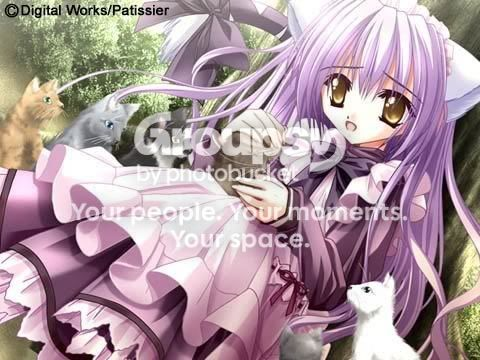

คือ เห็นคนอื่นเค้าแต่งนิยายกันแล้วอยากลองแต่งมั่งน่ะฮะ แต่เนื่องจากไม่เคยฝีกแต่งมาก่อนเลย ก็อาจจะมีที่ผิดพลาดไปเยอะพอสมควร ดังนั้น หากมีส่วนไหนผิดพลาดก็ขอคำแนะนำและคำติมา ณ ที่นี้ด้วยครับ
บทนำ...
ในโลกที่บิดๆเบี้ยวๆยุคนี้นั้น มีเกมส์ที่สร้างออกมาให้ผู้คนเล่นนับหลายพันเกมส์ นับตั้งแต่ยุคที่ยังใช้เล่นในเครื่องตลับรุ่นเก่าไล่พัฒนาเรื่อยๆจนมาถึงยุดที่เล่นในคอมพิวเตอร์และในเครื่องเล่นแบบแผ่นDVD แต่ที่ดูแล้วจะเห็นได้ชัดว่านิยมมากที่สุดในยุคนี้คงจะเป็นเกมส์ออนไลน์ที่เล่นในเครื่องคอมพิวเตอร์ที่สามารถเล่นกับคนอื่นๆที่อยู่ห่างไกลกันออกไปได้ทั่วประเทศ ซึ่งเกมส์ออนไลน์ก็มีให้เลือกเล่นนับหลายสิบเกมส์ แต่ละเกมส์ก็มีลักษณะเด่นเฉพาะตัวที่ทำออกมาไว้ไม่เหมือนกันเพื่อที่จะดึงดูดผู้เล่นให้เข้ามาเล่นเยอะๆ
แต่ เนื่องจากว่าบางทีนั้น ผู้เล่นหลายๆคนมักจะเบื่อหน่ายกับการเล่นเก็บเงินหรือเก็บของที่มักจะหาได้ยาก จึงได้พยายามทำทุกวิธีทางที่จะทำให้ตัวเองเล่นได้สบายขึ้น ไม่ว่าจะเป็นการใช้โปรต่างๆที่ทำให้อะไรๆก็ง่ายหมด และบางคนที่เล่นประเภทเก็บเลเวลก็มักจะใช้โปรแกรมบอทมาช่วยเล่นให้ ซึ่งเห็นได้ชัดว่าเป็นการเอาเปรียบผู้เล่นคนอื่นๆอย่างเห็นได้ชัดหรือเรียกอีกอย่างว่าเอาเปรียบกันแบบออกนอกหน้ามากกก
พอมีพวกใช้โปรช่วยเล่นหรือปล่อยหุ่น(บอท)มามาก ผู้เล่นที่เล่นธรรมดาก็เริ่มที่จะเบื่อหน่ายกันมาก เพราะมีแต่พวกที่โอเวอร์จนเกินเหตุ เช่น เพิ่งเล่นไม่นานแต่กลับรวยล้นฟ้าหรือเลเวลสูงมาว่าคนที่ไม่ค่อยจะมีเงินหรือเลเวลต่ำกว่าว่าเล่นไม่เก่งหรืออ่อน หรือไม่ก็พวกบอทที่มาคอยแจมและแย่งตีจนน่ารำคาญ
เพราะเหตุนี้ จึงได้มีทั้งผู้เล่นที่เลิกไปหรือไม่ก็พวกที่พยายามหาโปรแกรมมาช่วยเล่นเป็นจำนวนมากขึ้นในแต่ละวัน ซึ่งจุดประสงค์ของเกมส์บางเกมส์นั้นทำออกมาเพื่อให้เล่นผ่อนคลายเท่านั้น แต่กลับมีผู้ที่เล่นอย่างเอาเป็นเอาตายด้วยเหตุผลที่ว่า “อยากเหนือกว่าคนอื่น” จึงเป็นเหตุที่ทำให้เกิดข้อเสียต่างๆตามมามากมาย
แต่ที่ออกจะหนักขึ้นมาหน่อย เห็นจะเป็นการเปิดเซิฟเวอร์เถื่อน ซึ่งมีอะไรที่ดีกว่าเซิฟเวอร์จริงหลายต่อหลายอย่าง ไม่ว่าจะเป็นการเก็บเงิน การเก็บเลเวล การหาของ ซึ่งมันก็ดีกว่าเป็นไหนๆ แค่ผิดกฎหมายแล้วก็ห้ามใช้โปรเหมือนเซฟจริงเท่านั้น (มันโกงขนาดนั้นแล้วนี่นะ) ซึ่งเซิฟเวอร์จริงนั้น ก็พยายามที่จะดึงผู้เล่นของตัวเองกลับมาโดยการจัดกิจกรรมต่างๆ แต่ถึงกระนั้น บางทีก็ยังไม่ถูกใจผู้เล่นบางกลุ่มอยู่ดี
ปัญหาทั้งหมดนี้มันมีมานานถมเถแล้วใครๆก็รู้ แล้วก็ไม่รู้จะแก้นิสัยกันยังไงดี ถ้าเกิดจะแก้ให้ได้ ก็อาจจะต้องใช้สิ่งที่ทำให้เป็นแก้เอา....
เกมส์ที่มีให้เล่นปัจจุบันนั้นมีมากมาย หลายแนว หลายสไตล์ มีทั้งแบบเก็บเลเวล แบบเต้นและฟังเพลงตามอารมณ์ แบบยิงกันระห่ำ แบบกีฬาประเภทต่างๆ ซึ่งแต่ละอย่างต่างก็มีมานานแล้วก็ได้รับความนิยมเป็นอย่างดีสำหรับผู้เล่นทั่วๆไป
แต่... ก็มีอยู่มากที่ไม่ได้เป็นเกมส์ที่มีลิขสิทธิ์ แต่มีมาให้โหลดเล่นตามบอร์ดใต้ดินต่างๆ หรือเรียกง่ายๆว่าเป็นเกมส์เถื่อน ...อ่าไม่ใช้สิ ต้องเรียกเกมส์ใต้ดินสิถึงจะเหมาะกว่า ซึ่งเกมส์ใต้ดินนี้ ผู้ที่สร้างมักจะพยายามเผยแพร่ออกมาให้มากๆในขณะเดียวกันก็พยายามเชิญชวนหรือชักจูงคนให้มาเล่น แต่ถ้าพูดตามตรงเกมส์ใต้ดินนั้นก็ไม่มีอะไรมาก กราฟฟิคบางอย่างก็เป็นเหมือนพวกเกมส์ยุคเก่าๆโน้น.... แต่ถึงกระนั้น ก็ยังผู้สร้างบางรายที่พยายามทำออกมาให้ดูดีขึ้นมาอีก (ซึ่งตัวกระผมนั้นขอชมจากใจว่าทุกท่านที่ทำออกมานั้นมีความพยายามดีมากครับ) แต่ถึงแม้บางทีผู้ที่ทำจะพยายามเผยแพร่หรือให้คนอื่นๆช่วยก็ตาม ที่ผู้มาลองเล่นดูนั้นก็ถือว่าน้อยอยู่ดี
เพราะว่าเนื่องจากผู้เล่นส่วนใหญ่ที่ลองมาดูลักษณะการเล่นหรือระบบกราฟฟิคก็มักจะไม่อยากเล่นกันแล้ว ส่วนพวกที่เล่นแล้วเลิกเล่นไปก็อาจจะเป็นเพราะการควบคุมต่างๆนั้นทำได้ยากหรือการเล่นไม่มีจุดเด่นอะไรเอาซะเลย
“ไม่มีอะไรดีไปหมดทุกอย่าง” คำๆนี้ช่างติดหูคนหลายๆเหลือเกิน... แม้แต่พวกที่ชอบเล่นเกมส์ทั้งหลายที่มักจะนึกออกมาเวลาที่เล่นแล้วเซ็งหรือเสียอารมณ์ เพราะมันช่างจริงซะเหลือเกิน เพราะถ้ามีดีอย่างมันก็ต้องเสียอย่าง เช่น ภาพสวยแต่ยากเกินเหตุ ภาพสวยแต่เล่นแล้วมึนงง ภาพน่ารักแต่เล่นแล้วเซ็งเป็ด ภาพไม่ค่อยสวยแต่เล่นแล้วมัน ภาพสวยเล่นมันแต่บัคเยอะบรรลัย (ไม่ได้จงใจจะพาดพิงถึงอะไรทั้งนั้น ขออภัยด้วยครับ)
จะมีบ้างไหมน้อ ที่รวมเอาสิ่งดีไว้หมดทุกอย่างแบบที่ว่า ภาพสวย เล่นไม่ยากไม่ง่ายเกินกว่าเหตุ ไม่เล่นแล้วงง เล่นแล้วไม่รู้สึกเซ็งเพราะเล่นแล้วมัน ไม่มีบัคไม่มีโปรไม่มีบอท... ที่สำคัญมีลิขสิทธิ์ถูกกฎหมายแถมมีแต่เซิฟจริงเนี่ย... ไม่มีหรอกมั้ง เพราะที่มีตอนนี้มันดันเป็นเซิฟเถื่อน...?
Zone 1: เกมส์ปริศนา
จิ๊บ จิ๊บ จิ๊บ เสียงของนกกระจอกตัวน้อยๆร้องออกมายามเช้าอยู่บนกิ่งไม้เล็กๆใต้ร่มเงาของใบไม้เล็กๆของต้นไม้ต้นหนึ่ง ซึ่งต้นไม้ต้นนี้มีความสูงพอๆกับห้องชั้นสองของบ้านหลังหนึ่งที่อยู่ติดๆกัน บ้านหลังนั้นไม่ได้ใหญ่โตอะไรมากมายนัก ตัวบ้านนั้นทาสีขาวไว้ทั้งหลังสีกระเบื้องบนหลังคาก็คือสีน้ำตาลดำ เขตตัวบ้านนั้นตั้งอยู่ตรงท้ายสุดของหมู่บ้านเลยเขตรั่วบ้านมาก็เป็นสนามเด็กเล่นที่กว้างพอประมาณ ซึ่งตัวหมู่บ้านนี้ก็ไม่ได้ใหญ่โตอะไรมากนัก แต่ก็ไม่ถือว่าเล็กเช่นกัน(จะเอาไงแน่เนี่ย)
ในขณะที่นกน้อยก็ร้องของมันไป ท้องฟ้าก็เริ่มสว่างขึ้นตามปกติ ลมเย็นๆก็พัดมาเรื่อยๆๆๆ แล้วพัดไปทางบ้านหลังท้ายสุดของหมู่บ้าน พัดเข้าไปในห้องชั้นบนที่อยู่ใกล้ๆของต้นไม้ต้นใหญ่ พัดเข้าไปกระทบกับใบหน้าของเด็กสาวผู้หนึ่ง ซึ่งกำลังหลับอย่างสุขสบายอยู่บนเตียงของเธอ
“อะ... หืม?” เธอลืมตาขึ้นมาช้าๆ แล้วมองดูเพดานห้องเงียบซักพัก ก่อนจะลุกขึ้นมาขยี้ตาทั้งสองข้างแล้วยืดเส้นยืดสายบิดขี้เกียจไปมาด้วยอาการงัวเงีย พอนั่งเงียบๆอีกซักพักเธอก็ค่อยๆคลานออกจากเตียงนอนแล้วจัดการถอดเสื้อผ้าออกจนหมดก่อนจะคว้าผ้าเช็ดตัวมานุ่งแล้วเดินออกจากห้องไป
แกร้ง บานประตูห้องเปิดออกช้าๆ แล้วคนเปิดก็เดินออกมาแล้วเดินเข้าไปห้องน้ำด้านตรงข้ามโดยไม่ปิดประตูห้องตัวเองก่อน พอเดินมาถึงที่อ่างล้างหน้าเธอก็เปิดน้ำล้างหน้าแล้วหยิบแปรงฟันที่วางไว้ข้างๆกระจกมาจัดทำความสะอาดปากตัวเอง และหลังจากอาบน้ำอาบท่าอะไรเรียบร้อยแล้วก็เดินกลับเข้ามาที่ห้องของตัวเอง แต่พอเข้ามาก็เห็นลางๆว่าที่หน้าต่างห้องเหมือนมีคนนั่งอยู่ พอเธอลองหยิบแว่นตากลมสีดำที่วางไว้บนโต๊ะข้างๆประตูห้องมาสวม ก็เริ่มมองเห็นข้างหน้าได้ชัดขึ้น ที่ตรงขอบหน้าต่างนั้น มีชายคนหนึ่งนั่งหันหน้าออกไปข้างนอกแล้วฮัมเพลงเบาๆ
“เช้าที่แสนสดใสของคนอื่น มันช่างมีความสุขยิ่งนัก แต่ว่าตอนเช้าของฉันนั้น มันกลับช่างน่าหดหู่~”
“เพราะอีกไม่นานก็โดน~ ถีบตกลงไปตายยย!!!!!” เด็กสาวโวยลั่น ทำเอาชายหนุ่มที่นั่งอยู่สะดุ้งเฮือกแล้วรีบหันตัวกลับมานั่งบนเตียง
“อ้าว เข้ามาตั้งแต่เมื่อไหร่น่ะ?” เขาเอ่ยทักด้วยท่าทางที่ไม่ค่อยไว้ใจนัก
“ก็มาตั้งแต่ตะกี้แล้วน่ะสิเพ่!!” เธอตอบด้วยความโมโหก่อนจะหยิบไม้ทีที่วางอยู่บนโต๊ะทำงานมาถือไว้แน่น พอพี่ของเธอเห็นเธอหยิบอาวุธมาไว้ในมือก็หน้าเหวอขึ้นทันที
“เฮ้ยๆ เดี๋ยวก่อนเซ่ แค่นี้ถึงกับต้องลงไม้ลงด้วยเรอะ!?!” เขาว่าก่อนจะค่อยๆคลานลงจากเตียงแล้วเดินไปที่ตู้เสื้อผ้าที่ตั้งอยู่ข้างๆแล้วเดินเลาะไปตามผนังเพื่อจะหลบน้องสาวตัวเองที่ยืนอยู่กลางห้อง
ตึง!! จู่ๆไม้ทีก็พุ่งมาขวางที่หน้าทำเอาชะงักไปชั่วขณะแล้วค่อยๆหันไปหาคนถือที่เส้นเลือดผุดออกมาเต็มแขน
“ที่หน้าห้องก็ติดไว้แล้วไม่ใช่เรอะ ว่าถ้าไม่ได้รับอนุญาตห้ามเข้าน่ะ แต่เอาเถอะ เห็นแก่พี่น้องจะยอมลดโทษให้นิดนึงก็ได้ เธอดึงไม้ทีกลับมาแล้วหันหลังกลับไปที่โต๊ะทำงาน พอเขาเห็นเธอไม่ทำอะไรก็รู้สึกโล่งเป็นปลิดทิ้ง แล้วก็เดินไปที่ประตูอย่างสบายใจ แต่พอบิดลูกบิดได้แค่นิดเดียวน้องสาวเขาก็เอ่ยออกมาเสียงโหดๆ “ครั้งนี้แค่สั่งสอนเท่านั้น!”
“ห่ะ?” เขายังไม่ทันจะทำอะไรต่อ น้องสาวเขาก็เหวี่ยงไม้ทีไปทางด้านล่างแล้วหวดเสยขึ้นเข้าที่กลางร่องขาอย่างแรง สวบ!!!! “อูว!!!!!!!!!!!!!!!!!!!!!!!”
นกตัวน้อยๆที่เกาะอยู่ตามกิ่งไม้ต่างก็บินหนีไปกันหมดหลังจากได้ยินเสียงร้องที่แสนอุบาทหูดังไปทั่ว
“เฮ้อ หิวจัง” เธอบ่นเสียงหงอยหลังจากที่จัดการแต่งเครื่องแบบนักเรียน ม.ต้น ซึ่งชุดก็เป็นเสื้อสีขาวแขนสั้นประโปรงสีดำเหมือนสีโบที่ผูกตรงคอเสื้อ พอสำรวจทุกอย่างบนตัวเรียบร้อยแล้ว เธอก็หยิบหวีมาอันหนึ่งแล้วเตรียมที่จะจัดการทรงผมที่ยังกระเซอะกระเซิงอยู่
5นาทีต่อมา~
“...แค่นี้ก็โอเคแล้วมั้ง” เธอเอ่ยออกมาแล้วก็สำรวจผมสีทองอ่อนที่ยาวประบ่า ส่วนผมด้านหน้าก็ไว้แสกกลาง พอเห็นว่าใช้ได้แล้วก็ลองสะบัดไปซ้ายขวาเพื่อดูว่าตรงไหนบ้างที่ยังไม่เป็นระเบียบ แต่ไม่มีให้เห็นแล้ว พอแต่งผมเสร็จก็รีบคว้ากระเป๋าสะพายหลังขนาดกลางๆที่วางไว้ข้างๆผนังมา แล้วเดินออกห้องลงไปที่ชั้นล่าง “ลา~ลา~ลา~ลา~ล้า~”
“อ้าว หอนมาแต่ไกลเชียว” พี่ชายของเธอทักกวนก่อนจะงับแผ่นขนมปังปิ้งที่อยู่ในมือ
“อโห ว่าซะเสียเลยนะ!” เธอว่าก่อนจะเบือนหน้าไปที่อื่นอย่างเซ็งๆ
“แอน รีบๆมากินได้แล้ว เดี๋ยวก็ไปสายหรอก” หญิงสาวที่ดูอายุมากกว่าเธอหลายปีเอ่ยสั่ง ซึ่งแอน(กว่าจะรู้ชื่อ) ก็ยอมมานั่งทานแต่โดยดี
“นี่แอน ไปเอาไม้ทีมาให้หน่อย” พี่ชายของเธอเอ่ยขณะที่เคี้ยวอาหารอยู่ในปาก
“หืม? จะใช้งั้นหรอ?” เธอถามกลับขณะที่เคี้ยวตุ้ยๆ
“อือ วันนี้ต้องเรียนเขียนแบบกับไอ้อาจารย์เหม่งนั่นอีกล่ะ เซ็งจิบเล้ย~” เขาตอบอย่างอารมณ์ไม่ค่อยดีนัก พอแอนกลืนขนมปังทั้งแผ่นลงไปหมดก็วิ่งร่อนกลับขึ้นไปบนบ้านแล้วกลับลงมาในเวลาอันรวดเร็วพร้อมกับอาวุธที่ใช้เล่นงานพี่ชายเธอตอนแรก
“อะนี่” เธอวางไม้ลงบนโต๊ะแล้วคว้าขนมปังในจานแผ่นสุดท้ายมากิน ส่วนพี่ชายเธอที่กินไปหมดแล้วก็คว้าไม้มาแล้วลุกออกจากโต๊ะไปหยิบกุญแจรถทีแขวนรวมกันอยู่กับกุญแจบ้านมาแล่วเดินไปที่ประตูหน้าบ้าน แต่ก่อนจะออกไปแม่ของเขาก็ถามออกมาเสียงดัง
“นี่ๆ แล้ววันนี้เลิกกี่โมงน่ะ?”
“อืม ถ้าเขียนเสร็จเร็วก็น่าจะประมาณ 11โมงน่ะ” เขาหันกลับมาตอบแต่ก็ถูกถามมาอีกคำถาม
“แล้วตอนบ่ายไปอีกหรือเปล่า?”
“ไม่ไปล่ะ เห็นว่าอาจารย์แกไปธุระที่อื่นอยู่ คงอีกนานนั่นแหละกว่าจะกลับน่ะ” เขาตอบ แล้วก็รีบใส่รองเท้าผ้าใบสีดำที่วางไว้ข้างประตูมาสวมแล้ววิ่งไปที่โรงรถ
“แล้วลูกไม่รีบไปเรอะ?” แม่ของเธอกันมาถาม
“แล้วจะรีบตามไปทำไมล่ะค่ะ แม่ก็รู้นี่นาว่าถึงไปก็ยังไม่ได้ไปทันทีน่ะ” เธอว่าออกมาแล้วรีบคว้าแก้วน้ำมาดื่มเพราะขนมปังติดคอ พอดื่มอะไรเสร็จแล้วเธอก็เดินออกไปแบบสบายๆไม่รีบร้อนอะไร พอสวมรองเท้าเสร็จก็เดินไปหาพี่ชายเธอที่กำลังเช็ดรถมอเตอร์ไซค์ HONDA SONIC 125 สีขาวลายดำของเขาจนเงาวับทั่วทั้งคัน แม้แต่ยางล้อก็ยังขึ้นเงา
“ลูกจ้า~ วันนี้ก็ได้ซิ่งต่อแล้วน้า~” เขาเอ่ยเสียงลอยๆก่อนจะขึ้นควบแล้วคว้าหมวกกันน็อกมาสวมก่อนจะสตาร์ทรถแล้วปล่อยค้างไว้ซักพัก ส่วนแอนก็หยิบหมวกกันน็อกมาใส่เหมือนกันแล้วขึ้นนั่งโดยหันตัวไปด้านข้าง แล้วเธอก็บิดรถวิ่งไปจอดที่ประตูรั่วบ้านที่เปิดไว้ แล้วมองไปดูทั้งซ้ายขวาเตรียมจะออกไป แต่ก่อนจะไปแม่ของเขาก็เดินมาที่ระเบียงบ้านแล้วโบกมือลา
“ไผ่ แอน ไปดีมาดีนะ!”
“คร้าบ/ค่า” ทั้งสองคนตอบพร้อมกันก่อนที่รถจะเลื่อนออกมาแล้ววิ่งออกจากบ้านไป
“สวัสดีค่า ฉันแอนค่ะ เป็นเด็กสาวหน้าตาดี้ดีคนหนึ่งถ้าไม่ต้องใส่แว่นจนดูจืดละก็นะ (หลงตัวเองไปหน่อยมั้ง) เพราะว่าพ่อของฉันเป็นชาวต่างชาติส่วนแม่ก็ไทยแท้ เลยทำให้ฉันได้เชื้อผมสีทองมาแบบไม่ได้ตั้งใจ แต่ถ้าเทียบกับพี่ไผ่ที่ได้เชื้อตัวสูงมาแล้วละก็น่าอิจฉาสุดๆเลยล่ะ... ตัวฉันก็เป็นแค่เด็กนักเรียนชั้น ม.3ธรรมดาๆคนหนึ่ง ที่เพิ่งจะลืมตาดูโลกมาได้ 14ปีเอง ช่าง14ปีที่เรียนเล่นไร้สาระไปวันๆเหมือนผู้ชายหลายๆเลยนะ เพียงแต่แค่เกิดมาเป็นผู้หญิงก็เท่านั้นแหละ
อ๋อ ลืมแนะนำไป คนที่กำลังขับรถให้อยู่เนี่ยคือพี่ชายฉันเอง เค้าชื่อพี่ไผ่อายุก็ห่างกับฉัน2ปีเอง เค้าเป็นนักเรียนวิทยาลัยเทคนิค อยู่ช่างก่อสร้าง ปี2 ถึงเห็นบ้าๆบอๆงี้ก็เถอะ แต่เรียนเก่งไม่ใช่เล่นเลย แต่มันก็เสียอีกอย่างก็คือ เจ้าอารมณ์กับบ้าเกมส์หนักไปหน่อยก็แค่นั้นแหละ แต่ฉันจะว่ามากก็ไม่ได้หรอกเพราะเหมือนกัน (เหอๆ) แต่ต่างก็ตรงที่เค้าเก่งกว่าแค่นั้นแหละ”
เวลาต่อมา ขณะที่นาฬิกากำลังบอกเวลาว่ากำลัง 10.45AM อยู่ แต่ดูเหมือนว่าโรงเรียนมัธยมแห่งหนึ่งที่อยู่ในเมืองนั้นเลิกเรียนแล้วทั้งๆที่กำลังเที่ยง ที่อาคารเรียนทุกตึกต่างมีเด็กนักเรียนหลายร้อยคนก็เดินออกจากห้องเรียนมาเป้นพรวน บ้างก็บ่นเสียงดัง บ้างก็ท่าทางสบายใจดี บ้างก็รีบมาเปิดหนังสือเรียนที่กองไว้หน้าห้อง บ้างก็ยังนั่งทำข้อสอบอยู่ในห้องต่อ
ณ ตึกเรียนฝั่งมัธยมต้น บนชั้น3 ห้อง ม.3/6 นั้น ก็เป็นเหมือนกับห้องอื่นๆที่ยังมีคนนั่งสอบบ้าง นั่งคุยกับกลุ่มเพื่อนบ้าง แต่ต่างกันตรงที่ห้องนี้ทั้งก๊กชายที่มีอยู่7-8คน ดันมีผู้หญิงนั่งอยู่ด้วยอีกคน
“เฮ้ย เดี๋ยวไปไหนดีเนี่ย?” เด็กหนุ่มหัวเกรียนคนหนึ่งเอ่ยถามเพื่อนที่นั่งล้อมวงกันอยู่
“ไม่รู้ดิ ไปเที่ยวบ้านไอ้ส่อกันป่ะ?” เพื่อนหัวเกรียนอีกคนหนึ่งเอ่ยชวน
“อ้าว เฮย ทำไมต้องไปบ้านข้าด้วยละไอ้เจี๊ยบ?” ส่อถามกลับอย่างไม่ค่อยพอใจนัก
“เอ้า ถามมาได้ ก็บ้านเอ็งน่ะอยู่ใกล้โรงเรียนนี่หว่า เดินไปไม่ถึงครึ่งโลเอง” เจี๊ยบตอบกลับเสียงกวนๆ
“เออๆ ตามใจพวกเอ็งเถอะ” ส่อเอ่ยออกมาอย่างหงุดหงิดนิดๆ ก่อนจะหันไปหาแอนที่นั่งอยู่ข้างเขา “แล้ว ตัวจะไปหรือเปล่าจ๊ะ?”
“ไม่รู้สิ ดันนัดพี่ให้มาตอน11โมงด้วย ถ้าขอก็ไม่รู้จะได้หรือเปล่าอีก” แอนตอบพลางถอนหายใจยาวมาทีหนึ่ง
“อ้าว สุภาพสตรีไม่ไปแล้วข้าจะไปทำไมละเนี่ย” ไอ้เจี๊ยบแอบบ่นเบาๆ แต่ก็ไม่พ้นหูเพื่อนที่นั่งใกล้ๆกัน เลยโดนลูบเกรียนไปสิบกว่าที
“ไอ้นี่ก็หัวงูเหลือเกิน” เพื่อนหัวเกือบเกรียนคนหนึ่งว่าให้ก่อนจะหันมาหาแอนอีก “แล้วตอนบ่าย2นี่ออกมาได้หรือเปล่า?”
“อือ ก็ได้อยู่น่ะ ทำไมเรอะ?”
“ก็กะจะชวนไปร้านประจำอ่ะดิ”
“โหย ไอ้นี่ หาเรื่อง...” เพื่อนหลายคนโวยวาย “ที่พวกข้าไม่ชวยเลยนะเอ็ง หนอย...ไอเชี้ย”
“ก็ปกติพวกเอ็งไปกันประจำอยู่แล้วไม่ใช่เรอะ!” เขาโวยตอบ “คนอุตสาห์ช่วยดึงสาวไปให้ไม่พอใจอีก”
“อะไรเอ็งน่ะต้น ปกติฉันก็ไปเกือบๆประจำอยู่แล้วล่ะ มีแต่นายคนเดียวนั่นแหละที่ไปมั่งไม่ไปมั่งน่ะ” แอนว่ากลับทำเอาต้นแอบหน้าเสียนิดๆ
“ต๊าย ตาย มีแต่ข้าคนเดียวเรอะที่แปลกแยกน่ะ อ้าย อายเลย” ไอ้ต้นเอามือปิดหน้าไว้แล้วส่ายหน้าไปมา แล้วก็โดนเพื่อนที่หมั่นไส้ดีดกะโหลกใส่อีกหลายที เพี๊ยะๆๆ!!
“เอาเข้าไปๆ” แอนลองเงยหน้าไปมองนาฬิกาที่แขวนไว้บนกระดานพอเห็นว่าใกล้จะ11โมงแล้ว ก็ลุกขึ้นออกจากโต๊ะที่นั่งอยู่ “ไปก่อนเน้อ ตอนบ่ายสองเจอกัน”
“อือ เดี๋ยวเจอกันละกัน” แต่ละคนโบกมือให้ยกเว้นไอ้ต้นที่รีบถามคำถามมาก่อนที่เธอจะเดินออกห้องไป “เดี๋ยวสิ แล้วเธอจะไปไหนน่ะ?!”
“ก็กลับไปบ้านก่อนน่ะสิไอ้ฟาย” เพื่อนทุกคนในกลุ่มต่างพากันว่าให้แล้วรุมเตะวงกัน ตุบตับๆๆๆๆ!!!!
“นี่ฉันคบพวกมันไปได้ไงเนี่ย” แอนแอบนึกอยู่ในใจขณะที่เดินออกจากห้องมา แต่หลังจากเดินมาแค่ครู่เดียว ก็มีเพื่อนผู้หญิงคนหนึ่งวิ่งเข้ามาหาก่อนโผเข้ามาดึงตัวเธอไว้แล้วเริ่มถามเป็นชุด
“นี่แอนจ้า ว่างหรือเปล่าอ่ะ? ตอนบ่ายนี้จะไปไหนหรือเปล่า? ถ้าไม่ไปกะว่าจะชวนไปเที่ยวเป็นเพื่อนหน่อยได้ป่ะ? ถ้าไปแล้วมาหาหน่อยที่บ้านตอนบ่ายหน่อยได้ป่ะ?” เธอยิงคำถามใส่เป็นชุดๆพล่างทำตาบ้องแบ้ว โดยที่แอนยังไม่ทันจะได้ตอบอะไรมาเลย
“เอ่อ ขอตอบทีละข้อก่อนนะ ตอนนี้น่ะว่าง แต่ตอนบ่ายฉันมีนัดแล้ว คงไปเป็นเพื่อนเธอไม่ได้หรอก” เธอตอบกลับก่อนจะเร่งเท้าเดินให้เร็วขึ้น แต่ก็โดนเพื่อนเธอคนเดิมฉุดเอาไว้เสียก่อน
“ทะ ทำไมง้า เค้าพูดอะไรผิดหรอถึงไม่ไปด้วยง้า!!!” เธอถามเสียงสะอึกสะอื้นแล้วดูเหมือนจะเป็นร้องไห้อีก
“เปล่าหรอก เธอไม่ได้ถามผิดอะไรหรอก แต่ฉันมีนัดแล้วจริงๆ คงไปด้วยไม่ได้หรอก” เธอพยายามตอบแบบขอไปทีแล้วก็พยายามแกะมือของเพื่อนเธอที่จับแขนเธอไว้แน่นออก “ไปชวนคนอื่นเถอะนะ”
“ง่า แต่คนอื่นๆก็บอกให้มาชวนเธอไปนี่!! อีกอย่างถ้าเกิดเธอไม่ไปเป็นเพื่อนฉันก็เหงาตายพอดีนะจิ!” พอได้ยินอย่างนี้แอนก็หลบหน้าไปแล้วทำหน้าบึ้งด้วยความเจ็บใจ
“หนอยยยย จำไว้เลยไอ้พวกเพื่อนเลว บังอาจผลักภาระมาให้ฉันตลอดเลย!!!” เธอตะโกนด่าในใจก่อนจะรีบดึงแขนออกแล้วหนีสุดชีวิต ซึ่งเพื่อนของเธอก็วิ่งตามอย่างไม่ลดละ “ใครจะไปยอมไปกับเธอกันล่ะ ยัยตัวซวยเอ้ย ผู้ชายดีๆตั้งเยอะไม่ชอบ ดันมาชอบพวกเพศเดียวกันอีก คราวก่อนฉันก็เกือบโดนหล่อนปล้ำไปทีนึงแล้วหล่อนยังจะมีหน้ามาชวนอีกเรอะ!!!”
หน้าโรงเรียน
“แฮ่กๆ ๆ ๆ” แอนยืนหอบเหงื่อแตกหลังจากวิ่งหนีพ้นเพื่อนที่ตามตื้ออยู่ตลอดทาง ซึ่งคนที่ผ่านไปมาต่างก็พากันมองเธอแปลกๆกันไปทั่ว ทั้งเด็กนักเรียนทั้งพ่อค้าแม่ค้าที่ขายของใกล้ๆนั้น แต่เธอก็ไม่ได้แคสายตาของคนอื่นๆนักแล้วก็ยืนรอต่อไป พอเห็นพี่ไผ่ขับมาไกลๆเธอก็วิ่งโร่ไปหาทันที
บรืนน “...เอ่อ ไปทำอะไรมาน่ะ?” ไผ่ถามอย่างสงสัย ที่เห็นน้องตัวเองยืนหอบแฮ่กแถมเหงื่อก็ท่วมตัวไปหมด
“ช่างเถอะพี่ เผ่นก่อนเถอะ” ว่าแล้วเธอก็คว้าหมวกกันน็อกมาสวมแล้วขึ้นมานั่งทันที ซึ่งไผ่ก็ได้แต่สงสัยว่าไปวิ่งเล่นที่ไหนถึงเหงื่อแตกขนาดนี้ แล้วก็บิดรถกลับบ้านไป
เวลาต่อมา...
“...โอย เซ็ง เมื่อไหร่จะถึงเวลาละเนี่ย” แอนนั่งเท้าคางอยู่หน้าจอคอมในห้องของเธออย่างเซ็งๆ แล้วก็หันไปดูนาฬิกาเป็นระยะๆ แต่ไม่ว่าจะดูอีกซักกี่ที ก็ยังไม่ถึงบ่ายสองซะที เพราะตอนนี้กำลัง 1.00 PM อยู่ แถมอาการที่ค่อนข้างอบอ้าวก็ยิ่งทำให้เริ่มหงุดหงิดง่ายอีก
“...เบื่อแฮะ ไม่มีอะไรจะทำเล้ย~” เธอได้แต่บ่นออกมาให้ตัวเองฟังแล้วก็นั่งดูข้อความในบอร์ดไปเรื่อยๆพอหมดหน้าเธอก็เอนหลังไปนอนบนเตียง (เธอนั่งอยู่ตรงปลายเตียง) พอไม่มีอะไรจะทำเธอก็พลิกตัวแล้วเอื้อมมือไปคว้าสมุดที่อยู่หัวเตียงมาดูแล้วโยนกลับไปที่เดิม “เอาก็เอา”
แกรงๆๆๆๆๆๆ เธอมองที่หน้าจอคอมฯแล้วพิมพ์รั่วๆไปพักหนึ่ง หน้าจอเวปเพจอันหนึ่งก็เด้งขึ้นมา แต่เธอก็ไม่ได้สนอะไรในนั้นมาก พอโหลดอะไรเสร็จแล้วเธอก็เข้าไปหัวข้อ Webboard ทันที แล้วหลังจากรอโหลดซักพักหน้าจอเวปบอร์ดก็ปรากฏออกมา แล้วเธอก็เลื่อนลงมาเรื่อยๆดูไปที่ละหมวด พอมาถึงหมวด เกมส์อื่นๆ เธอก็จัดการกดเข้าไป
....ติ้ง! พอเข้ามาเสร็จแล้ว เธอนั่งเท้าคางแล้วก็ไล่ดูแต่ละหัวข้อไปเรื่อยๆอย่างเซ็งๆเพราะมันไม่ค่อยมีที่น่าสนอะไรเท่าไหร่เล้ย...
เกมสร้างเมืองคับเล่นบนเวป หนุกๆ [minicity]
เปิดเซิฟGta Reallife 24Hr[Hamachi]
แจกเกมส์ในgba อยากได้อะไรขอมา [1]…[24]
[Rajchavit]Gta Colo 24Hrs GMใจดีครับ
รูปเราเต็ม10ให้เท่าไหร่คะ
เกมส์ไทย คนไทยสร้างเล่นฟรีไม่เสียตัง!!!!!!!!!!!!!
dot a allstar CLUB
ขอSave Gta ตอนจบทีครับ
########--- สาวก Warcraft 3 เข้ามางับ ---#########
เว็บแฟนBattleonใหม่ใฉไลกว่าเดิม
Play Station 2 [1]…[8]
Free Games Downloads [1]…[111]
“เฮ้อ!!” ตุบ! แอนหงายหลังลงไปนอนอีกรอบเพราะทนเบื่อไม่ไหว เพราะยิ่งหาอะไรพยายามหาอะไรคลายเครียด กลับยิ่งเครียดเข้าไปใหญ่ซึ่งพอลองไปมองนาฬิกาอีกรอบก็เพิ่งจะ 1.06Pm ทำเอาเธอยิ่งเบื่อเข้าไปใหญ่ “โหยยย เมื่อไหร่จะบ่ายสองซะที!!”
ตึง!! “โอ๊ย!!” จู่ๆเท้าของเธอก็ไปเตะใส่ขาโต๊ะอย่างแรง จนเธอถึงกับสะดุ้งลุกขึ้นมาแล้วรีบดึงขาขึ้นมาจับตรงที่เจ็บทันที “อูยยยยยยยย!! ซวยชะมัดเลยธ่อ!!!” เธอกัดฟันบ่นอย่างเจ็บปวดแล้วพอขาค่อยๆหายเจ็บลงไปนิดๆเธอก็ยื้นมือไปควานหาเมาส์ที่วางไว้ข้างๆจอคอม แต่...
กึกๆๆ! แขนของเธอดันลงไปทับตรงปุ่มกดพอดีแล้วจู่ๆก็มีหน้าจออีกหน้าเด้งออกมาโดยที่เธอก็ไม่ทันเห็นว่าไปกดโดนตรงไหนเข้า
“อ้าว? ตายล่ะ” เธอปล่อยขาลงไปแล้วรีบหันกลับไปที่หน้าจอคอมต่อ ซึ่งในหน้าใหม่ที่เด้งออกมานั้นมีชื่อหัวข้อว่า “พระเจ้า เพิ่งรู้ว่าของดีๆแบบนี้มันมีในโลกด้วย!!”
พอเธอเห็นชื่อกระทู้ก็เลิกคิ้วขึ้นอย่างงงๆ ก่อนจะเลื่อนไปดู ซึ่งหน้าที่เธอดูอยู่นั้นเป็นหน้าที่สองและภายในกระทู้ก็มีข้อความว่าดังนี้
.........................................................
24 Nu_ViruS : ลองเข้าไปดูมาแล้ว สูดยอดจริงๆ
.........................................................
25 เดินผ่าน (Non-Member) : เกมส์เจี้ยไรวะ เล่นโคตะระยากเลย ภาพก็ไม่สวยเงินก็หายาก อย่าเล่นเลยกุว่า เสียเวลาทำมาหากินเปล่าๆว่ะ
.........................................................
26 Ran : ไอ้เรพบนเมิงไม่เคยเล่นอย่าเกรียนได้มะ บอกภาพไม่สวย ไม่สวยพ่องเมิงอะดิ สวยโคตระระเลยสาด
……………………………………..
27 _Engiบ้า_ : เออ เรพ25เกรียนชิบเลยว่ะ สงสัยอยากเด่นมั้ง ถุย!
……………………………………..
28 ๐รักพ่ายไร้ธรรม๐ : ไอ้คนตัด น.หนูออก เติม วอ อา ยอ ตามหลัง ที่ไม่เคยเล่นอย่ามาทำเป็นว่างั้นงี้เลยสัด เมิงเห็นเค้าบอกว่าเป็นเกมส์ทำเองเลยหาเรื่องติมั่วๆอย่างนั้นอย่างนี้ใช่มะ?
.........................................................
29 -ข่มขื่ullล้วยืuขำ- : เพิ่งเข้าไปเล่นมาเมื่อวาน อารัยว้าเนี่ย แม่ ง หยั่งกับเอาเกมส์หลายๆเกมส์มารวมกันหมดงั้นแหละ โคตะระยอดเลยไอ้คนทำ
.........................................................
30 จันทราไร้เงา_ตะวันไร้แสง : แล้วตกลงเอ็งชอบหรือไม่ชอบกันแน่ฟะไอ้หื่นแล้วขำ?
.........................................................
31 -ข่มขื่ullล้วยืuขำ- : ชอบดิโวย ชอบคอตๆ เล่นแล้วติดจนแทบไม่อยากเลิกเลย! (ถ้าแม่กุไม่มาเรียกให้เสียอารมณ์ก่อนนะ)
.........................................................
32 ไม่มีชื่อ (Non-Member) : ทะไมคนทำเค้าไม่ยอมแบ่งไฟล์โหลดทีละนิดๆละเนี่ย ให้โหลดที่เดียวหมดนี่มันโหดคอตๆเลยอ่ะ
.........................................................
33 X-Y-Z : จริงๆแบบที่เค้าแบ่งให้โหลดทีละนิดมันก็มีเหมือนกันนี่ แต่ไม่รู้เหมือนกันว่ามันหายไปไหนน่ะ
........................................................
34 Nu_ViruS : ในเวปของเกมนี้ไง ลองไปหาดูสิ
.......................................................
35 ไม่มีชื่อ : กำ ตะกี้ลืมใส่พาส -*- ซะงั้น แล้วเวปมันชื่อเวปอะไรล่ะครับ?
.......................................................
36 Nu_ViruS : เดี๋ยวPmส่งไปให้ละกันรอแปป
.......................................................
พอแอนอ่านมาถึงข้อความตรงนี้ที่เป็นข้อสุดท้ายก็ได้เซ็งแหง่วไปทันที เพราะไม่มีข้อความต่อแล้ว แถมเวลาที่โพสข้อความในนั้นก็ตั้งแต่ 11.59 Amแล้ว ซึ่งหมายความว่า มันร้างมาตั้งแต่เกือบๆเที่ยงแล้ว
“อะไรกันเนี่ย แค่บอกเวปแค่นี้จะงกไปทำเนี่ย...” แอนบ่นอย่างไม่สบอารมณ์ก่อนจะเริ่มพิมพ์ข้อความลงไปแล้วกดส่ง
......................................................
37 lอๅllรงอีก : Pmส่งมาให้ผมด้วยจิ อยากได้
......................................................
พอเห็นข้อความปรากฏขึ้นในกระทู้แล้ว เธอก็แอบนึกด่าตัวเองในใจเบาๆ “ตอนนั้นไม่น่าสมัครแล้วตั้งชื่อเมมนี่เลยฉัน...” แต่แล้วเธอก็เพิ่งจะนึกออกมาได้ว่ายังไม่ดูหน้าแรกเลย ก็เลยมะเหงกใส่หัวตัวเองทีหนึ่งก่อนจะกดเข้าไปดูหน้าแรกแล้วค่อยๆตั้งหน้าตั้งตาอ่านไป
………………………………….
1 *ไร้มารยา~ : คุณคงไม่เชื่อแน่ๆว่าผมไปเจออะไรมา อยู่ๆก็ไปเจอมาครับ เป็นเกมส์หนึ่งคับน่าสนใจมาก ตอนแรกที่ผมเห็นเค้าเอามาโปรโมทในเวปก็ไม่ได้คิดอะไรเลย แต่พอเห็นขนาดไฟล์ที่ให้โหลดแล้ว ขนลุกเลยคับ(แต่ก็ยังโหลดมาหมด) พอลองเล่นไปดูซักพัก ติดเลย เพราะทุกอย่างนี่ทำออกมาได้แจ่มมาก แถมไม่เหมือนเกมส์อื่นๆที่มันดีอย่างเสียอย่างเลย แต่เสียแค่อย่างเดียวตรงที่ดูเหมือนจะเป็นเกมส์ใต้ดินแค่นี้แหละ แต่ถ้าให้เลือกระหว่างเกมส์บนดินทั้งหลายกับเกมส์ใต้ดินอันนี้ ผมเลือกอันนี้นะ เพราะสนุกมาก
เอาแต่พลามซะยาว เอานี่ไปเลยคับเวปของเกมส์นี้ (เวปมาสเตอร์ เผลอลบทิ้งไปแล้วT_T)
แล้วนี่ก็ตัวโหลดเวปโหลดแบบทีเดียวหมด (เวปมาสเตอร์ เผลอลบทิ้งไปแล้วT_T)
ถ้าใครอยากจะโหลดทีละไฟล์ก็โหลดเอาในเวปได้เลยคับ
....................................................
“........ไอ้คุณเวปมาสเตอร์....... แบบนี้มันเรียกว่าจงใจแล้วมั้ง” แอนแอบด่าเบาๆก่อนเลื่อนลงไปอ่านข้อความอันถัดไปที่พล่ามไร้สาระออกมายาวพอๆกันหมด พออ่านไปเกือบๆหมดแล้วก็ลองเหลือบไปที่นาฬิกาอีกที ซึ่งตอนนี้ 1.44 Pmแล้ว “หวาย ทีอย่างนี้ละเร็วเชียว”
พอเธอดูนาฬิกาเสร็จก็รีบปิดคอมทันทีแล้ววิ่งโร่ออกห้องไป...
15 นาทีต่อมา
ณ ที่บริเวณตึกแถวแห่งหนึ่งในซอยเล็กๆ ที่เป็นทางเชื่อระหว่างถนนใหญ่สองสาย ซึ่งตึกแถวนี้เรียงต่อกันประมาณ 4คูหา ซึ่งมีทั้งร้านขายของชำ ร้านอาหารตามสั่ง ร้านเครื่องดื่มอาหารว่าง แล้วสุดท้าย ตรงร้านที่อยู่ตรงด้านซ้ายสุดของตึกแถว เป็นร้านเกมส์ที่ป้ายหน้าร้านติดชื่อร้านไว้ว่า Cyble-Cut
บรืน~~ เสียงรถมอเตอร์ไซค์คันหนึ่งดังมาแต่ไกลแล้วก็พุ่งเข้ามาจอดที่หน้าร้านเกมส์แห่งนั้นแล้วคนที่นั่งซ้อนท้ายมาก็รีบถอดหมวกออกแล้วดึงประตูกระจกออกก่อนจะยืนตากลมจากแอร์ที่พัดจนเย็นสบายแล้วก็มองสำรวจเครื่องในร้านที่ยังพอว่างอยู่บ้าง
“ว่างพอดีเลยพี่” แอนหันไปหาพี่ไผ่ที่กำลังทักทายหญิงสาวคนหนึ่งที่นั่งอยู่หน้าร้านอาหารว่าง พอได้ยินเสียงน้องสาวเรียก ไผ่ก็โบกมือไล่ให้เธอเข้าไปก่อน ซึ่งแอนเองก็แอบทำหน้าอมยิ้มอย่างเจ้าเล่นิดๆก่อนจะเดินเข้าไปในร้านแล้วแอบเหลือบมามองอีกนิดๆ
“โอ้ว~ เทพดอทเอมาแล้ว!” เสียงของเจี๊ยบเพื่อนของเธอร้องออกมาเสียงดัง ซึ่งก็ทำเอาคนในร้านพากันหันมามองหมด แต่ส่วนใหญ่ก็เพื่อนของเธอทั้งนั้น
“นี่ ไอ้เจี๊ยบ เอ็งน่ะจะตะโกนดังไปทำไมน่ะ ทำฉันกดฟินิจมูฟแปกเลยนะ” เสียงเด็กผู้หญิงที่นั่งอยู่ด้านตรงข้ามของเขาหันหลังมาว่าให้แล้วหันกลับไปที่จอต่อ
“โห นี่ก็โทษคนอื่นไปเรื่อย” เจี๊ยบแอบว่าเบาๆก่อนจะหันไปหาแอนต่อ “โอ ท่านเทพครับเลือกที่นั่งเลย โฮ่ๆ”
“อือ....นั่งตรงเครื่องหน้าดีกว่าแฮะ” เธอว่าลอยๆออกมา พอเจี๊ยบได้ยินเข้าก็หน้าเหวอทันที
“เดี๋ยวดิท่าน เครื่องข้างผมก็ว่างอยู่แล้วนี่ ทำไมต้องไปนั่งข้างไอ้ส่อด้วยอ่ะ?”
“โธ่ เมิงนี่ก็โง่จริงเลย เครื่องนั่นน่ะมันเครื่องประจำเฮียไผ่พี่แอนนะเฟ้ย” ส่อที่นั่งอยู่เครื่อง 2หันหน้ามาว่าให้แล้วตอนนั้นเองที่พี่ไผ่เดินเข้ามาพร้อมกับชายร่างใหญ่อีกคน
“อ้าว วันนี้จะนั่งเครื่องไหนล่ะ2พี่น้อง” เขาถามขณะที่เดินผ่านสวนแอนกับคนอื่นๆไป
“หนูเครื่อง1 ส่วนพี่ไผ่ก็เครื่องประจำค่า” แอนบอกเขาไปก่อนจะเดินไปที่เครื่อง1 ส่วนไผก็เดินไปที่เครื่อง 9 แต่พอกดเปิดเครื่องเสร็จไผ่ก็เหลียวมาหาเจ้าของร้านที่นั่งอยู่ที่โต๊ะใกล้ๆนั้น
“ว่าแต่ ตะกี้พี่ไปไหนมาน่ะพี่พัน?”
“อ๋อ ไปดูสถานที่จัดงานมาน่ะ แบบว่ามันไม่ค่อยจะมั่นใจเท่าไหร่ก็เลยไปตรวจให้มันแน่นอนใจก็แค่นั้นแหละ” พี่พันตอบ
“แหมๆ ก็ไม่แปลกอะไรนี่ จะแต่งงานทั้งทีก็ต้องเอาทุกอย่างให้มันลงตัวแล้วก็แน่นอนเป็นปกติอยู่แล้วนี่” ไผ่เอ่ยเสียงดังซึ่งหลายๆคนที่ได้ยินก็แอบขำนิดๆ
“ยินดีด้วยนะพี่ มะรืนนี้ก็ได้แต่งกับอาเจ้แล้ว~ เอ้าพวกเราตบมือหน่อยเร้ว~” แอนลุกขึ้นมาตบมือเสียงดังแล้วคนอื่นๆต่างก็พากันตบมือตามหมดทั้งร้าน “เฮ้~~~!!”
“โหย...” พันก้มหน้าไปเพราะเขินที่ถูกแซว แล้วเขาก็ว่าออกมาเสียงดัง “พอแล้ว! ถ้าไม่หยุดเดี๋ยวไม่เลี้ยงน้ำเลยนี่!!”
“ห่ะ เลี้ยงจริงง่ะ!!!” เจี๊ยบกับไผ่เผลอถามเสียงดัง
“เออ เลี้ยงเด้ แต่ตอนวันแต่งโน้นนะ ไม่ใช่ตอนนี้!!”
“ยังไงก็ได้คับเฮีย ของฟรีชอบอยู่แล้ว!” ว่าแล้วไผก็จัดการล็อกอินเข้าเกมส์ไปอย่างรวดเร็วก่อนจะหันไปหาก๊กเด็กที่นั่งอยู่ข้างๆ “เอ้าๆ ใครแน่อยากท้าชนโดต้าก็มาเลย!!”
“โอเชพี่” เจี๊ยบว่าก่อนจะหันไปหาเพื่อนข้างๆก่อนจะถามเสียงดัง “เอ้า ใครจะเอาบ้าง!!”
“ตูเว้ยๆๆ” แทบทั้งแถวตอบเหมือนกันหมดยกเว้นไอ้ต้นที่โบกมือไปมาว่าไม่เอา
“โอเช ได้ครบพอดี4-4” ไผ่เอ่ยออกมาก่อนจะลงไปนั่งเหมือนกับคนอื่น “แล้วจะเอาโหมดไหนดีละครับทุกท่าน?”
“AR DM ขึ้นอยู่ที่ดวง ได้อะไรเอาอันนั้น ห้ามดื้อเข้าใจ๋” แอนพูดด้วยท่าทางที่จริงจังแต่จริงๆก็แกล้งเก๊กไปงั้นแหละ
“แล้วพวกนายล่ะ?” ไผ่หันไปหาคนอื่นๆที่พยักหน้าตกลงเหมือนกันหมด “เออ งานนี้ทีมใครทีมมันละกัน อยากแสกนกันก็แสกนไป แต่อย่าเผลอโชว์นูบออกนะเฟ้ย ถ้าโดนเฟิทบัทไม่รู้ด้วยเน้อ”
“โอ้!!” ทั้งแถวตอบพร้อมกันก่อนจะเริ่มเปิดฉากสงครามวัดฝีมือ
และแล้ว หลังจากที่สถานการณ์ยือเยื้อมาเป็นเวลานานกว่า 1ชั่วโมง 10นาที ในที่สุดก็มาถึงฉากไคลแมกแล้ว เมื่อคู่พี่น้องยังยืนหยัดอยู่ได้กลางแผนที่โดยที่เพื่อนพาก็ดับไปหมดแล้ว จะเกิดใหม่ก็ไม่ได้เพราะฮีโร่หมด (ตายกันเยอะไปหน่อยมั้ง) และป้อมทุกทางของทั้งสองฝั่งก็แตกหมดแล้ว เหลือแต่คีพที่กำลังพากันตีป้อมใหญ่อยู่
“แฮ่กๆๆ เจ้าน่ะเก่งไม่ใช่เล่นเลยนี่” ไผ่เอ่ยออกมาขณะที่ยืนพลังฟื้นอยู่
“ฮึๆ ก็เพราะเจ้านั่นแหละที่ได้สอนข้ามาน่ะ” แอนเอ่ยออกมาโดยที่ยิ้มอย่างมั่นใจในขณะที่ยืนรอ
“งั้นเรอะ แต่ดูเหมือนตอนนี้มันคงจะต้องตัดสินกันแล้วละนะ” ไผ่ตั้งท่าเตรียมตัวหลังจากเติมพลังเสร็จ
“นั่นสินะ ลุยละนะ!!!” ทันทีที่เธอว่าออกมาทั้งคู่ก็พุ่งเข้าหากันและเตรียมจะปิดฉาก “ย้ากกกกก!!!”
ชิ้ง!!..... ความเงียบสงบเข้าครอบงำทั้งร้าน และเพื่อนแต่ละคนต่างก็จ้องตาค้าง ฮีโร่ทั้งสองตัวหยุดการเคลื่อนไหว เนื่องจาก... ป้อมบนดันโดนตีแตกไปแล้ว....
“โหย อะไรเนี้ย!!!” แอนกับไผ่กุมขมับเหมือนกัน “ยังไม่ทันจะปิดฉากจบแล้วเรอะ!!”
“โธ่ ก็มัวแต่คุยกันนั่นแหละ วู้” ไอ้ส่อว่าให้ทั้งคู่ก่อนจะกลับไปนั่งที่ตัวเองเหมือนคนอื่นๆที่มามุงดู
“เอาล่ะใครจะที่เท่าไหร่เอ่ย...” แต่ละคนต่างก็ลุ้นอันดับของตัวเองตอนที่กดออก พอได้เห็นผลปับ!
“เฮ้!!!!!/เหวอ!!/เยสส!!/ม่ายยย!!/โนววว!!!/แว้กกกก!!!/จ๊ากกกก!!!/เหอๆๆ” แต่ละคนร้องออกมาหลังจากที่เห็น (เสียงร้องดังเรียงจากด้านในมานอกนะ คนแรกก็พี่ไผ่เรียงมาจนถึงแอน)
1. ToNpI (พี่ไผ่)
2. ~JanniFer100%~ (แอน)
3. )(S.chiken)( (เพื่อนหัวเกรียนเบอร์3 นั่งอยู่ปีกขวาไอ้เจี๊ยบ)
4. XXXXXX (เพื่อหัวเกรียนเบอร์1 นั่งอยู่ปีกซ้ายไอ้ต้น)
5. _BiT_ (ไอ้ส่อ)
6. Ruk_d0G (เพื่อหัวเกรียนเบอร์4 นั่งอยู่ปีซ้ายไอ้ส่อ)
7. IM-ChiN (เพื่อนหัวเกรียนเบอร์2 นั่งอยู่ปีกขวาไอ้ต้น)
8. lnW~NoT/NooB (ไอ้เจี๊ยบ)
“ฮ่ะๆๆๆ ฮ่าๆๆๆๆๆๆ!!!!” แต่ละคนหัวเราะใส่ไอ้เจี๊ยบซึ่งอยู่ที่โหล่กันอย่างสะใจ
“ว้อย!! เปลี่ยนไปเล่นอย่างอื่นดีกว่าเฟ้ยย!!” ไอ้เจี๊ยบรีบออกแล้วไปเล่นอย่างอื่นแทน ส่วนคนอื่นๆต่างก็เปลี่ยนไปกันหมด เหลือแอนคนเดียวที่ไม่ได้เล่นอะไรต่อ แค่เข้าเน็ตเล่นไปงั้นๆ พอไอ้ส่อเห็นก็สะกิตแขนแล้วถามออกมา
“ไม่เล่นอย่างอื่นต่อเรอะ?” พอถามเสร็จคนที่นั่งอยู่ใกล้ๆก็แอบหันมาดูนิดๆ
“อือ ชักจะเบื่อแล้วน่ะ ก็เลยยังไม่อยากต่อน่ะ” เธอตอบ
“แต่จริงๆแล้วเล่นเป็นแค่เกมส์เดียวต่างหากล่ะ” อยู่ๆไผ่ก็ว่าออกมาเสียงดัง ทำเอาแต่ละคนหันไปมองเข้าแล้วหันกลับไปที่แอนที่นั่งมองแต่ที่หน้าจอโดยไม่หันมาสบสายตาคนรอบข้าง ซึ่งในใจเธอนั้นอายจนแทบจะแทรกแผ่นดินหนี พอได้ยินเสียงหัวเราะคิกคัก ก็แอบเหล่ไปข้างๆ แล้วก็เห็นเพื่อนเธอแต่ละคนพยายามกลั้นหัวเราะกันจนหน้าก่ำหน้าแดงทั้งแถว
“อะไรเล่า แค่นี้ไม่เห็นเป็นไรเลยนี่!” แอนโวยออกมาด้วยความอายใบหน้าก็เปลี่ยนเป็นสีแดงก่ำ พอเธอว่าเสร็จแต่ละคนก็ปล่อยก๊ากลั่น
“ฮ่ะๆๆๆๆๆๆๆๆๆๆๆๆๆๆๆ วู้ยย ไม่บอกไม่เชื่อนะเนี้ย!!” ไอ้เจี๊ยบว่าขณะที่หัวเราะเสียงดัง
“หนอยย แง่ง!!” แอนหันหน้าหลบไปแล้วแกล้งถอดแว่นมาเช็ดเพราะไม่กล้าสู้หน้าเพื่อน เสร็จแล้วก็ยกขึ้นมาสวมต่อแล้วดูอะไรไปเรื่อยๆ จนกระทั่งลองเข้าไปในเวปบอร์ดที่เข้ามาตอนก่อนออกบ้านอีกครั้ง ซึ่งเธอก็ลองเข้าไปที่หมวดเดิมแล้วก็ไล่หากระทู้นั้นไปเรื่อยๆ แต่จนแล้วจนรอดก็หาไม่เจอ “แปลกแฮะ หามาตั้ง7หน้าแล้วทำไมไม่เจอซะทีเนี่ย จะว่าไปที่เราโพสข้อความล่าสุดก็ประมาณบ่ายโมงนี่นา แต่หามาจนถึงของเมื่อวานแล้วก็ยังไม่เจออีก จะว่าหาข้ามไปก็ไม่น่าใช่ เพราะเราก็ดูจนละเอียดยิบแล้ว หรือว่า... ตอนที่เราหาหน้าแรกกระทู้มันอยู่หน้า2 แล้วตอนที่หาอยู่มันอาจจะมีคนตอบแล้วกระทู้มันขึ้นมาหน้าหนึ่ง เป็นจังหวะที่เราก็ไปดูหน้า2พอดีนะ? เอาเถอะ กลับไปหาอีกรอบก็ได้”
ครืดๆ.... “ไม่มีแฮะ” แอนไล่หาดูอีกครั้งแต่ก็ไม่พบ และไม่ว่าจะลองพิมพ์หาในส่วนค้นหาก็ไม่มี ทำให้เธอเริ่มรู้สึกตะงิดใจบางอย่าง พอลองเลื่อนขึ้นไปดูว่ามีใครPmมาหรือเปล่า ก็ปรากฏว่ามีข้อความใหม่มา1ฉบับพอดี เธอไม่รอช้า รีบกดเข้าไปดูทันที
คุณมีข้อความอยู่ 4ฉบับ ฉบับที่อ่านแล้ว 3 ฉบับที่ยังไม่ได้อ่าน 1
_______________________
จาก Nu_ViruS ส่งเมื่อ 7/3/2551 เวลา 2.02 Pm หัวข้อ ส่งให้ตามคำข้อ
_______________________
จาก HelloAndGooDByE ส่งเมื่อ 11/5/2550 เวลา 10.45Pm หัวข้อ สุขสันวันเกิดจ้า~
_______________________
จาก Sevia ส่งเมื่อ 5/5/2550 หัวข้อ อย่าเอาให้ใครดูเน้อ
_______________________
จาก _\Infinity- ส่งเมื่อ 4/8/2549 หัวข้อ ภาพที่ขอให้ตัดเส้นจ้า
_______________________
ว่าแล้วเธอก็เปิดเข้าไปดูข้อความที่ส่งมาใหม่ทันทีซึ่งในนั้นมีใจความสั้นๆว่า
อย่าเผยแพร่ออกไปแบบที่มันโจ่งแจ้งเด็ดขาดนะ เพราะเวปมาสเตอร์เค้าจะบลัสทิ้งทันทีที่เจอ
ส่วนนี่เวปของเค้า WWW .ein .com ถ้าจะโหลดหรือดูข้อมูลอะไรก็เข้าไปดูเลย เพราะเขามีบอกไว้หมด
_______________________
“...เอาเถอะ อย่างน้อยก็ได้เวปมันแล้วละกันน่า” เธอเอ่ยออกมาเบาๆก่อนจะกดเข้าไปดูพอเข้ามาก็มีหน้าจอถวายฯ เหมือนกับเวปเกมส์อื่นๆทั่วไป พอเข้าไปหน้าแรกก็เป็นส่วนที่แนะนำอะไรต่างๆ มีทั้ง กิจกรรมต่างๆ หน้าต่างล็อกอิน แล้วก็เมนูลัดต่างๆเหมือนเกมส์อื่นๆไม่มีผิด ซึ่งภายในเวปก็มีภาพต่างๆตกแต่งเอาไว้ไม่มากเท่าไหร่ พอลองไปดูชื่อเต็มๆเธอก็ทำหน้าแปลกใจนิดๆแล้วก็ลองอ่านในใจ “E I N M A T F I W … อ่านยังไงหว่า.... แต่ดูๆไปชื่อพิลึกแฮะ”
เธอว่าเสร็จก็ลองหาตรงที่ดาวโหลดเกมส์แล้วก็กดเข้าไป พอหน้านั้นขึ้นจอมาเธอก็แทบลมใส่ทันที หลังจากที่อ่านข้อความในนั้น
ดาวโหลดครั้งเดียวหมด กดที่นี่ (3.03GB)
ดาวโหลดแบบแยกไฟล์ ทั้งหมด 515ไฟล์ (สำหรับคนเน็ตช้า)
“อโห... ไม่ต้องโหลดแล้วมั้งแบบนี้อ่ะ” แอนว่าออกมาพร้อมกับนั่งกุมขมับอย่างปวดหัว แต่ก็ฉุดคิดขึ้นมาได้ว่า ตอนนี้ตัวเองอยู่ที่ไหนอยู่ พอนึกได้เธอก็วิ่งโร่ไปหาพี่พันที่นั่งอ่านหนังสือพิมพ์อยู่ที่โต๊ะ
“พี่พัน จ้างอะไรหน่อยได้ป่ะ?!” เธอชะโงกหน้าเข้าไปหาเข้าใกล้ๆ ซึ่งเขาก็แปลกใจนิดๆที่เธอมีท่าทางรีบร้อนผิดสังเกต
“เออ อะไรล่ะ?”
“ช่วยโหลดอะไรให้หน่อยได้หรือเปล่า?” เธอถาม
“อือ ก็ได้อยู่หรอก ว่าแต่จะให้โหลดอะไรให้ล่ะ?” เขาถามก่อนจะพับหนังสือในมือลง
“งานนิดๆหน่อยๆน่ะ บังเอิญขี้เกียจไปโหลดบ้านเพราะมันเยอะเกิน พี่ช่วยหน่อยนะ”
“เออได้ๆ จะโหลดอะไรก็ไปเปิดโหลดที่คอมนั่นเลย” เขาว่าแล้วก็ชี้นิ้วไปที่คอมที่ตั้งอยู่ด้านหลัง ซึ่งแอนก็วิ่งเข้าไปแล้ว เหมือนรู้ว่าจะต้องทำอะไร เธอจัดการเข้าไปตามเวปเมื่อกี้แล้วก็กดโหลดตรง โหลดทีเดียวหมด
“ฮึๆ ขอบใจมากจ้าพี่พัน เดี๋ยวพรุ่งนี้หนูมาเอาละกัน” เธอเอ่ยอย่างร่าเริงก่อนจะเดินยิ้มระรื่นกลับไปที่โต๊ะหน้า ส่วนพี่พันก็ลองเหลือบไปดูว่าเธอโหลดอะไรมา พอเห็นก็ถึงกับหน้าซีดลงนิดๆ
“แม่โว้ย มันโหลดอะไรละเนี่ย ทำไมมันโคตะระเยอะอย่างนี้ฟะ สงสัยกว่าจะโหลดเสร็จก็พรุ่งนี้เที่ยงโน้นมั้ง”
เวลาต่อมา (อีกแล้ว!!) เวลา 10.24Pm
แกรกๆๆๆๆๆ แค่เสียงเคาะแป้นพิมพ์ที่ดังมาจากหน้าคอมซึ่งตั้งอยู่ตรงมุมห้องข้างๆหน้าต่าง ก็ดูเหมือนจะดังไปทั่วห้องแอนแล้วเพราะบรรยายที่นอกบ้านนั้น เงียบสงบเอามากซึ่งถ้าหากเป็นคนที่เพิ่งย้ายเข้ามาอยู่ใหม่ๆ น่าจะรู้สึกหลอนประสาทอยู่บ้าง แต่สำหรับคนที่อยู่มากนานนับแรมปีนั้น แค่นี้น่ะสบายๆ
“...เฮ้อ~ เซ็ง” แอนค่อยๆเอนตัวลงไปนอนอีกครั้งก่อนจะบ่นออกมาเบาๆคนเดียว “ไหงเพื่อนคนอื่นดันหลับหมดแล้วล่ะเนี่ย ทั้งที่ตอนนี้ก็ปิดเทอมแล้วแท้ๆนา...... แล้วนี่ฉันจะทำอะไรต่อดีล่ะเนี่ย อุตสาห์ปิดเทอมแล้วไม่อยากหลับเช้าเลย... โธ่...”
ก้อกๆๆ “แอนเปิดหน่อย!!” เสียงเคาะประตูตามด้วยเสียงพี่ไผ่ดังมาจากนอกห้อง
“ห่ะ? รอเดี๋ยวนะ!” เธอรีบลุกออกจากเตียงแล้วไปเปิดประตูห้องที่อยู่ตรงข้ามกับเตียง แกรง! “มีอะไรหรอ?”
“เธอได้เอาไม้สเกลพี่ไปหรือเปล่า?” เขาเอ่ยถาม
“หืม ไม่ได้เอาไปนี่ทำไมหรอ?”
“มันหายน่ะสิ” เขาตอบเสร็จก็รีบเดินลงไปที่ชั้นล่าง ส่วนแอนก็ได้แต่ยืนงงซักพักก่อนจะปิดประตูห้องไปแล้วฉุดคิดอะไรบางอย่างออกมาได้ “เอ... จะว่าไปแล้ว ครั้งก่อนเราก็เอาคืนไปแล้วนี่นา... จะมาถามทำไมอีกละเนี่ย เฮ้อ~… เอ๊ะ?”
ผ่าง!!! อยู่ๆเสียงผ่างก็ดังเข้าในหัวเธอทันที เมื่อเธอเห็นไม้สเกลของพี่ไผ่ที่โต๊ะทำงานของเธอ
“เฮ้ย ไม่จริงใช่มะ...” เธอรีบยืนแขนไปคว้ามาแล้ววิ่งออกห้องไป “พี่ไผ่!! อยู่หนายยย!!!”
หลังจากที่เธอวิ่งลงไปหาซักพัก ก็เดินกลับขึ้นมาแล้วเข้ามาในห้องของเธอเหมือนเดิม
“เอาเข้าไปๆ อะไรมันจะบังเอิญขนาดนี้เนี่ย...” เธอบ่นลอยๆของเธอไปแล้วก็กลับมานั่งที่หน้าคอมเหมือนเดิม “.......เอาละ ไหนๆก็ไหนๆละ ลองเข้าไปอีกรอบจะเป็นไรไป”
ติ้ง~ หน้าจอของเวปเกมส์ลึกลับปรากฏขึ้นมาอีกครั้ง แต่คราวนี้กลับมีข้อความเด้งขึ้นมาว่า
ขออภัยกำลังปิดปรับปรุงชั่วคราว
มีเฉพาะส่วนของการสมัครไอดีและเวปบอร์ดเท่านั้นที่ยังเปิดใช้งานอยู่
ถ้าต้องต้องการสมัครไอดี กดที่นี่
ถ้าต้องการเข้าบอร์ด กดที่นี่
“...ช่วยไม่ได้แฮะ” เธอเลื่อนไปกดที่สมัครไอดี ซักพักก็มีหน้าจอที่บอกกฎต่างๆและข้อมูลส่วนตัวเหมือนเกมส์อื่นๆทั้งหลายแล่ แต่มันแปลกตรงที่ว่า นี่มันไม่ใช่เกมส์ที่มันถูกกฎหมายอะไรเสียหน่อย... แต่เธอก็ยังกรอกข้อมูลไปจนครบถ้วนแล้วก็กดส่งไป พอหลังจากกดไปซักพักก็มีอีกหน้าเด้งขึ้นมา
คุณได้ลงทะเบียนเรียบร้อยแล้ว ขณะนี้ไอดีของคุณยังไม่สามารถเล่นได้ จนกว่าจะกรอกรหัสยืนยันการใช้งานที่ได้รับทางเราซึ่งได้ส่งไปพร้อมกับของสมนาคุณ
“อเฮ้ย... แบบนี้ต้องรออีกกี่เดือนกันละ!! โอย พอๆๆ!! เลิก!!” เธอบ่นอย่างหัวเสียก่อนจะปิดคอมแล้วปิดไฟนอนไปอย่างไม่เต็มใจนัก
วันรุ่งขึ้น... ช่วงเวลาสายๆของเช้าที่สดใสเหมือนทุกวัน แต่ดูเหมือนคนที่กำลังยืนกวาดใบไม้หน้าบ้านอยู่ จะดูไม่สดชื่นเอาซะเลย
“ฮ้าว~~” แอนยืนหาวงัวเงียขณะที่ยืนกวาดใบไม้อยู่คนเดียวบริเวณหน้าบ้านโดยที่ตัวเองนั้นก็ไม่อยากที่จะทำนัก แต่ถ้าให้เลือกว่าระหว่างกวาดใบไม้กับปีนขึ้นบนหลังคาบ้านไปเปลี่ยนกระเบื้องเหมือนที่พี่ไผ่ทำตอนนี้ เลือกกวาดจะดีกว่า...
“แอน!! เอาขยะไปทิ้งให้หน่อย” แม่ของเธอตะโกนเรียกพร้อมกับถือถุงดำใบใหญ่2ถุงมาวางไว้ข้างๆโรงรถ เธอโยนไม้กวาดในมือลงแล้วเดินไปดึงถุงดำทั้งสองใบมาแล้วเดินออกประตูรั้วไปที่ถังขณะหน้าบ้าน แต่จังหวะที่เธอเหลียวกลับมาแล้วจะเข้าบ้านไปนั้น เธอก็เห็นกล่องพัสดุใบหนึ่งที่ใช้เวลาส่งของที่ไปรษณีย์วางอยู่ที่หน้าประตูรั้ว
“หืม... ใครเอามาวางไว้น่ะ?” เธอหยิบขึ้นมาดูอย่างกล้าๆกลัวๆ พอหยิบขึ้นมาดูตรงที่อยู่ผู้รับว่าส่งมาให้ใคร ปรากฏว่ามันส่งมาถึงเธอ แต่ ตรงที่อยู่ผู้ส่งกลับไม่มีอะไรเขียนอยู่เลย เธอรีบวิ่งกลับเข้าไปในบ้านแล้วขึ้นไปบนชั้นสองที่ห้องของเธอ พอเปิดประตูห้องเสร็จเธอก็รีบเอากล่องใบนั้นวางไว้ที่โต๊ะทำงานข้างๆประตูก่อนรีบวิ่งกลับลงไป
10.45 Am
หลังจากที่เธอจัดการทำความสะอาดหน้าบ้านเสร็จก็รีบวิ่งโร่เข้าบ้านไปแล้วรีบตรงไปที่โต๊ะอาหารที่จัดวางกับข้าวไว้แล้ว3อย่าง มีไข่เจียว ผัดถั่ว และหมูทอด แต่แอนก็ดูจะไม่ได้สนใจเท่าไหร่นัก เธอเดินไปหยิบจานและช้อนส้อมมาอย่างละ3 แล้วก็จัดการตักข้าวใส่จานทุกใบแล้วเรียงไว้ตามที่นั่ง
“เฮ้อ เหนื่อยชะมัด!” ไผ่บ่นเสียงดังขณะที่เดินเข้าบ้านมา แล้วพอมาถึงที่โต๊ะอาหารก็ลากเก้าอี้ที่สอดไว้ใต้โต๊ะออกมานั่ง
“เป็นไง เอากระเบื้องที่แตกออกหมดหรือยัง?” แม่ของเขาเอ่ยถามขณะที่เดินมานั่งตรงข้ามเขา
“อือ หมดแล้วล่ะ ให้ตายสิ ทำไมต้องให้มาเปลี่ยนเอาตอนนี้ด้วยละเนี่ย”
“ก็เรียนก่อสร้างไม่ใช่หรือไง แค่นี้ก็ต้องพอทำได้อยู่แล้วนี่”
“อย่าพูดอย่างกับว่าเรียนแล้วจะทำอะไรๆได้หมดทุกอย่างสิ!” เขาว่ากลับมาเสียงดังด้วยความไม่พอใจ “เรียนน่ะมันไม่ใช่ว่าจู่ๆจะเรียนแล้วทำได้หมดแค่ปีเดียวที่ไหนเล่า แค่ปี1ปี2น่ะยังแค่พื้นฐานเล็กๆอยู่นะจะบอกให้”
“โห เรียนภาษาอะไรละเนี่ย แค่นี้ก็ไม่มีสอน ฮีธ่อ” แม่ของเขาพูดออกมาโดยไม่ทันสังเกตว่าลูกชายรีบกระหน่ำกินข้าวในจานจนหมดแล้วก็ลุกออกจากโต๊ะไปโดยไม่หันกลับมาสนใจคนอื่นๆ “ว่าแค่นี้ทำเป็นอารมณ์ไม่ดี แบบนี้ละน้าถึงได้ปิดช้ากว่าคนอื่นน่ะ”
“แต่หนูว่าแม่นั่นแหละที่ผิดเต็มประตูเลยนะ” แอนว่าขณะที่เคี้ยวข้าวไว้เต็มปากจนแก้มป่องแล้วก็รีบกลืนเข้าไปก่อนจะดื่มน้ำตามไปอีก พอดื่มจนหมดก็ลุกออกจากโต๊ะไปอีก
“อ้าว ทำไมกินจังละเนี่ย?” แม่ของเธอหันหน้ามาถาม
“พูดอะไรน่ะ ก็หนูมากินก่อนตั้งนานแล้วนะ” เธอหันมาตอบแล้วก็รีบเดินไปที่หลังบ้านแล้วเอาจานวางกองรวมกันไว้ในอ่างล้างจาน
“เบื่อชิบเป๋งเลย ตายสิ” เสียงพี่ไผ่บ่นออกมาจากด้านหลัง เธอก็ค่อยๆหันไปหาเขาซึ่งกำลังเอาผ้าที่ซักแล้วในตะกร้าออกมาตากที่ราวตากผ้า
“นี่ๆ บ่นมากเดี๋ยวก็แก่เร็วหรอกพี่” แอนเอ่ยออกมาก่อนที่จะคว้าไม้กวาดข้างประตูมาแล้วเดินกลับเข้าในบ้านขึ้นไปชั้นบน ทิ้งให้ไผ่อยู่คนเดียวซักพัก พอหลังจากที่ไผ่ตากผ้าเสร็จหมดก็เดินถือตระกร้าผ้ากลับเข้าบ้านไป เป็นจังหวะเดียวกับที่แอนกวาดพื้นลงมาด้านล่างพอดี
“....” ต่างคนต่างไม่ได้พูดอะไรออกมา ไผ่ก็เดินกลับขึ้นห้องตัวเองไป ส่วนแอนก็กวาดพื้นบ้านไปเรื่อยๆ กว่าเธอจะกวาดเสร็จก็ปาเข้าไปประมาณเที่ยงกว่าแล้ว หลังจากที่เธอทำเสร็จได้ซักพักก็รีบกลับขึ้นไปบนห้องแล้งจัดการอาบน้ำแต่งตัวให้สดชื่นแล้วกลับลงมาพร้อมกับไผ่แล้วนั่งรถออกบ้านไปกันทั้งคู่
“....ชีวิตประจำวันของฉันมันก็เป็นแบบนี้เหมือนวันหยุดทุกวันนั่นแหละค่ะ คือหลังจากที่ทำงานบ้านเสร็จก็ไปร่อนกับพี่ไผ่ตลอด คือไปไหนไปกันนั่นแหละ ไม่ว่าจะไปที่ไหนฉันก็ชอบตามไปแจมทุกที่ตลอด เพราะว่าไม่ว่าไปไหนก็เจอแต่พวกเพื่อนของเค้าที่ต่างก็บ้าๆบอๆกันทั้งนั้น เหอๆ แต่ว่า... หลังจากวันนี้ไป ทุกอย่างจะไม่เหมือนเดิมแล้ว... จริงๆก็เหมือนเดิมนั่นแหละ แต่มันมีบางอย่างที่มันเพิ่มเข้ามา
เฮ้อ~ เอาล่ะ กลับมาเข้าเรื่องเลยละกัน หลังจากที่ฉันได้แผ่นCDงานที่พี่พันโหลดให้ ที่มีทั้งหมด5แผ่น (เห็นตอนแรกอึ้งเลยนะ) ก็ตั้งหน้าตั้งตารอคอยเวลาแห่งการปลดปล่อยของฉัน... พอหลังจากกลับบ้านมากินข้าวอาบน้ำเสร็จก็จัดการลงไอ้แผ่นงาน5แผ่น ใส่เครื่องแล้วก็ติดตั้งทุกอย่างให้เรียบร้อย กว่าจะเสร็จก็กินเวลาเข้าไปตั้งเกือบๆ3ทุ่มแน่ะ”
“เอาละ จะเจออะไรก็ต้องเจอล่ะ...” แอนหลับตาลงเตรียมทำใจให้สงบ ก่อนจะหยิบมีดสั้นมากรีตตามร่องกล่องที่มีเทปกาวติดไว้ พอกรีตเสร็จเธอก็จัดการเปิดฝากล่องออก ซึ่งในนั้นก็มีกระดาษแผ่นหนึ่งวางไว้ด้านบน พอหยิบออกมาก็มีอะไรบางอย่างที่มีลักษณะเหมือนมือมังกรในหนัง แต่อันนี้จะแยกเป็นง่ามสี่อัน และตรงด้านหลังก็มีสายไฟยาวเชื่อมติดกับกล่องสีดำเล็กๆที่หนักพอสมควร พอลองดูดีๆแล้วที่กล่องนั้นก็มีสายUSBสำหรับเชื่อมต่อกับคอมด้วย เธอค่อยๆวงาของที่ได้มาเอาไว้บนเตียงก่อนจะคลี่กระดาษในมือมาอ่านดู
“สวัสดีครับ คุณ จริณญา เดนเมลท์ เราขอขอบคุณที่ได้สมัครเป็นสมาชิกกับทางเรา ซึ่งทางเราก็ได้ส่งของที่ละลึก ซึ่งเป็นอุปกรณ์พิเศษที่ใช้ประกอบการเล่นมาให้ด้วย โดยที่คุณสามารถเลือกที่จะใส่หรือไม่ใส่ในขณะเล่นก็ได้ ซึ่งการใช้นั้นก็ง่ายๆ เพียงแค่คุณต่อสายเข้าที่เครื่องคอมพิวเตอร์ของคุณแล้วลงไดรเวอร์เชื่อมต่อลงไป หลังจากติดตั้งเสร็จเรียบร้อยแล้วก็ทำการเข้าเกมส์ปกติแล้วพอถึงตอนเลือกตัวละครก็ให้สวมสิ่งนี้ไว้แล้วเข้าเกมส์ เพียงแค่นี้คุณก็จะได้สัมผัสสิ่งใหม่ๆที่คุณอาจไม่เคยเจอได้เต็มที่
แต่ขณะที่ได้เข้าเกมส์แล้วนั้น ถ้าหากท่านไม่เคยใช้สิ่งนั้นมาก่อน (ซึ่งทุกท่านที่ได้ครั้งแรกคงไม่เคยเห็น) ขอให้ตั้งสติของท่านให้ดีก่อนจะเข้า เพราะเนื่องจากจะมีบางอย่างที่ทำให้ท่านเกิดความตกใจขึ้นมาในแรกๆ แต่ไม่นานก็จะเกิดความชินไปเอง
ส่วนรหัสที่ใช้ในการยืนยันการเข้าใช้ไอดีของคุณคือ L46BB2I73 คุณจะได้ใส่หลังจากที่ล็อกอินเข้าไปแล้ว ซึ่งหลังจากล็อกอินเข้าเกมส์จะมีหน้าต่างยืนยันเข้าใช้ออกมาก็ให้คุณกรอกรหัสตามที่ได้มาซึ่งคุณจะได้ใส่รหัสแค่ตอนล็อกอินครั้งแรกเท่านั้น โดยที่ครั้งต่อๆไปจะไม่มีการถามรหัสอีก
ขอให้ท่านชื่นชอบและสนุกกับสิ่งที่เราได้นำมาเสนอให้ท่านนะครับ
จาก Mr. Sevia
“เฮ้ยๆ ไอ้ที่เตือนตอนท้ายๆนี่มันยังไงๆอยู่แฮะ...” แอนเอ่ยออกมาโดยที่ชักจะเริ่มไม่ค่อยแน่ใจขึ้นมา พอลองดูในกลองอีกที ก็เจอแผ่นCDแบบเล็กอยู่ใต้กล่องและแผ่นพับคู่มืออีกแผ่น เธอเปิดช่องใส่ดิสก์ออกแล้วใส่แผ่นCDเข้าไป แล้วก็มีหน้าต่างเล็กๆขึ้นมา เธอก็จัดการตามที่ในแผ่นพับบอก ระหว่างที่ลงอยู่ก็ลองเปิดดูวิธีการใส่ของสิ่งที่ได้มา ซึ่งดูเหมือนจะต้องสวมเข้าที่หัวเพราะในรูปนั้นเป็นรูปการสวมที่ดูจากด้านหน้าแล้วข้าง
ติ้งนอง~ เสียงเตือนว่าติดตั้งเรียบร้อยแล้วดังขึ้น เธอก็จัดการปิดหน้าต่างนั้นแล้วกดเข้าที่รูปไอคอนอันใหม่ที่ดูเหมือนจะเป็นรูปเสี้ยวจันทร์ แต่ถ้าดูดีๆอีกหน่อยก็เป็นรูปตัวC หลังจากกดเข้าไปแล้ว หน้าต่างโหลดแพทก็เด้งขึ้นมา แต่ก็ดูเหมือนว่าจะไม่ต้องโหลดอะไร เพราะตัวปุ่มStartก็กดได้แล้ว แต่หลังจากกดเข้าไปก็มีเมนูปรับแต่ต่างๆเด้งขึ้นมา ซึ่งเธอก็จัดการปรับให้ดีที่สุด สูงที่สุดทุกอย่าง เพราะคอมเธอสุดยอดอยู่แล้ว... พอปรับอะไรเสร็จแล้วก็กดOKไป แล้วหน้าจอก็ขยายออกเต็มจอ แล้วก็มีข้อความต่างๆออกมาเหมือนเกมส์อื่นเป๊ะ
…………………………………
... produce by Infinity
…………………………………
เหมาะสำหรับผู้เล่นที่มีอายุ 13ปีขึ้นไป และเหมาะสำหรับผู้ใหญ่ที่ไม่มือถือสากปากถือศีล
…………………………………
E.I.N. M.A. T. F.I.W. ONLINE
ID________ []keep
PW_______
พอหน้าจอล็อกอินเด้งขึ้นมาเธอก็จัดการกรอกไอดีพาสเวิสและรหัสไป ก็มีหน้าจอสร้างตัวละครออกมา ตรงครึ่งหน้าจอฝั่งซ้ายเป็นช่องที่ให้เลือกตัวละครนั้นมีอยู่ 3ช่อง แต่ช่องจริงๆนั้นมีทั้งหมด12ช่อง ส่วนด้านขวานั้นดูเหมือนจะเป็นรายละเอียด ของสิ่งต่างๆ
“มีให้สร้างตัวละครตั้งเยอะเลยแฮะ... เอ... แล้วปกติเกมส์อื่นๆเค้าจำกัดกันเท่าไหร่ละเนี่ย ช่างเถอะเล่นๆไปงั้นดีกว่า” เธอบ่นอยู่คนเดียวก่อนจะเลือกหัวข้อสร้างตัวละคร
ชิ้ง~ หน้าจอเลือกตัวละครเปลี่ยนมาเป็นโหมดสร้างตัวละคนที่ มีรูปตัวละครอยู่ทางซ้ายมือ ส่วนด้านขวาก็เป็นรายละเอียดส่วนต่างๆที่แบ่งประเภทเอาไว้มากมาย ดังนี้
ชื่อตัวละคร
เผ่าพันธุ์ < 1 / 3 > เฉพาะเผ่าที่สาม < 1 / 7 >
ลักษณะ วัยรุ่น / ผู้ใหญ่
ส่วนสูง (มีแถบให้ปรับและมีบอกว่าเท่าใดสูง)
สีผิว < 1 / 4 >
ทรงผม < 1 / 27 >
สีผม (มีช่องแบ่งสีออกว่าจะเอาสีอะไรซึ่งมีทั้งหมด13สี และสามารถเลือกได้อีกว่าจะเอาสีอ่อนหรือเข้ม)
ลักษณะตา < 1 / 12 >
สีตา (มีให้เลือกเหมือนสีผม แต่ความอ่อนหรือเข้มจะน้อยกว่า)
ค่า Status
STR < 1 > กำลัง
AGI < 1 > ความเร็ว
VIT < 1 > ความอึด
INT < 1 > ความฉลาด
DEX < 1 > ความแม่นยำ
LCK < 1 > โชค
Point 24
OK-CANCEL
“แค่ภาพตอนสร้างตัวละครก็ทำมาได้สวยเลยแฮะ แบบนี้คงพอน่าเล่นหน่อยล่ะ” หลังจากที่เลือกอะไรเรียบร้อยแล้ว เธอก็จัดการกดOK
ติ้ง~~~ และแล้วก็มีรูปตัวละครโผล่ออกมาที่ช่องเลือกตัวหนึ่ง แต่ก่อนจะเริ่ม เธอก็เสียบสายต่างๆเข้าไปตามคู่มือและสวมอุปกรณ์นั้นเข้าไป ซึ่งเธอต้องให้ตรงปลายง่ามที่เหมือนนิ้วด้านบนนั้นโดนตรงหน้าผากพอดี ส่วนด้านล่างก็ต้องโดนตรงแก้ม
“รู้สึกแปลกๆชอบกลแฮะ อย่างกับจะไปบังคับหุ่นFafner งั้นแหละ” (แหม ก็คนแต่งกะเอาคล้ายๆนี่จ๊ะ) พอกดเริ่มไปปั๊บ เธอก็เริ่มรู้สึกถึงความผิดปกติบางอย่างขึ้นมาทันที เพราะของที่เธอสวมเอาไว้เริ่มมีเสียงขึ้นมานิดๆ
ตี้ดๆ~~~ และขณะที่เวลาในนั้นนับถอยหลังไปเรื่อยๆความรู้สึกที่น่าประหลาดซึ่งบรรยายไม่ถูกก็เริ่มไหล่เข้ามาทีละนิดจนกระทั่งมันโถมเข้ามาเต็มที่ ภาพที่ตาทั้งสองข้างมองเห็นนั้นคือ บรรยายกาศรอบๆมืดลงไปเรื่อยๆ ทั้งที่เธอนั้นไม่ได้หลับตาลง ในหัวของเธอตอนนี้โล่งไปหมดเพราะไม่รู้ว่าเกิดอะไรขึ้นกันแน่ แต่เธอกลับฉีกยิ้มขึ้นนิดๆก่อนจะเอ่ยออกมาเบาๆว่า “เอาเถอะ อะไรจะเกิดมันก็ต้องเกิดล่ะ...”
วูม!!!!!!!!!!!!!!!!!
ต่อตอนหน้า...
.............................................................................
ตอนนี้ยังไม่รับสมัครอะไรหรอกนะครับ แต่คาดว่าตั้งแต่ตอนที่สองขึ้นไปอาจจะมีก็ได้
[Fic]The E.I.N. Upตอนที่3 (ปิดรับสมัครแล้ว)
44 โพสต์
• หน้า 1 จากทั้งหมด 3 • 1, 2, 3
[Fic]The E.I.N. Upตอนที่3 (ปิดรับสมัครแล้ว)
 โดย ECO » พฤหัสฯ. 13 มี.ค. 2008 11:05 am
โดย ECO » พฤหัสฯ. 13 มี.ค. 2008 11:05 am
- ECO
- Dark Warrior

- โพสต์: 276285
- ลงทะเบียนเมื่อ: พุธ 26 ต.ค. 2011 9:31 pm
 โดย ECO » จันทร์ 17 มี.ค. 2008 10:25 am
โดย ECO » จันทร์ 17 มี.ค. 2008 10:25 am
โอย... กว่าจะหายไข้ได้... ลงต่อแล้วคร้าบ ถ้ามีส่วนไหนผิดพลาดไปก็ขออภัยเป็นอย่างยิ่งคร้าบ
Zone 2: โลกอีกโลก
วูม!!!!!!!! ทุกอย่างนั้นมืดมิด สติก็ค่อยๆเลือนลางลงไป แต่ซักพักก็ดูเหมือนจะกลับมาเหมือนเดิม ตอนนี้เธอรู้สึกเหมือนตัวเบาหวิวขึ้นมาโดยไม่รู้ว่าทำไม แต่ซักพักความรู้สึกนั้นก็ค่อยๆหายไป และก็เริ่มที่จะมองเห็นภาพรอบๆตัวที่ปรากฏออกมา พอรู้สึกตัวได้แล้วเธอก็ค่อยๆลุกขึ้นยืนแล้วมองสำรวจรอบๆตัวทันที เพราะตอนนี้เธอไม่ได้อยู่ในห้องของเธอ แต่อยู่ในกระท่อมหลังหนึ่งที่ดูเล็กเอามากๆ
“อะไรกันเนี่ย? เกิดอะไรขึ้นกับเรา?” เธอได้แต่ถามอยู่ในใจก่อนจะลองเดินไปส่องกระจกที่แขวนอยู่ที่ผนังใกล้ๆนั้น พอมองดูตัวเองที่รู้สึกว่ามันมีอะไรผิดปกติไป ซึ่งตอนที่เธอยังอยู่ในห้องนอนนั้นเธอแค่ใส่ชุดนอนธรรมดาๆ แต่ตอนนี้กลับใส่เสื้อแขนสั้นสีครีมแถมยังมีชุดเกราะอันเล็กใส่ทับเสื้อเอาไว้อีก กางเกงก็เป็นกางเกงขาสั้นสีน้ำตาลที่ยาวถึงหัวเขา รองเท้าก็เป็นรองเท้าหนังสีน้ำตาลแบบที่ใช้ใส่เดินป่า และจากผมสีทองที่ยาวประบ่า ก็กลายเป็นผมสั้นสีขาวที่หน้าผากซอยปิดไว้หมดส่วนด้านข้างก็ย้อยลงมาแล้วชี้ออกข้างนอกทั้งหน้าและหลัง
“...รู้สึกว่า ลักษณะชุดมันจะคุ้นๆแฮะ” เธอว่าออกมาแบบที่ไม่อยากจะเชื่อในสิ่งที่อยู่ต่อหน้า พร้อมกับลองนึกถึงตอนที่สร้างตัวละครเมื่อกี้ เพราะชุดตอนที่สำรวจดูเมื่อกี้ กับชุดตอนสร้างตัวละคร มันแบบเดียวกันชัดๆเลย “....ไม่จริงน่า... อย่าบอกนะว่าเป็นเหมือนพวกการ์ตูนหลอกเด็กทั้งหลายที่คนเล่นเข้ามาในเกมส์น่ะ....”
วูม!!!! จู่ๆ ก็มีแสงสีฟ้าพุ่งออกมาจากพื้นใกล้ๆที่เธอยืนอยู่พร้อมกับร่างของเด็กสาวคนหนึ่งที่ใส่ชุดแบบเดียวกับเธอปรากฏออกมา ซึ่งก็ทำเอาเธอรู้สึกแปลกใจเอามากๆว่าเธอโผล่มาจากไหน
“เฮ้อ ขี้เกียจเข้าโหมดฝึกชะมัดเล้ย!!” อยู่ๆเธอคนนั้นก็บ่นออกมาก่อนจะเดินออกกระท่อมนั้นไปโดยที่ไม่ได้สนใจแอนเลยสักนิด ส่วนแอนพอเห็นเธอเดินออกไปแล้ว ก็ลองแอบตามไปบ้าง พอออกมาจากกระท่อมแห่งนั้นก็เป็นหมู่บ้านเล็กเอามากๆ เพราะมีบ้านอยู่แค่5หลังเท่านั้น แถมดูเหมือนจะรกร้างมานานพอสมควรเลยด้วย แต่ตรงกลางหมู่บ้านก็มีชายชราคนหนึ่งยืนนิ่งเงียบและเด็กสาวที่เดินผ่านเธอไปเมื่อกี้ยืนอยู่ใกล้ๆด้วย
“...ทำไมมัวแต่ยืนเงียบกันทั้งคู่ละน่ะ?” แอนมองทั้งสองอย่างแปลกๆก่อนจะเดินเข้าไปหาชายชราคนนั้น พอตอนที่เธอกำลังจะทักนั้น อยู่ๆก็มีหน้าต่างข้อความเด้งออกมาที่หน้าเธอ
______________________
หืม? เจ้าหนูน้อย เจ้าเองก็เตรียมที่จะไปแล้วเรอะ?
ใช่
เปล่าหรอก
______________________
“...” เธอเลือกใช่ไปแล้วก็มีข้อความใหม่ขึ้นมาอีก
______________________
งั้นเรอะ... ก็อย่างว่าล่ะนะ ที่นี่น่ะไม่ค่อยมีใครอยากจะอยู่นักหรอก...
ว่าแต่ ข้าขอถามหน่อยนะ เจ้าน่ะเตรียมตัวเตรียมใจที่จะออกไปแล้วแน่เรอะ?
ก็... ไม่ค่อยจะมั่นใจเท่าไหร่หรอก
แน่นอนอยู่แล้ว
________________________
“...แล้วจะเลือกอะไรดีละเนี่ยคราวนี้ ส่งเดชไปก่อนละกัน” เธอนึกในใจแล้วก็เลือก แน่นอนอยู่แล้ว
________________________
อย่างงั้นเรอะ... ถ้าอย่างนั้น ข้าก็ขออวยพรให้เจ้าโชคดีละกัน แต่ก่อนไปเจ้าจะไป ข้าขอถามอีกข้อหนึ่งละกัน เจ้าน่ะ ต้องการจะไปที่ไหนกันล่ะ?”
Falina
Holong
Pliwachin
Laitee
Reebia
Tornos
_______________________
“อโห.... แล้วฉานควรจะเลือกอะไรต่อดี... ส่งเดชอีกรอบจะเป็นไรไป” เธอถอนหายใจยาวอีกทีก่อนจะเลือก Falina
_______________________
ที่นั่นหรือ? อืม งั้นก่อนจะจากกันข้าขอช่วยเจ้าอย่างหนึ่งเพื่อเป็นการร่ำราละกัน
_______________________
วูม!!!!! จู่ๆที่ใต้เท้าของเธอก็มีลมพัดวนรอบๆพร้อมกับมีแสงสีขาวโพยพุ่งออกมาด้วย “อะ อะไรอีกล่ะ?!”
_______________________
ขอให้โชคดีมีชัยนะ ถ้าหากมีโอกาสเราคงได้พบกันอีก!!
_______________________
วิ้ง!!! และแล้วภาพรอบๆก็เริ่มจางหายไปกลายเป็นสีขาวสว่างอยู่ซักพัก แสงสีขาวก็ค่อยๆหายไปเปลี่ยนเป็นสถานที่อีกที่หนึ่ง ซึ่งไม่ใช่ที่ๆเธอมาอยู่ตอนแรกแล้ว พอกลับเป็นปกติทุกอย่างกลับแล้ว เธอก็ได้แต่ยืนละห้อยอยู่ใจกลางเมืองแห่งหนึ่ง ที่มีผู้คนเดินพลุกพล่านเต็มไปหมด มีทั้งเด็กและผู้ใหญ่ที่ไม่ค่อยจะคุ้นตาเดินผ่านไปมาตลอด ส่วนที่ริมข้างทางก็มีผู้คนนั่งขายของเรียงกันเป็นแถวเต็มทั้งสองข้างทาง บางคนก็นั่งขายเงียบๆไป บางคนก็ตะโกนโปรโมทสินค้าเสียงดัง และบรรยายกาศก็เป็นกลางคืนที่รอบๆไม่ได้มืดแต่อย่างใด ถึงจะมีแสงจากโคมไฟข้างทางและแสงจันทร์ส่องมาด้วย แต่สิ่งหนึ่งที่รู้สึกได้อย่างดีคือ มันเหมือนโลกจริงๆไม่มีผิด
“...แล้วนี่ ฉันโผล่มาอยู่ที่ไหนอีกล่ะ?” เธอค่อยๆออกเดินสำรวจแต่ละที่ไปเรื่อยๆโดยไม่มีจุดหมาย แต่ไม่ว่าจะไปที่ไหนก็มีแต่คนอยู่เต็มไปหมด แต่พอเดินมาจนเริ่มรู้สึกเหนื่อยเธอก็ตรงรี่เข้าไปนั่งพักใต้ต้นไม้ริมข้างทางก่อนจะเริ่มคิดหาทางต่อไป “เอาแล้วไงฉัน นั่งอยู่ในบ้านดีๆก็ดันมาโผล่ที่ไหนไม่รู้ แถมตอนนี้ก็ไม่รู้จะทำยังไงต่ออีก แย่ชะมัด”
ตึง!!! อยู่ๆก็มีกระใบใหญ่ร่วงลงมาที่ข้างๆเธอ ทำเอาเธอสะดุ้งเฮือกก่อนจะหันไปหาจุดที่มันถูกโยนมา
“ให้ตายสิ ที่ขายของดันมาเต็มซะได้” เสียงชายคนหนึ่งบ่นอย่างไม่สบอารมณ์ก่อนจะลงมานั่งใกล้ๆนั้น “อุตสาห์ไปล่าของมาตั้งเยอะแต่ไม่ได้ขายนี่เซ็งจิบ”
“อือ ก็ว่างั้นแหละ” เสียงชายอีกคนหนึ่งเอ่ยออกมา ซึ่งเขามีผมที่สั้นประมาณต้นสีเทาอ่อนดวงตาสีเขียวเข้ม สวมเสื้อคลุมสีน้ำตาลยาวลงมาถึงขา พอมองสำรวจไปแล้วก็หันกลับไปหาเพื่อนของเขา “แต่เมื่อกี้นายโยนไปโดนเธอนะ”
“ห่ะ?” เขารีบหันกลังมาแล้วก็จะเอ๋เข้ากับแอนพอดี เขาไว้ผมตั้งซึ่งยาวไม่มาก สีผมสีดำสนิท ดวงตาสีเทาอ่อน “เอ่อ โทษที เมื่อโยนมาไม่ทันดูน่ะ”
“มะ ไม่เป็นไรค่ะ” เธอตอบก่อนจะค่อยๆขยับออกห่างเขา
“ว่าแต่ มานั่งรอใครอยู่หรอ?” ชายคนที่ยืนอยู่เอ่ยถาม
“คือ ไม่ได้รอใครอยู่หรอกค่ะ” เธอตอบพล่างยิ้มแฮะๆ
“อ้าว?... แล้วไม่ไปล่าเลเวลหรือไงล่ะน่ะ?” เขาถามมาอีกรอบ
“เอ่อ... (เอาเถอะ ยอมเสียหน้าดีกว่าไม่รู้อะไรเลยดีกว่า) จริงๆแล้วไม่รู้เลยต่างหากว่าต้องไปไหนน่ะ” พอเธอตอบแบบนี้ไปทั้งสองคนก็มองตาค้างแบบที่ไม่เชื่อหูตัวเอง
“นี่ ไอ้ตอนที่เริ่มมาตอนแรกมันก็มีNPCที่ให้คำแนะนำอยู่ไม่ใช่เรอะ?”
“ก็ตอนที่มันมีคำถามมา ดันเลือกไปเลือกมั่วน่ะ มันก็เลย ไม่รู้อะไรเลย แถมเกมส์ประเภทนี้ก็ไม่เคยเล่นมาก่อนด้วย มันก็เลยหลงอยู่แต่แถวนี้น่ะ” เธอเอ่ยออกมาอย่างอายๆ ส่วนคนที่ถามทั้งสองก็เหลือบไปมองหน้ากันก่อนจะหันกลับมาหาเธอ
“เอางี้ละกัน เดี๋ยวพวกฉันจะช่วยอธิบายให้ละกัน ลุกขึ้นมาสิ” เขาพูดเสร็จก็ลุกขึ้นแล้วแบกกระเป๋าข้างๆเธอมา ส่วนเธอก็ทำตามที่เขาบอกแล้วเริ่มถามอย่างไม่ค่อยแน่ใจ
“เอ่อ แล้วจะไปไหนล่ะ?”
“ก็ไปเก็บเลเวลน่ะสิ” เขาตอบสั้นๆก่อนจะเดินนำเธอไป ซึ่งเธอก็เดินตามต้อยๆไปโดยไม่ขัดข้อง
“แล้ว ที่เก็บนี่มันอยู่ไหนน่ะ?” เธอถามระหว่างที่เดินตามพวกเขาไป
“ก็ อยู่ที่นอกเมืองน่ะ แค่เดินผ่านเขตเมืองไปก็มีให้ตีเพียบแล้วล่ะ ถ้าไม่มีคนเยอะอ่านะ” เขาหันมาอธิบายให้ฟัง แล้วก็เดินนำมาเรื่อยๆจนถึงประตูเขตเมืองที่มีกำแพงหินขนาดใหญ่รายล้อมตัวเมืองไว้ แต่พอเห็นตรงนอกเมืองเธอกลับรู้สึกแปลกขึ้นมาเลยหันไปถามเพื่อนที่เดินนำอยู่
“เอ่อ ทำไมตรงนอกเมืองนั่นมันเหมือนไม่มีอะไรเลยล่ะ?”
“อ๋อ จริงๆแล้วมันต้องเป็นอีกแผนที่น่ะ ตรงนี้น่ะเป็นแค่จุดที่วาปที่จะเปลี่ยนไปอีกที่ต่างหากล่ะ” เขาตอบก่อนจะเดินตรงเข้าไปที่ประตูเมืองซึ่งตรงทางออกนั้นก็มีแสงสีขาวส่องออกมานิดๆ พอเดินเข้าไปที่แสงนั้นแล้ว ตัวเขาก็หายวับไป ซึ่งแอนก็ลังเลนิดๆ ก่อนจะเดินตามไปอย่างรวดเร็ว
วิ้ง!! พอหลังจากที่แสงสีขาวรอบๆหายไป ตัวเธอก็มายืนอยู่อีกที่แล้ว จากที่อยู่ตรงประตูเมืองด้านในก็มาอยู่ที่ประตูเมืองด้านนอกแล้ว ซึ่งดูเหมือนรอบๆนั้นจะเป็นทุ่งหญ้าที่กว้างมาก และมีต้นไม้ไม่ค่อยเยอะ แต่ส่วนที่เป็นเนินหรือเชิงเขาเตี้ยๆก็มีเยอะอยู่บ้าง
“เอาล่ะ มาถึงที่เก็บแล้วล่ะ” ชายคนนั้นเอ่ยออกมาก่อนจะชี้ไปที่มอนสเตอร์ตัวหนึ่งที่เป็นก้อนกลมๆ มีปีกด้านบนคล้ายๆปีกค้างคาวแต่เล็กกว่า สีตัวนั้นดูไม่ค่อยออกเท่าไหร่เพราะบรรยายกาศกลางคืนทำให้เป็นทุกอย่างเป็นสีฟ้าไปหมด “เอามีดไปไล่แทงเจ้านั่นเลย”
“เอ๊ะ?... แต่ฉันไม่มีมีดนี่นา” เธอตอบกลับ
“ลืมไป เธอไม่ได้ฟังคำอธิบายนี่นา” เขากุมขมับแล้วส่ายหน้าไปมา แล้วก็ล้วงเอามีดในกระเป๋ามาให้เธอ แต่พอเธอรับมาแล้วมีดเล่มนั้นก็เปล่งแสงสีฟ้าออกมาแล้วก็หายไป ทำเอาเธองงเป็นไก่ตาแตก
“แค่สั่งในใจว่าให้มันออกมาแค่นั้นแหละ” ชายอีกคนเอ่ยออกมา จากนั้นเธอก็ลองสั่งในใจว่าให้ออกมา มันก็ปรากฏออกมาในมือเธอทันที
“โห ยอดเลยแฮะ” เธอเอ่ยออกมาก่อนจะถามกลับเขาไป “เอ่อ แล้วทำไมเมื่อกี้มันถึงได้หายไปล่ะ?”
“มันหายไปอยู่ในช่องเก็บของน่ะ” พอเขาตอบมาอย่างนี้เธอก็ทำหน้างงทันที “ช่องเก็บของน่ะ แค่สั่งให้มันออกมาในใจเหมือนกับมีดมันก็จะมีหน้าต่างช่องเก็บของเด้งขึ้นมาเองนั่นแหละ ลองดูสิ”
“อือ” เธอลองสั่งดู แล้วจู่ๆก็มีหน้าต่างบางอย่างโผล่ขึ้นมาที่หน้าเธอ ซึ่งมีช่องแบ่งกระเภทสิ่งของอยู่3ช่อง และมีช่องเล็กๆอีก10ช่อง “เอ แล้วช่องประเภทนี่มันอะไรน่ะ”
“อ๋อ มันก็คือช่องสำหรับแยกประเภทสิ่งของที่มีอยู่กับตัวน่ะ ช่องบนสุดจะเป็นพวกอาหารกับยาที่ใช้เพิ่มพลังหรือไม่ก็ช่วยอะไรต่างๆ ส่วนช่องตรงกลางจะเป้นพวกอุปกรณ์ที่สวมใส่ได้ มีทั้งพวกอาวุธ ชุดเกราะ หมวก ฯลฯ แต่ของบางอย่างที่เรานึกว่าสามมารถใส่ได้ บางทีมันก็เป็นของจิปาถะที่ไม่มีประโยชน์อะไรหรอก ส่วนช่องล่างสุดจะเป็นพวกของจิปาถะทั่วไปที่หลายๆอย่างนั้นแทบจะไม่มีประโยชน์อะไรเลย แต่บางก็มีประโยชน์เยอะมหาศาลเลยล่ะ แล้วหน้าต่างนี้น่ะสามารถขยายออกได้แล้วก็เก็บของได้ไม่จำกัดจำนวนด้วย”
“เห แบบนั้นก็ดีน่ะสิ”
“แต่ถึงจะบอกว่าไม่จำกัดก็เถอะ มันก็จำกัดจำนวนน้ำหนักไว้อยู่ดีนั่นแหละ ถ้าเกิดน้ำหนักเกิน70%แล้ว ค่าHP กับ MP จะไม่ฟื้น แม้จะนั่งหรือไม่นั่งก็ตาม”
“เอ๊ะ แล้วนั่งกับยืนต่างกันตรงไหนน่ะ?”
“อือ ก็ถ้าเกิดนั่งอยู่กับที่แล้ว Hp กับ Mp จะฟื้นเร็วกว่ายืนเฉยๆน่ะ”
“อ๋อ...”
“แล้วก็ นอกจากหน้าช่องเก็บของแล้วก็ยังมี
หน้าต่างข้อมูลพื้นฐาน ซึ่งจะประกอบรายละเอียดไว้ดังนี้
1.ชื่อตัวละคร
2.เลเวล ถ้าได้ค่าประสบการณ์ครบตามที่กำหนดเลเวลก็จะขึ้น แล้วก็จะได้คะแนนสำหรับอัพค่าสเตตัท
3.เลเวลจ็อบ ถ้าค่าประสบการณ์จ็อบเต็มตามที่กำหนด เลเวลจ็อบก็จะขึ้นและได้ค่าอัพสกิล1คะแนน แต่เลเวลจ็อบจะขึ้นยากกว่าเลเวลธรรมดาเยอะพอสมควร
4.% ถ้าเกิดครบ100%เลเวลก็จะขึ้น
5.อาชีพที่เล่นอยู่
6.พลังชีวิตที่เหลือ/พลังชีวิตทั้งหมด
7.พลังเวทย์ที่เหลือ/พลังเวทย์ทั้งหมด
8.เงินทั้งหมดที่ตัวเรามี
9.น้ำหนักของสิ่งของที่บรรทุกได้ทั้งหมดและน้ำหนักสิ่งของทั้งหมดที่กำลังบรรทุกไว้
หน้าต่างSkill เป็นหน้าต่างที่บอกว่ามีสกิลอะไรบ้างและอัพสกิลอะไรได้ ซึ่งสกิลที่มีก็ขึ้นอยู่กับว่าเราเล่นอาชีพอะไรด้วย
หน้าต่างCharacter เป็นหน้าต่างที่บอกว่า เราใส่อุปกรณ์อะไรไปบ้าง ซึ่งจะมีอยู่12ช่อง และมีช่องพิเศษอีกช่องที่ไม่ได้เป็นช่องที่เกี่ยวกับอุปกณ์สวมใส่ แต่จริงๆก็คือของที่ใส่ตัวนั่นแหละ
หน้าต่างStatus เป็นหน้าต่างที่บอกค่าสเตตัทต่างๆ และอัพสเตตัท ซึ่งการอัพแต่ละอย่างจะมีผลดังนี้
Str = เพิ่มพลังโจมตีทางกายภาพ และเพิ่มน้ำหนักที่สามารถแบกรับได้
Agi = เพิ่มความเร็วในการโจมตีกับอัตราหลบหลีก
Vit = เพิ่มพลังชีวิตและเพิ่มพลังป้องกันทางกายภาพ
Int = เพิ่มพลังเวทย์และเพิ่มพลังโจมตีที่เป็นเวทย์ กับเพิ่มพลังป้องกันเวทย์
Dex = เพิ่มความแม่นยำในการโจมตีกับเพิ่งพลังโจมตีขึ้นมาอีกนิดหน่อย และเพิ่มความเร็วในการร่ายเวทย์ขึ้น
Lck = เพิ่มโอกาสในการโจมตีแบบคริติคัล และโอกาสที่ไอเทมจะดรอปสูงขึ้น
และมีอย่างอื่นบอกอีกเช่น
Atk = พลังโจมตี+พลังโจมตีพิเศษที่เพิ่มจากอาวุธที่ตีบวก ซึ่งพลังโจมตีจะเพิ่มขึ้นจากการอัพStrหรือDex แล้วแต่อาชีพที่เล่น ซึ่งถ้าStr 1 = Atk 1 หรือ Dex 1 = Atk 1
Def = พลังป้องกัน+พลังป้องกันพิเศษที่เพิ่มจากชุดที่ตีบวก จะเพิ่มจากการอัพ Vit ซึ่ง Vit 1 = Def 1
Matk = พลังโจมตีของเวทย์หรือสกิล จะเพิ่มจากการอัพ Int ซึ่ง Int 1 = Matk 1
Mdef = พลังป้องกันเวทย์ จะเพิ่มเหมือนกับ Matk
Hit = อัตราความแม่นยำในการโจมตี เพิ่มจากการอัพ Dex Dex 1 = Hit 1
Free = อัตราการหลบหลีกการโจมตี เพิ่มจาก Agi Agi 1 = Free 1
Critical = อัตราการโจมตีแบบคริติคัล เพิ่มจาก Lck Lck 12 = Critical 1
ASPD = อัตราความเร็วในการโจมตีของตัวละคร เพิ่มจาก Agi Agi 15 = ASPD 1
Status Point ซึ่งการเพิ่มเลเวล1เลเวลจะมีคะแนนในการอัพสเตตัทมาให้ ซึ่งค่าสเตตัททุกอย่างถ้าเพิ่มไปถึงบางจุด จะต้องใช้คะแนนในการเพิ่มมากตามไปด้วย ดังนี้
1-10 ใช้ 2 คะแนน
11-19 ใช้ 3 คะแนน
20-28 ใช้ 4 คะแนน
29-40 ใช้ 5 คะแนน
41-50 ใช้ 6 คะแนน
51-60 ใช้ 7 คะแนน
61-69 ใช้ 8 คะแนน
70-80 ใช้ 9 คะแนน
81-95 ใช้ 11 คะแนน
95-120 ใช้ 15 คะแนน
121-150 ใช้ 20 คะแนน
151-170 ใช้ 24 คะแนน
171-190ใช้ 28 คะแนน
191-223 ใช้ 32 คะแนน
224-242 ใช้ 36 คะแนน
243ขึ้นไป ใช้ 45 คะแนน
ส่วนคะแนนก็จะได้ตามเลเวลดังนี้
2-10 ได้ 3 คะแนน
11-20 ได้ 4 คะแนน
21-26 ได้ 5 คะแนน
27-35 ได้ 6 คะแนน
36-40 ได้ 7 คะแนน
41-46 ได้ 8 คะแนน
47-55 ได้ 9 คะแนน
56-65 ได้ 10 คะแนน
66-70 ได้ 11 คะแนน
71-75 ได้ 12 คะแนน
76-80 ได้ 15 คะแนน
81-85 ได้ 16 คะแนน
86-90 ได้ 18 คะแนน
91-95 ได้ 21 คะแนน
96-100 ได้ 22 คะแนน
101-150ได้ 23 คะแนน
151-200 ได้ 24 คะแนน
201-239 ได้ 30 คะแนน
240 ขึ้นไปได้ 32 คะแนน
หน้าต่างAbility เป็นส่วนที่บอกและอัพความสามารถอื่นๆ เช่น
1. ความเร็วในการเดิน Lv? ถ้าเลเวลสูงขึ้น ความเร็วก็เพิ่มขึ้น
2. ความเร็วในการวิ่ง Lv? ถ้าเลเวลสูงขึ้น ความเร็วก็เพิ่มขึ้น
3. การกระโดด Lv? ถ้าเลเวลสูงขึ้น ความสูงก็เพิ่มมากขึ้น
4. การกระโดดขั้นที่2 Lv? ถ้าเลเวลสูงขึ้น ความสูงก็เพิ่มมากขึ้น
5. การแดช Lv? ถ้าเลเวลสูงขึ้น ระยะทางกับความเร็วก็เพิ่มขึ้น
6. การกระโดดหลบ Lv? ถ้าเลเวลสูงขึ้น ความเร็วกับอัตราที่จะหลบทันก็เพิ่มขึ้น
7. วิ่งไต่กำแพงด้านข้าง Lv? ถ้าเลเวลสูงขึ้น ความเร็วกับระยะทางในการวิ่งก็เพิ่มขึ้น
8. วิ่งไต่กำแพงด้านหน้า Lv? ถ้าเลเวลสูงขึ้น ความเร็วกับความสูงก็เพิ่มขึ้น
หน้าต่าง Emotion แสดงหน้าอารมณ์ต่างๆ
หน้าต่าง Option แสดงเมนูการปรับแต่งรายละเอียดต่างๆ
หน้าต่าง Short Cute ช่องเมนูลัดสำหรับใช่สิ่งของหรือสกิลอย่างรวดเร็ว ซึ่งมีทั้งหมด 4หน้า แต่ละหน้าก็มี 10ช่อง
หน้าต่าง Party/เพื่อน แสดงรายละเอียดของเพื่อนที่ได้แอดไว้กับคนที่อยู่ในปาร์ตี้เดียวกัน
ทั้งหมด... ก็... ประมาณนี้แหละ...” เขายืนหอบแฮ่กหลังจากอธิบายรายละเอียดทั้งหมด
“อือ เข้าใจแล้วล่ะ” เธอว่าออกมาโดยที่คิดในใจว่า “ถ้าขืนบอกเอาอีกรอบฉันคงโดนฆ่าแหงๆ”
“เออ จริงสิ ตั้งแต่เจอหน้ากันยังไม่ได้ถามชื่อแส้กันเลยนี่” อยู่ๆเพื่อนคนที่ไม่ได้อธิบายยาวๆ (คนที่แบกกระเป๋าใบใหญ่ไว้) ก็เอ่ยออกมาก่อนจะเริ่มแนะนำตัว “กระผมชื่อ เอ็มฮะ ตัวที่เล่นตัวนี้ก็อาชีพพ่อค้า”
“ส่วน... ผมวิงฮะ ตัวที่เล่นก็นักเวทย์น่ะ” เขาว่าพร้อมกับยื้นมือมา ซึ่งเธอก็จับมือทักทายก่อนจะแนะนำตัวบ้าง
“ส่วนฉัน แอนจ๊ะ... แต่ตัวที่เล่นนี่ไม่รู้อาชีพอะไรเหมือนกัน แฮะๆ”
“อ๋อ อาชีพFree lance น่ะ ถ้าเพิ่งสร้างตัวไหมก็จะได้อาชีพนี้ตลอดนั่นแหละ” วิงอธิบาย
“เห~ ทุกคนเลยงั้นหรอ?”
“อือใช่ แต่ถ้าเก็บเลเวลได้ตามที่กำหนดแล้วก็สามารถไปเปลี่ยนอาชีพClass1ได้ตามใจเลยล่ะ”
“อ๋อ แล้วมีอาชีพอะไรบ้างละเนี่ย?” พอแอนถามคำถามนี้มา วิงก็หันไปหาเอ็มแล้วส่งสายตาบอกว่าให้เขาอธิบายไปซะ
“...ฟังให้ดีเน้อน้องจ้า ตอนแรกที่สร้างตัวมาก็จะเป็นอาชีพFree lance แต่ถ้าเก็บเลเวลได้ประมาณ 15ก็จะสามารถไปเปลี่ยนอาชีพคราส1ได้ ซึ่งการเปลี่ยนอาชีพแต่ละอย่างนั้น จะต้องทำเควสเปลี่ยนตามที่NPCกำหนดไว้ ซึ่งความยากง่ายในการเปลี่ยนของแต่ละอาชีพจะไม่เท่ากัน บางอย่างอาจจะง่ายบางอย่างอาจจะยาก และในการเปลี่ยนอาชีพจะต้องไปเปลี่ยนตามเมืองที่กำหนดไว้ด้วย แล้วอาชีพทั้งหมดที่มีอยู่ตอนนี้คือ
1.Swordsman หรือนักดาบ จะต้องเปลี่ยนที่เมือง Falina
2.Archer หรือนักธนู จะต้องเปลี่ยนที่เมือง Priwachin
3.Merchant หรือพ่อค้า จะต้องเปลี่ยนที่เมือง Holong
4.Thief หรือโจร จะต้องไปเปลี่ยนที่เมือง Reebia
5.Magician หรือนักเวทย์ จะต้องเปลี่ยนที่เมืองTornos
6.Acolyte หรือผู้ช่วยพระ จะต้องเปลี่ยนที่เมือง Falina
7.Gunslinger หรือมือปืน จะต้องเปลี่ยนที่เมือง Laitee
8.Student หรือนักเรียน จะต้องเปลี่ยนที่เมือง Falina
นี่ก็คือ อาชีพในคราส1ทั้งหมดล่ะ แต่ดูเหมือนว่าอีกหน่อยจะมีเพิ่มมาอีกอย่างเหมือนกัน แต่ไม่รู้เหมือนกันนะว่าจะจริงหรือเปล่าน่ะ”
“หรอ แต่อาชีพส่วนใหญ่นี่ทำไมถึงเปลี่ยนที่เมืองนี้ล่ะเนี่ย~?”
“อ้าว ก็นี่มันเมืองหลวงนี่ มันก็ต้องเยอะอยู่แล้วสิ” เขาตอบ
“หรอ”
“แล้วก็ ถ้าเกิดเก็บเลเวลจ็อบได้40ขึ้นไปถึง50 ก็จะสามารถเปลี่ยนอาชีพคราส2ได้อีก ซึ่งแต่ละอาชีพก็จะเปลี่ยนได้2แบบ แต่ละแบบก็มีความสามารถต่างกันไปด้วย
1.Swordsman สามารถเปลี่ยนเป็น Knight หรือ Crusader
2.Archer สามารถเปลี่ยนเป็น Hunter หรือ Trapper
3.Merchant สามารถเปลี่ยนเป็น Blacksmith หรือ Pharmacist
4.Thief สามารถเปลี่ยนเป็น Assassin หรือ Rogue
5.Magician สามารถเปลี่ยนเป็น Magic strong หรือ Shaman
6.Acolyte สามารถเปลี่ยนเป็น Priest หรือ Hermit
7.Gunslinger สามารถเปลี่ยนเป็น Military หรือ Agitator
8.Student สามารถเปลี่ยนเป็น Sage หรือ Engineer
หลังจากที่เปลี่ยนเป็นคราส2แล้ว ความสามารถทุกอย่างจะเพิ่มขึ้นมาอีกนิดหน่อย และก็จะได้สกิลเพื่มขึ้นมาอีกตามแต่ละอาชีพ แต่เธอคงไม่ต้องคิดมากอะไรหรอกมั้ง เพราะอีกนานนั่นแหละกว่าจะเปลี่ยนได้น่ะ”
“อือ ก็ว่างั้นแหละ” แอนพยักหน้ายอมรับ ก่อนจะสูดหายใจเข้าไปลึกๆแล้วมองหาเป้าหมายที่จะเก็บ ซึ่งกระจายอยู่ทั่วพื้นที่บริเวณนั้น พอเห็นว่ามีเป้าหมายตัวหนึ่งลอยใกล้เข้ามา เธอก็ชักมีดมาแล้วพุ่งเข้าไปทิ่มมันทันที
มิ้ง!!! เจ้ามอนสเตอร์ร้องออกมาหลังจากโดนแทง แล้วมันก็หันมาเล่นงานเธอโดยการพุ่งชนอย่างแรง ซึ่งก็ทำให้เธอเจ็บพอสมควร แต่ก็ไม่ถึงกับเป็นอะไรมาก เพราะเธอยังทิ่มมันต่อได้อีกหลายทีจนมันร่วงลงไปนอนตาย
“ฟู่ แค่ตัวเดียวก็เจ็บเอาเรื่องเหมือนกันแฮะ” เธอบ่นออกมาก่อนจะลูบที่อกซึ่งโดนกระแทกเข้าไป “แต่ทั้งที่ไม่ใช่โลกจริงๆ ทำไมถึงได้รู้สึกเจ็บละเนี่ย?”
“อ๋อ มันเป็นระบบของเกมส์นี้น่ะ ถ้าตัวละครบาดเจ็บตรงไหน ผู้เล่นก็จะเจ็บตรงนั้นด้วย แต่ไม่ว่าในเกมส์จะเป็นแผลลึกหรือว่าแขนขาขาดก็ตาม ตัวเราจริงๆที่นั่งอยู่หน้าคอมจะไม่เป็นอะไรเลย แต่จะแค่รู้สึกเจ็บทรมาณเฉพาะตอนเล่นแค่นั้นแหละ” เอ็มอธิบายพลางหัวเราะเสียงดัง แต่แอนกลับหน้าเบ้เหงื่อแตกตัวสั่นเทา ทำเอาเอ็มกับวิงใบ้กินกันไปทั้งคู่ “เอ่อ เป็นอะไรหรอ?”
“ถ้าเล่นแล้วเจ็บจริงฉ้านเอาน้า!!!” แอนแหกปากร้องไห้เสียงดังลั่นแล้วล้มลงนั่งลงบนพื้นหญ้านุ่มๆโดยมีอาการหวาผวาครอบครองสติไปหมด จนเอ็มต้องรีบหาทางปลอบให้เธอกลับเป็นปกติโดยเร็วที่สุด “จะเอาไงดีเนี้ย!! อยู่ๆก็โผล่มาที่ไหนไม่รู้แถมจะออกก็ออกไม่ด้ายอีกง้า!!”
ฟุบ!! ว่าแล้ว หน้าต่างบางอย่างก็โผล่ขึ้นมาที่ด้านหน้าเธอ พอเธอค่อยๆลืมตาขึ้นมาก็เจอ...
...............................
เลือกตัวละคร
ออกจากเกมส์
ออกไปด้านนอก
ยกเลิก
..............................
“......เอ่อ มันมีหน้าต่างอะไรไม่รู้ขึ้นมาอีกแล้วอ่ะ” เธอชี้ไปที่หน้าต่างอันนั้น
“อ๋อ อันนั้นน่ะเป็นหน้าต่างตามชื่อนั่นแหละ จะออกเกมส์ จะเปลี่ยนไปใช้ตัวอื่น หรือออกไปแต่ยังไม่ออกเกมส์ก็เลือกตามสบายเลย”
“อ๋อหรอ” เธอลองเลือกที่ออกไปด้านนอกแล้วอยู่ๆตาเธอก็พล่ามัวไปหมดแล้วก็ผลุบโผล่มาอยู่ที่หน้าคอมเหมือนเดิม ทำเอาเธอมึนตึบไปหมด แล้วพอเริ่มหายๆแล้วเธอก็ลองหันไปซ้ายขวารอบๆห้องเพื่อดูว่ามีอะไรผิดปกติไปหรือเปล่า แต่ทุกอย่างก็กลับปกติดี พอลองหันไปดูนาฬิกาว่าผ่านไปนานเท่าไหร่แล้ว เธอก็ดูเหมือนจะโล่งขึ้นนิดๆ เพราะมันเพิ่งจะผ่านไปแค่ไม่กี่นาทีจากตอนที่เข้าเกมส์เลย
“เฮ้อ~” เธอหลับตาถอนหายใจยาวออกมาก่อนหันกลับไปดูในจอซึ่งภาพทุกอย่างนั้นเหมือนกับที่ไปเห็นด้านในไม่มีผิด แถมยังเห็นเอ็มกับวิงที่ยืนมองเธอแล้วก็พูดออกมาแต่ไม่มีเสียงอะไร มีแค่ข้อความเด้งขึ้นมาบนหัวเท่านั้น “....เฮ้อ แต่ถ้าตัวจริงๆไม่ได้เจ็บอะไรก็ไม่มีปัญหานี่นะ”
วูม!!!! เธอค่อยลืมตาขึ้นมาช้าๆ แล้วก็เงยหน้าขึ้นมามองเพื่อนของเธอสองคนที่กำลังนั่งมองเธออยู่เงียบๆ พอเธอกำลังจะพูดอะไรออกมา เขาทั้งสองก็ลุกขึ้นยืนแล้วเอ็มก็ชี้ไปที่มอนสเตอร์ที่ร่อนไปๆมาๆใกล้นั้นพร้อมกับเอ่ยมาเสียงดังว่า “จัดการมันเล้ย!!น้องจ้า!!!”
โป๊ก!!! ไม่ทันไรเขาก็โดนวิงเขกหัวไปเต็มๆก่อนจะด่าเสียงดัง “จะตะโกนเสียงดังทำป้าอะไรนายน่ะหา!!!”
“อะไรเล่า!! ก็แค่ตะโกนให้มันได้อามรณ์เฉยๆง้า!!” แล้วทั้งคู่ต่างก็เถียงกันไปมาๆไม่ยอมหยุดกัน ซึ่งแอนก็ได้แต่แอบหัวเราะในใจเบาๆ ก่อนจะวิ่งไปไล่แทงมอนสเตอร์ใกล้ๆนั้นต่อ
30นาทีต่อมา
“แฮ่กๆๆ” แอบนั่งหอบแฮกอยู่ที่เนินหญ้าใกล้ๆประตูเมืองกับเอ็มและวิงที่นั่งอยู่ด้วย ท่ามกลางบรรยายกาศยามค่ำคืนที่ไม่ค่อยจะมืดมาก แล้วเอ็มก็ล้วงเข้าไปในกระเป๋าแล้วโยนน้ำขวดเล็กๆมาให้เธอ พอเธอรับมามันก็หาวับไปแล้วก็โผล่มาอีกที จากนั้นเธอก็เปิดดื่มอย่างกระหาย พอดื่มจนหมด
“ฮ้า!! สดชื่นชะมัดเล้ย!!” พอเธอว่าเสร็จก็เอาน้ำราดลงหัวจนเปียกชุ่มหัวทั้งหัว แต่พอราดลงไปหมดก็นั่งนิ่งไปเพราะเผลอลืมตัวไปซะสนิท เลยรีบหันไปหาเอ็มกับวิงอย่างอายๆ แต่ดูเหมือนเขาทั้งสองจะไม่ได้สนใจอะไร เธอก็เลยรู้สึกโล่งอกไปอีกทีที่พวกเขาไม่ได้มองแปลกๆ “ไม่อยากเชื่อเลยแฮะ ว่าแค่ไปไล่แทงไม่กี่สิบตัวจะเหนื่อยเอาเรื่องเหมือนกันแฮะ คงต้องรอเลเวลสูงๆก่อนแล้วมั้งเนี่ยถึงจะได้เหนื่อยยากหน่อยน่ะ ฮ่ะๆๆ”
“เรื่องแรงน่ะจริงๆแล้วมีเท่ากับที่เรามีจริงๆนอกเกมส์ต่างหากล่ะ” อยู่ๆวิงก็พูดแทรกเธอขึ้นมาซึ่งเธอก็หันมามองหลังจากได้ยินทันที “ถ้าเกิดนอกเกมส์เรามีแรงอยู่เท่าไหร่ ในเกมส์เราก็มีแรงทั้งนั้นแหละ เพราะไอ้มือมังกรที่สวมหัวน่ะมันไม่ใช่แค่ทำให้เราเข้ามาในเกมส์ได้แค่อย่างเดียวหรอก แต่มันยังวัดสมถะภาพพละกำลังของเราแล้วเอามาใช้ในเกมส์อีก แต่ถึงในเกมส์จะเหนื่อยหอบแค่ไหนก็เถอะ ตัวเราจริงๆก็ไม่ได้เหนื่อยตามด้วยหรอก ถ้าไม่เชื่อจะลองออกไปดูก็ได้นะ (แต่แค่เธอเล่นแทงเอาเป็นเอาตายมาตั้งครึ่งชั่วโมงนี่ แสดงว่าแรงนี่พอๆกับผู้ชายเลยสินะ)”
“ไม่ดีกว่า แค่เธอช่วยอธิบายมาให้ฉันก็เข้าใจแล้วล่ะ” เธอว่าพร้อมกับส่งยิ้มให้ ซึ่งเขาก็หน้าแดงขึ้นนิดๆ ก่อนจะรีบหลบหน้าไป
“แล้วจะไปตีต่ออีกหรือเปล่าล่ะ?” เอ็มถาม
“โอย ยังอ่ะ แค่นี้ฉันก็เหนื่อยจะแย่อยู่แล้วล่ะ” เธอพูดอย่างอ่อนแรงก่อนจะก้มลงนั่ง แต่เอ็มกับวิงกลับลุกขึ้นเธอเลยต้องลุกขึ้นอีก “แล้วจะไปไหนต่อล่ะ?”
“ก็ ไปนั่งขายของน่ะ ตอนนี้ก็คงจะพอมีที่ว่างบ้างแล้วละนะ” เอ็มตอบก่อนจากแบกกระเป๋าขึ้นหลังแล้วเดินนำไปที่ประตูเมืองที่อยู่ไม่ไกลจากพวกเขาเท่าไหร่นัก
วิ้ง!! หลังจากเข้ามาในเขตเมืองแล้ว ทั้งเอ็มและวิงต่างก็ชโงกหน้าไปรอบๆเพื่อหาที่ว่าง ตามความเคยชินของทั้งคู่ พอวิงเหลือบไปเห็นว่างยังมีช่องว่างปับเขาก็กระโดดเข้าไปนั่งจองที่ไว้ ส่วนเอ็มก็แบกกระเป๋าวิ่งตามไปแล้วพอไปถึงที่วิงก็ถอยออกให้เอ็มเข้าไปเสียบแทน แล้วซักพักบนหัวเอ็มก็มีกรอบเล็กๆที่มีตัวหนังสือเขียนชื่อร้านว่า [ทำมาค้าขาย ดีกว่านอนหลับ]
“...เอ้า แอนจะไปเดินเที่ยวหรือจะอยู่รอล่ะ?” วิงเดินมาถามเธอ
“เอ่อ ขอนั่งรอดีกว่านะ แฮะๆ” เธอว่าแล้วก็เดินผ่านเอ็มไปตรงมาที่ด้านหลังเขา แต่ขณะที่ผ่านเธอก็ลองเหลือบไปดูข้อความของร้านอื่นดูนิดๆ แล้วลงไปนั่งที่ข้างๆโคมไฟส่วนวิงก็เดินตามมานั่งใกล้ๆเธอ แต่ก็ไม่ได้นั่งใกล้มาก เขายังพอเว้นระยะห่างไว้พอประมาณ
“เฮ้อ จะขายออกหรือเปล่าเนี่ย...” วิงเอ่ยออกมาขณะที่นั่งมองรอบๆ ซึ่งแอนก็มีท่าทางงงนิดๆว่าเขามัวแต่จ้องอะไรอยู่ตั้งแต่เมื่อกี้แล้ว แต่พอดูดีๆแล้ว ที่ด้านหน้าเขามีกรอบสี่เหลี่ยมสีเขียวอ่อนลอยอยู่ตรงหน้า แล้วก็ดูเหมือนเขาจะดูมันอยู่ด้วย
“นี่ๆ” เธอสะกิดไหล่เขา “นายดูอะไรอยู่น่ะ?”
“อ๋อ ดูของที่ร้านอื่นๆเขาตั้งขายไว้อยู่น่ะ ถ้าเธออยากจะดูก็เลือกร้านที่ต้องการจะดูในใจเดี๋ยวหน้าต่างซื้อขายก็จะโผล่มาเองแหละ” เขาตอบพร้อมกับอธิบาย
“เห~” เธอลองทำตามดู แล้วก็ได้ผล มีหน้าต่างซื้อของที่มีสิ่งของหลายๆอย่างเรียงลงมาในนั้น และด้านข้างก็มีราคาของสินค้าแต่ละอย่างอยู่ด้วย แต่พอดูไปซักพักเธอก็หันกลับไปถามเขาอีกที “แล้ว ไอ้กรอบสีเขียวที่ฉันเห็นมันอยู่หน้าเธอนั่นมันอะไรหรอ?”
“อ๋อ ที่เห็นเมื่อกี้คงเป็นหน้าต่างซื้อของนั่นแหละ ดูให้ดีๆนะ ถ้าเกิดเห็นมีกรอบสี่เหลี่ยมสีเขียวลอยอยู่ที่หน้าคนที่ไหนก็ตาม หมายความว่า เขากำลังเปิดดูหน้าต่างบางอย่างอยู่ ซึ่งเราก็จะไม่รู้หรอกนะว่าเขาเปิดหน้าต่างอะไรไว้น่ะ” เขาตอบเชิงอธิบาย ซึ่งก็ทำให้เธอเข้าใจขึ้นมาอีกหน่อยหนึ่ง
“....”
“...มีอะไรงั้นหรอ?” วิงเอ่ยถามขณะที่เหลือบมาเห็นแอนนั่งมองบนท้องฟ้าอยู่
“ก็... ทำไมมันไม่สว่างซะทีล่ะเนี่ย ปกติตอนที่ฉันเห็นเกมส์อื่นที่มีกลางวันกลางคืนน่ะ มันไม่นานแบบนี้นี่นา แถมนี่มันก็ดูใกล้สว่างมาตั้งนานแล้วด้วย” เธอตอบ
“เฮ้อ กว่าจะตอนเช้าก็เที่ยงคืนโน้นแหละ” พอวิงตอบมาอย่างนี้ แอนก็หันมาจ้องตาโตทันที “จริงๆนา สองวันในเกมส์น่ะ เท่ากับ1วันจริงๆนา ตอนเที่ยงคืนข้างนอกก็เป็นตอนเช้าตรู่ในเกมส์ ส่วนหกโมงเช้าข้างนอกก็เที่ยงตอนเย็นในเกมส์ ที่เหลือคงไม่ต้องบอกก็พอรู้นะ”
“อือ แต่แบบนี้ถ้าเล่นตอนเฉพาะตอนเช้ากับตอนดึกก็ไม่ได้เห็นแสงตะวันเลยน่ะสิ” เธอว่าเสียงหงอยพลางมองขึ้นไปบนฟ้าที่ยังไม่สว่างเสียที
“ก็นะ ส่วนใหญ่คนที่เล่นเกมส์นี้ เขามักจะเล่นกันตอนบ่ายมาจนถึงดึกๆกันน่ะ ตอนเช้าๆหรือเกือบสว่างนี่ไม่มีใครเล่นกันหรอก” เขาอธิบายต่อไป
“งั้นหรอ... แต่จะว่าไป ก็คงเพราะเค้ามีความเป็นระเบียบหรือมารยาทละมั้ง ขนาดตั้งร้านขายของยังไม่ตั้งกันเกลื่อนกลาดให้รกตาเลยนี่นะ” เธอว่าออกมาพร้อมกับมองไปหาคนที่นั่งขายของเรียงกันเป็นแถวยาวซึ่งดูเป็นระเบียบเรียบร้อยดี
“จริงๆแล้วฉันว่าไม่ใช่หรอก” วิงเอ่ยขัดเธอขึ้นมา “จริงๆที่พวกนี้มาขายกันเป็นแถวแบบนี้เพราะ มันตั้งขายที่ถนนทางเดินไม่ได้ต่างหากล่ะ เพราะรู้สึกคนสร้างเขาจะตั้งระบบให้ทำยังไงก็ใช้สกิลตั้งร้านหรือสร้างห้องส่วนตัวตรงทางเดินไม่ได้นอกจากด้านนอกเท่านั้นแหละ ส่วนที่ไม่มีคนยอมไปตั้งเกลื่อนกลาดที่อื่นแต่มาตั้งที่ข้างถนนนี้ก็เพราะ มันเป็นถิ่นต่างๆที่คนทุกคนเค้าก็ตั้งกันขึ้นมาว่าเป็นอย่างนั้นถิ่นนี้เป็นอย่างนี้ ถ้าเกิดไปตั้งมั่วๆสั่วๆก็โดนไล่เหิบออกมาลูกเดียวน่ะ”
“จะ จริงง่ะ” แอนทำหน้าเหมือนไม่เชื่อหูตัวเอง แต่เขาก็พยักหน้าบอกว่าจริง
“ว่าแต่ นั่งอยู่แบบนี้มันก็ยังไงๆอยู่แฮะ” อยู่ๆเขาก็ลุกขึ้นยืนแล้วเอ่ยชวนเธอ “ไปเดินเล่น ซักหน่อยหน่อยดีหรือเปล่า? จะได้เป็นการพาทั่วรอบๆเมืองไปด้วยในตัวน่ะ”
“อ อือ ไปก็ได้” เธอค่อยๆลุกขึ้นยืนแล้วเดินตามวิงไป
30นาทีต่อมา
“....” หลังจากที่วิงพาแอนไปเดินชมรอบๆเมืองจนทั่วแล้วก็กลับมาถึงที่ๆเอ็มนั่งขายของอยู่ ซึ่งกำลังคุยอยู่กับชายคนหนึ่งซึ่งสวมชุดเสื้อคลุมสีครีมยาวลงมาถึงเข่า ผมด้านหน้าปัดออกด้านข้างแสกกลาง ด้านหลังมัดหางม้า สีผมนั้นดูไม่ค่อยออกนัก แต่ดูเหมือนจะเป็นสีแดงสว่าง
“ไง พี่!” วิงร้องออกมาก่อนจะวิ่งไปหาชายคนนั้น ส่วนแอนก็วิ่งตามต้อยๆเพราะกลัวหลง(?) “บังเอิญจริงนะที่เจอกันเนี่ยพี่แสง”
“ฉันชื่อไลท์เฟ้ย” เขาว่ากลับอย่างไม่ค่อยจะชอบใจนักที่โดนเรียกชื่อนั้น แต่วิงก็เหมือนจะไม่ได้สนใจเท่าไหร่นัก ตรงข้ามกับเขาที่หันมาสนใจแอน “แล้ว นี่ใครน่ะ?”
“อ๋อ เค้าชื่อแอนน่ะ เพิ่งจะเจอได้ไม่กี่ชั่วโมงเอง” วิงแนะนำตัวให้ ซึ่งไลท์ก็ยื้นมือมาพร้อมกับกล่าวแนะนำตัว
“ฉันชื่อไลท์ ยินดีที่ได้รู้จัก” พอเขาเอ่ยมาแอนก็จับมือกลับแล้วแนะนำตัวบ้าง
“ฉันแอนค่ะ ยินดีที่ได้รู้จักเช่นกันค่ะ” เธอกล่าวพร้อมกับถามกลับมาว่า “แล้วเล่นอาชีพอะไรอยู่ค่ะเนี่ย?”
“อ๋อ ตัวนี้ก็ผู้ช่วยพระน่ะ แล้วก็มีตัวอื่นอีก 4ตัว” เขาตอบเหมือนจะโอ้อวดนิดๆ
“งั้นหรอกค่ะ ส่วนฉันเพิ่งจะเล่นเป็นตัวแรกเองน่ะค่ะ แฮะๆ”
“งั้นหรอ เอ่อ! วิง หมวกวินลิ้งที่นายยืมไปใส่คราวก่อนอยู่ไหนน่ะ?” เขาหันกลับไปถาม ซึ่งวิงก็เอามือแตะหน้าฝากพร้อมกับดวงตาเบิกกว้างขึ้น บ่งบอกว่าเขาลืมไปเสียสนิท
“ระ รอเดี๋ยวนะพี่ เดี๋ยวผมไปเอามาจากคลังให้!!” วิงว่าเสียงดังก่อนจะวิ่งไปอย่างรวดเร็ว
“ให้ตายสิ ขออย่าให้มันหายเล้ย~” ไลท์กุมขมับตัวเองก่อนจะเดินไปนั่งตรงที่ว่างด้านหลังเอ็ม
“ว่าแต่หมวกวินลิ้งนี่มันเป็นยังไงค่ะเนี่ย?” แอนถามระหว่างที่ค่อยๆโน้มตัวลงนั่ง
“อ๋อ ก็เป้นหมวกที่รูปร่างเหมือนวินลิ้งที่อยู่นอกเมืองนี่น่ะ เธอไม่รู้จักเรอะ?” แอนพยักหน้าตอบ “เอาเถอะ อีกหน่อยเดี๋ยวก็รู้จักหลายๆอย่างเองนั่นแหละ”
“แล้ว เธอเล่นมานานเท่าไหร่แล้วล่ะ?” แอนถามด้วยสีหน้าที่ดูเป็นจริงเป็นจัง ซึ่ฃก็ทำเอาเขารู้สึกแปลกใจนิดๆ
“ ก็ประมาณ 4เดือนได้แล้วมั้ง กลังเอ็มกับวิงเดือนเดียวเอง”
“งั้น แสดงว่าวิงกับเอ็มก็เล่นมานานแล้วงั้นหรอ?”
“อือ ตัวพ่อค้าที่เอ็มเล่นอยู่ตอนนี้น่ะ เป็นตัวที่7แล้ว ส่วนวิงน่ะตัวที่9แล้วล่ะ” พอเขาเล่ามาแค่นี้ แอนก็จ้องตาแป้วด้วยความอยากรู้อยากเห็นมากขึ้นอีก “7ตัวของเอ็มน่ะ เปลี่ยนเป็นคราส2ไปแล้ว3ตัว ส่วน9ตัวของวิงน่ะ เปลี่ยนไปแล้ว6ตัว ส่วนฉันถ้าตัวนี้เปลี่ยนอีกก็ครบ7พอดี แล้วเธอล่ะ? กะจะเล่นไว้ซักกี่ตัวน่ะ?”
“อืม ไม่รู้สิ คงจะเล่นตัวนี้ไปให้รุ่งๆหน่อยค่อยเล่นตัวใหม่ละมั้ง” เธอตอบเหมือนไม่ค่อยจะมั่นใจนัก
“งั้นเรอะ แล้วสเตตัทเธอเท่าไหร่ล่ะ?” แอนทำหน้าแปลกใจขึ้นหลังจากที่เขาถาม “ถ้าจะเล่นให้รุ่งละก็ ต้องดูที่การอัพด้วย ถ้าถูกดีก็ดีไป ถ้าไม่ดีก็ซวยหน่อยแค่นั้นแหละ”
“งั้นหรอ เอ่อ ก็...” แล้วแอนก็บอกไลท์ไปหมด
“อืม ไม่เลวเลยนี่ Str 9 Agi 9 Vit 5 Dex 4 ที่เหลือ1หมด แล้วไม่อัพต่อเรอะ?”
“ก็ คะแนนมันยังนอนอยู่นี่นา ก็เลยกะจะสะสมไปซักหน่อยแล้วก็ค่อยอัพทีเดียวน่ะ” เธอตอบออกมาก่อนจะอธิบายเหตุผล “ถ้าอัพไปตอนนี้มันก็ไม่ค่อยต่างกับไม่อัพเท่าไหร่เลยนี่นา อีกอย่างฉันก็เพิ่งจะเลเวล 10ด้วย คะแนนมันก็น้อยแบบไม่ต้องแปลกใจเลยล่ะ”
“อือ นั่นสินะ แต่อัพแบบนี้แสดงว่าจะเล่นนักดาบสินะ”
“ก็ ประมาณนั้นน่ะ แฮะๆ” แต่ในใจเธอคิดว่า “จริงๆแล้วมั่วแหลกเลยต่างหาก”
“แต่จริงๆฉันว่าเธอน่าจะสร้างตัวละครเตรียมไว้เพิ่มอีกซัก5-6ตัวก่อนนะ” เขาว่าแล้วก็ยื้นหน้าเข้ามากระซิบข้างหู “เพราะมันต้องมีซักวันนั่นแหละที่จะเจอกิจกรรมในตำนานน่ะ”
“เอ๊ะ? กิจกรรมในตำนานงั้นหรอ?”
“อือ เป็นกิจกรรมที่เรียกได้ว่าทำให้คนไม่ยอมเบื่อกันเลยล่ะ แล้วก็กิจกรรมนี้น่ะมันสุ่มว่าจะมาเมื่อไหร่ก็ไม่รู้ด้วย แต่ครั้งล่าสุดนี่ก็สัปดาห์ที่แล้วนี่เอง กว่าจะมีอีกทีก็นานหน่อยล่ะ” เขาอธิบายเสียงเบาๆ
“แล้วกิจกรรมนี้ มันคืออะไรน่ะ?”
“นางฟ้ากับซาตาน มันเป็นการสุ่มคูณแหลกน่ะ ประมาณว่า ค่าประสบการณ์คูณ 400หรือไม่ก็ อัตราการดรอปของคูณ 100 ทำนองนี้น่ะ” แอนถึงกับอึ้งและเกือบร้องออกมาเสียงดังทันที แต่ก้ถูกไลท์ยกมือห้ามไว้ทัน
“เฮ้ยๆ แบบนี้มันเหมือนกับพวกเกมส์เซิฟเถื่อนเลยนี่นา”
“จริงๆ ถ้าพูดตามตรงเซิฟของเกมส์นี้มันก็เถื่อนอยู่แล้วล่ะ เพียงแต่ว่าตัวเกมส์มันมีลิขสิทธิ์ แต่ไม่ได้ขายให้พวกบริษัทเกมส์ทั้งหลายแหล่แค่นั้นแหละ”
“แต่ถึงจะเอามาขายจริงๆ ฉันว่าก็คงไม่มีใครซื้อหรอก เพราะระบบที่เข้ามาเล่นในเกมส์จริงๆน่ะ มันออกจะก้าวล้ำไปไกลเกินกว่าที่ควรจะเป็นเยอะไปหน่อย แถมถ้าตัวละครเจ็บผู้เล่นก็เจ็บตามนี่มันก็ออกจะเถื่อนไปหน่อยด้วย” เธอพูดออกมาด้วยน้ำเสียงที่ดูจริงจังแต่ท่าทางเธอกลับเหมือนกับเบื่อหน่ายเอามากๆ “แต่ถ้ามีซื้อไปจริงๆ ก็คง ไม่สิ ถูกบอกให้เปลี่ยนจากระบบที่ให้ผู้เล่นเลือกอาชีพเองได้เป็น แรนดอมอาชีพให้เหมาะกับผู้เล่นคนนั้นแทน แล้วก็ ตัวละคนก็คงเหลืออยู่แค่ตัวเดียวเองด้วย”
“ใช่ โดนเปลี่ยนแน่ๆ” ไลท์พูดอย่างเห็นด้วย “การที่มาจัดการให้ผู้เล่นเรื่องที่ว่าตัวเองเหมาะกับอาชีพอะไร แล้วก็บังคับให้เป็นน่ะ ฉันก็ไม่ชอบเหมือนกัน เพราะมันไม่มีความเป็นอิสระเลยซักนิด แถมมันก็สู้แบบที่ให้เลือกอย่างตอนนี้ไม่ได้เลยแม้แต่นิดเดียว เพราะถ้าหากผู้เล่นที่อยากจะเล่นอาชีพอื่นโดยที่รู้ว่าความสามารถของตัวเองยังไม่พอ ก็จะเริ่มกระตุ้นตัวเองให้ฝึกทักษะความสามารถให้มากขึ้นเรื่อยๆ แล้วก็ไม่ยอมแพ้กับคำว่าทำไม่ได้ ตรงข้ามกับการถูกบังคับให้เอาโดยไม่มีสิทธิเลือก เพราะคนเล่นจะพากันนึกว่า ตัวเองนั้นมีความสามารถตรงนั้นไม่ดีพอ ก็จะปลงแล้วไม่คิดจะพัฒนาตัวเองขึ้น ไม่ต่างอะไรกับการนั่งกินเงินเดือนไปวันๆเลย”
“เข้าใจเปรียบเทียบดีจังนะ” เธอพูดออกมาโดยที่ในใจก็นึกเห็นด้วยนิดๆ “แต่ มันจะเป็นอย่างนี้ไปอีกนานแค่ไหนนี่สิ”
“ฉันว่าคงถาวรนั่นแหละ ไม่อย่างนั้นมันก็ไม่มีจุดดึงดูดผู้เล่นเหมือนตอนนี้หรอก” ไลท์ว่าออกมาอย่างสบายใจ แต่อยู่ๆก็เริ่มจะดูซีเรียสขึ้นมาอีก “แต่ว่า จริงๆแล้วมีครั้งหนึ่งที่ฉันเข้าไปในบอร์ด แล้วเผลอไปเจอของที่ไม่สมควรเห็นมาด้วยน่ะ”
“อะไรงั้นหรอ?” แอนเกิดความสนใจขึ้นมาในทันใด
“ก็ อยู่ๆก็มีไอ้คนๆหนึ่งที่ ไม่รู้ที่ไปที่มามันโผล่ไปที่บอร์ดแล้วก็อ้างว่าตัวเองเป็นทีมงานจากบริษัทนี้ จะมาขอเจรจาซื้อลิขสิทธิ์เกมส์นี้ เพราะว่าเห็นจากรูปนี้จากเวปบอร์ดที่ไหนซักแห่งที่มีคนเอามาลงไว้ เลยทำให้เกิดความสนใจขึ้นมา แล้วก็ เนื่องจากเซิฟเวอร์ที่เปิดปัจจุบันมันเป้นแค่เซิฟเถื่อนซึ่งมันดูจะไม่ค่อยดีนัก เลยอยากจะให้ขายซะเพื่อที่จะได้ทำการเปิดเซิฟเวอร์ที่ถูกกฎหมายจริงๆซะที”
“เฮ้ยๆ ถ้าเกิดเปิดจริงๆแล้วพวกที่เล่นก็ก่อนหน้านี้ล่ะ?”
“ก็เหมือนกับต้องเริ่มต้นใหม่นั่นแหละ แล้วก็ ไอ้ระบบที่เข้ามาเล่น ถ้าดีก็ยังมีอยู่ แต่ถ้าร้ายก็คือโดนตัดทิ้งไป แต่ถึงจะดีก็คงจะโดนตัดที่เจ็บจริงๆออกนั่นแหละ เพราะไม่งั้นไอ้พวกคนใหญ่คนโตบางประเภทมันก็จะพาลหาเรื่องสั่งปิดอีก ขนาดแค่ที่เล่นธรรมดายังโดนเล้ย~” เขาเล่าอย่างหงุดหงิด “ต่อเรื่องบอร์ดนะ ฉันไม่รู้หรอกนะว่า ไอ้คนที่อ้างตัวน่ะ มันว่าอะไรบ้างตอนที่Pmไป แต่จีเอ็มน่ะดูเหมือนจะโมโหเดือดดาลเลยล่ะ แถมในกระทู้นั้นมีข้อความของจีเอ็มต่อท้ายมาด้วยว่า
________________
เราขอบคุณที่เห็นชอบผมงานของทางเรา แต่น่าเสียดาย ที่เราไม่อาจจะยอมรับเงื่อนไขของท่านที่ได้เสนอมากับทางเราได้ อันเนื่องมาจากว่า การปรับเปลี่ยนระบบต่างๆที่สมดุลอยู่แล้วในปัจจุบันนี้ ไปเป็นแบบที่ท่านได้เสนอให้ทำหลังจากขายลิขสิทธิ์ไปแล้วนั้น มันเป็นการทำลายความสมดุล ความน่าเล่นและจำนวนผู้เล่นที่สนใจไปอย่างมาก
ท่านอาจจะนึกว่าทางเราคงไม่มีประสบการณ์เพียงพอ แต่ขอเน้นย้ำว่า ทางไม่ใช่พวกที่ทำออกมาส่งเดชมาก่อนแล้วแก้ทีหลัง ทางเราได้ทำทุกอย่างไว้อย่างดีแล้วทั้งหมด แต่เมื่อท่านไม่มีความเห็นที่ตรงกับเรา และได้พยายามที่จะยื่นข้อเสนอแบบบังคับมาให้เราโดยที่ไม่ให้ทางเราต่อรองใดๆ เราก็ขอปฏิเสธการขายลิขสิทธิ์ไปให้กับท่านอย่างถาวร และขอเตือนว่าท่านก็ไม่ควรจะมายุ่งกับทางเราอีก และอย่าได้พยายามจะติดตามหาตัวเราเหมือนที่แล้วๆมาเลย
และการที่พยายามจะแฮกข้อมูลของเราไป ขอเตือนว่าอย่าทำอีกจะดีกว่า เพราะทางเรานั้นเบื่อหน่ายกับพฤติกรรมเห็นแก่ได้ของทางคุณเต็มกลืนแล้ว ถึงคุณจะพยายามปฏิเสธว่าไม่เคยทำมันก็เท่านั้น เพราะเรามีหลักฐานที่ยืนยันและชี้ชัดได้เป็นอย่างดี
________________
“โห เค้าว่าแบบนี้จริงๆหรอ?” ไลท์พยักหน้าตอบเธอช้าๆก่อนจะมองเธอที่เพ่งพิจารณาเงียบๆไป “คงต้องลองไปเข้าบอร์ดหน่อยแล้วละมั้งเนี่ย...”
“ก็ถือว่าโชคดีของพวกเราแล้วล่ะ ที่มีผู้นำที่ดูแลได้ทั่วถึงน่ะ” ไลท์มีท่าทางที่รู้สึกภูมิใจนิดๆ “ขนาดผู้เล่นมีตั้ง เกือบๆหมื่นยังไม่ท้อเลย”
“หา!!!!!” แอนเผลอร้องออกมาเสียงดัง “เกือบหมื่นเนี้ยนะ!!”
“อือ ก็ใช่น่ะสิ เพราะว่าไม่ได้มีคนเล่นอยู่แค่ประเทศเดียวนี่ ต่างประเทศก็มีนา แถมเยอะสุดๆเลยด้วย” แอนอ้าปากค้างพูดไม่ออกก่อนจะเริ่มถามคำถามมา
“ละ แล้ว เวลาพูดกันนี่จะรู้เรื่องเรอะ?”
“อือ ก็ระบบของเกมส์นี้เค้าจะเปลี่ยนระบบเปลี่ยนภาษาไว้ด้วยนะ ถ้าสมมุติว่าเราปรับให้เป้นโหมดภาษไทย เวลาเขาพูดภาษาอังกฤษมา เราก็จะได้ยินเขาพูดมาเป็นภาษาไทย คือถ้าเราเลือกเป็นภาษาอะไรเขาก็จะปรับให้เป้นภาษานั้นนั่นแหละ”
“โห คนที่นี่สุดยอดจริงๆแฮะ คิดไปไกลจนขึ้นนี้ด้วยเรอะนี่” แอนได้แต่ตะลึงงันกับฝีมือของคนลึกลับที่ทำในสิ่งที่มีอยู่น้อยนัก
“ฮึ รอแปปหนึ่งนะ เดี๋ยวไปซื้อของก่อน” ไลท์ว่าออกมาพร้อมกับลุกขึ้นเดินออกไป แล้วทิ้งให้เธอนั่งอยู่คนเดียว พอนั่งไปซักพักเธอก็เอนหลังไปพิงเสาไฟด้านหลังแล้วพูดลอยๆอยู่คนเดียว
“...เฮ้อ~ ชักจะเริ่มรู้สึกเซ็งๆแล้วแฮะ แต่ก็เอาเถอะ มันไม่มีอะไรได้ดั่งใจตลอดเวลานี่นะ... เอ๊ะ?” อยู่ๆเธอก็เหลือบไปเห็นว่า ใกล้ๆนั้นมีแว่นตาทรงกลมขอบสีชมพูอันหนึ่งตกอยู่ พอลองหันไปดูว่ามีใครเห็นหรือเปล่าอยู่พักหนึ่งเธอก็เดินไปใกล้ๆ พร้อมกับคิดในใจว่า “...ใครเอามาโยนทิ้งไว้ตรงนี้ละเนี่ย คงไม่ใช่ของดีมีราคาอะไรหรอกมั้ง ถึงได้เอามาทิ้งเกลื่อนกลาดอย่างนี้น่ะ”
วิ้ง! พอเธอยืนมือไปคว้ามามันก็เปล่งแสงสีฟ้าแล้วก็หายไป จากนั้นหน้าต่างไอเทมก็เด้งขึ้นมาที่ด้านหน้าเธอ พอเธอลองไปดูช่องของจิปาถะก็ไม่พบ พอลองไปดูที่ของสวมใส่ก็เจอแว่นที่เก็บได้เมื่อกี้อยู่ในนั้น พอลองดูรายละเอียดก็มีข้อความขึ้นมาอย่างนี้
_______________
Pink Glasses
แว่นตาสีชมพูที่เหมาะสำหรับผู้หญิง เพราะช่วยเพิ่มความสวยให้มากขึ้น 4เท่า!!
เพิ่มASPDขึ้น 6%
ประเภท Mid
ป้องกัน 1
น้ำหนัก 5
_______________
“เป็นของที่ใส่ได้หรอกเรอะ” เธอหันไปซ้ายขวาอย่างระแวงก่อนจะเอาแว่นออกมาแล้วลองสวมดู ซึ่งความรู้สึกก็ไม่ค่อยต่างกับการไม่ใส่เท่าไหร่นัก “คนเล่นจริงๆก็ใส่ พอเข้ามาดันมาใส่อีก ทำไมดวงฉันมันต้องยึดติดกับไอ้นี่ด้วยละเนี้ย”
“มาแล้วจ้า~ ขอโทษที่ให้รอนาน” วิงกับไลท์เดินมาหาเธอพร้อมกัน แต่พอเดินมาเห็นเธอตอนนี้รอบยิ้มก็หายไปจากหน้าของทั้งคู่ทันที ซึ่งเธอก็รู้สึกแปลกใจขึ้นที่เห็นเขาทั้งสองเป็นแบบนั้น
“มะ มีอะไรล่ะ? แค่เอาแว่นมาใส่แล้วทำไมเล่า?!” แอนหน้าแดงแจ้ขึ้นมา เพราะเห็นพวกเราจ้องเธอตาค้าง พอหันไปสบตากับเอ็มที่หันหลังมาเข้า เขาก็มีอาการเดียวกัน “เฮ้ย นี่มันแว่นอาถรรพ์หรือไงเนี่ย ไหงมีแต่คนมองแปลกๆงี้ละเนี่ย”
“นี่เธอ ไปเอาแว่นนั่นมาจากไหนน่ะ” ไลท์เอ่ยถามขึ้นมา
“เอ่อ ก็เห็นมันโยนทิ้งไว้ใกล้ๆตรงนั้นก็เลยหยิบมาเล่นๆน่ะ” เธอชี้ไปตรงที่เก็บแว่นอันนี้ พอชี้เสร็จวิงกับไลท์ก็วิ่งเข้ามาในระยะประชิดแล้วถามเสียงเข้ม
“จริงเรอะ มันแค่วางทิ้งไว้จริงๆเรอะ?”
“อือ ก็จริงน่ะสิ มันตกอยู่จริงๆนะ ฉันไม่ได้โกหก” เธอเริ่มจะรู้สึกไม่ค่อยพอใจขึ้นมา “แล้วทำไมต้องมาเบียดฉันขนาดนี้ด้วยเล่า? แค่ใส่แว่นตาอันนี้มันทำไมกันล่ะ!?”
“เธอรู้หรือเปล่า...” เอ็มเดินมากระชิบเบาๆ “ไอ้แว่นอันนี้ที่เธอใส่อยู่น่ะ มีมูลค่าถึง 300Mน่ะสิ”
“!!” แอนได้แต่ยืนอึ้งปากก็อ้าค้าง ตาก็โตเป็นไข่ไก่ ตัวก็สั่นแหงกไปหมด เพราะเป็นใครก็พอๆกันทั้งนั้นแหละ ถ้าเกิดอยู่ๆก็ได้ของที่อภิมหาแพงมาครอบครองโดยไม่ทันได้ทำอะไรเลย แถมเพิ่งจะมาเป็นวันแรกอีก
“เป็นแฟนกับช้านเถอะ!!!!!!!!!” อยู่ๆเอ็มก็ขุกเข่าลงพร้อมกับยื้นช่อดอกไม้ที่สวยงามและไม่รู้เอามาเมื่อไหร่ แต่ก็ถูกวิงกับไลท์ถีบกระเด็นไปทันที
“เฮอะ จะบ้าหรือไง อยู่ๆมาขอแบบนี้เค้าไม่เอาหรอก!!” วิงว่าให้เขาพร้อมกับหันกลับมาแล้วดัดเสียงหล่อ “แต่ถ้าฉันคงจะพอได้สินะ”
“วิงเอ้ย~~ ถึงในเกมส์จะเป็นชายก็เถอะนะ ตัวจริงแกเป็นผู้หญิงไม่ใช่เรอะ!” ไลท์เอ็ดออกมาขณะที่แยกวิงกับแอนให้ห่างๆกัน แต่พอแอนได้ยินว่าวิงเป้นผู้หญิงก็ทำหน้าเหวอขึ้นมาทันที
“เฮ้ วิงนี่ เป็นผู้หญิงหรอกเรอะ!!!” แอนถามอย่างไม่เชื่อหูตัวเอง
“อือ เป็นผู้หญิงเต็มร้อยเลยล่ะ แต่เวลาเล่นนี่ชอบสร้างแต่ตัวผู้ชายเล่นแล้วก็หลอกว่าเป็นชายตลอดเลยละ” เขาหันมาตอบ
“....ไอ้พวกนั้นมันเล่นอะไรกันเนี่ย?” ชายคนหนึ่งซึ่งกำลังนั่งขายของอยู่ใกล้ๆนั้นหันไปถามคนที่นั่งใกล้ๆกันนั้น
“ปล่อยไปเถอะ เราไม่รู้จักคนบ้าๆพวกนั้นหรอก” แล้วต่างคนต่างก็หลบหน้าไปคนละทาง
ตุ่ง ตุง ตุ้ง ตุ๊ง! อยู่ๆก็มีเสียงประกาศดังรอบมารอบๆ ซึ่งแต่ละคนในเมืองต่างก็เงยหน้าขึ้นไปมองบนท้องฟ้าที่ไม่มีอะไร ตามความเคยชินบางอย่าง “เรียนท่านผู้เล่นทุกท่านจงทราบ เรียนท่านผู้เล่นทุกท่านจงทราบ”
“เสียงผู้ชายไม่ใช่เรอะ ทำไมต้องทำเป็นดัดเป็นผู้หญิงด้วยเนี่ย” แอนแอบนึกในใจระหว่างฟัง
“ขณะนี้ เป็นเวลา 4ทุ่มกว่าแล้ว~ ผู้ใดที่รู้ตัวว่ายังเด็กอยู่ ขอให้เตรียมตัวเข้านอนใด๋แล้วเคอะ~ ส่วนผู้ใหญ่ทั้งหลายก็...” อยู่ๆเสียงก็กลายเป็นหนักแน่นขึ้นมา “เตรียมตัวร่วมเลือดเดือดกันกิจกรรมนางฟ้า&ปีศาจได้เลย!!!!!!!! สำหรับใครที่ยังไม่รู้ว่าเป็นอย่างไร เราก็จะขออธิบายมามาตรงนี้เลย กิจกรรมนี้คือ กิจกรรมที่จะสุ่มคูณแหลกของอัตราต่างๆ โดยจะสุ่มว่าคูณเท่าไหร่และคูณอะไร ซึ่งก็แล้วแต่ดวงว่าจีเอ็มจะสุ่มได้อะไร ถ้าได้นางฟ้าก็มีดังนี้
1.เฉพาะค่าประสบการณ์ธรรมดา คูณ 100-400
2.อัตราการดรอปของไอเทม คูณ 30-100
แต่ถ้าได้ปีศาจละก็
1.เฉพาะค่าประสบการณ์จ็อบ คูณ 100-400
2.จะมีเหตุการณ์ มอนสเตอร์ถล่มเมือง ซึ่งมอนสเตอร์ที่โผล่มาจะมีทุกรูปแบบและโผล่มาหลายร้อยตัวทุกๆเมือง แต่ว่าทุกเมืองจะมีบอสMVPโผล่มาแค่เมืองละ4ตัวเท่านั้น
แล้วระยะเวลาของกิจกรรมนี้คือ 1ชั่วโมงเท่านั้น ดังนั้นจงใช้เวลา 1ชั่วโมงให้คุ้มค่าที่สุด!!”
“มาแล้วล่ะ กิจกรรมในตำนาน” ไลท์หัวเราะด้วยสีหน้าที่ดูแล้วสยองผิดปกติ
“ไอ้กิจกรรมที่เล่าให้ฟังนั่นน่ะหรอ?” แอนถาม
“อือ แต่รู้สึกว่า คราวนี้จะมาเร็วไปหน่อยแฮะ คงเพราะที่จัดไปสัปดาห์ก่อนคนมันน้อยไปหน่อยละมั้ง ก็ช่วงสอบนี่เนอะ”
“เอาละน้า~ อโจ้ว!!... ได้มาแล้ว กิจกรรมที่ได้ก็คือ นางฟ้า!! และก็ได้ ค่าประสบการณ์คูณ... 350!! ครับโฮ่ๆๆ!! อยากทำอะไรก็รีบทำเลย ฮ่าๆๆๆ!!!” พอเสียงประกาศหายไป เหล่านักเล่นทุกคนก็รีบปิดร้านขายของแล้วต่างก็รีบวิ่งว่อนไปทั่ว
“เฮ้ย เอ็ม วิง แอน เตรียมตัวออกล่าเลเวลเลย!!” ไลท์สั่งพวกเขาเสียงดัง “1ชั่วโมงนี้ จัดการเก็บให้มากที่สุดเท่าที่จะมากเลย!!”
“แล้ว จะไปตีที่ไหนดีพี่?” เอ็มถามขณะที่สำรวจยาในช่องเก็บของ
“ถ้ำเต่า เดี๋ยวพอเปิดวาปแล้วรีบเข้าไปเลย” ไลท์พูดเสร็จก็หยิบหินผลึกสีฟ้าก้อนโตออกมาแล้วยื้นมือไปที่พื้นใกล้ๆนั้น
“Warp Portal!” ซูม!! พื้นรอบๆจุดที่เขาชี้ไปนั้นเกิดมีแสงสว่างสีขาวพุ่งขึ้นมา ซึ่งมีลักษณะคล้ายๆคนทางออกเมือง “ไปเลย!!”
“ตามมาเลยแอน!!” เอ็มหันมาบอกเธอก่อนจะเดินเข้าไปแล้วก็หายไป ตามด้วยวิง พอเพื่อนเธอเข้าไปแล้วสองคนเธอก็เดินตามเข้าไปทันที
“นี่นาย วาปไปที่ไหนน่ะ?” อยู่ๆก็มีหญิงสาวคนหนึ่งเดินเข้ามาถามไลท์ ที่กำลังจะเดินเข้าไป
“ไปถ่ำเต่าน่ะ จะไปด้วยหรือเปล่า?” เขาถามกลับ
“อือ ไปๆ” เธอว่าพร้อมกับเดินเข้าไป แล้วก็มีคนใกล้ๆนั้นอีกหลายๆคนรีบวิ่งมาแล้วตามเข้าไปเรื่อยๆ
“เอ้า ใครจะไปถ่ำเต่ามาทางทางนี้เลย!! ไปฟรีไม่เสียเงินจ้า!!” ไลท์แหกปากตะโกนเสียงดัง ซึ่งหลายๆคนที่ได้ยินก็รีบเก็บของแล้ววิ่งมาเข้าวาปไป พอหลังจากที่เห็นว่าคงไม่มีใครมาแล้ว ไลท์ก็เดินตามเข้าไป วูม!!!
1ชั่วโมงต่อมา
“....” สติของแอนค่อยๆกลับมาอีกครั้ง หลังจากที่ร่ำรากับเพื่อนในเกมส์เสร็จแล้วออกมาที่โลกจริงๆ เธอค่อยๆถอดมือมังกรที่สวมเอาไว้ออกแล้วเอนตัวลงไปนอนที่เตียงนอนข้างหลัง ก่อนจะเริ่มพูดลอยๆออกมาคนเดียว “เหอะๆ เพิ่งจะเข้าเล่นครั้งแรกวันแรกแท้ อยู่ๆก็ดันมาได้ของที่อภิมหาแพงเข้าซะได้ แถมอยู่ๆก็เจอไอ้กิจกรรมนั่นอีก ยิ่งคิดยิ่งงงตัวเองจริงๆแฮะ”
ควับ! เธอลุกขึ้นนั่งที่หน้าจอต่อ แล้วก็ถอดแว่นตามาเช็ด พอเช็ดเสร็จก็ใส่กลับที่เดิม “ผลสุดท้าย... ฉันก็ดันสร้างเพิ่มอีก3ตัวจนได้... แถมแต่ละตัวก็เกิน50ไปแล้วด้วยนี่สิ เหอะๆ”
ต่อตอนหน้า
Zone 2: โลกอีกโลก
วูม!!!!!!!! ทุกอย่างนั้นมืดมิด สติก็ค่อยๆเลือนลางลงไป แต่ซักพักก็ดูเหมือนจะกลับมาเหมือนเดิม ตอนนี้เธอรู้สึกเหมือนตัวเบาหวิวขึ้นมาโดยไม่รู้ว่าทำไม แต่ซักพักความรู้สึกนั้นก็ค่อยๆหายไป และก็เริ่มที่จะมองเห็นภาพรอบๆตัวที่ปรากฏออกมา พอรู้สึกตัวได้แล้วเธอก็ค่อยๆลุกขึ้นยืนแล้วมองสำรวจรอบๆตัวทันที เพราะตอนนี้เธอไม่ได้อยู่ในห้องของเธอ แต่อยู่ในกระท่อมหลังหนึ่งที่ดูเล็กเอามากๆ
“อะไรกันเนี่ย? เกิดอะไรขึ้นกับเรา?” เธอได้แต่ถามอยู่ในใจก่อนจะลองเดินไปส่องกระจกที่แขวนอยู่ที่ผนังใกล้ๆนั้น พอมองดูตัวเองที่รู้สึกว่ามันมีอะไรผิดปกติไป ซึ่งตอนที่เธอยังอยู่ในห้องนอนนั้นเธอแค่ใส่ชุดนอนธรรมดาๆ แต่ตอนนี้กลับใส่เสื้อแขนสั้นสีครีมแถมยังมีชุดเกราะอันเล็กใส่ทับเสื้อเอาไว้อีก กางเกงก็เป็นกางเกงขาสั้นสีน้ำตาลที่ยาวถึงหัวเขา รองเท้าก็เป็นรองเท้าหนังสีน้ำตาลแบบที่ใช้ใส่เดินป่า และจากผมสีทองที่ยาวประบ่า ก็กลายเป็นผมสั้นสีขาวที่หน้าผากซอยปิดไว้หมดส่วนด้านข้างก็ย้อยลงมาแล้วชี้ออกข้างนอกทั้งหน้าและหลัง
“...รู้สึกว่า ลักษณะชุดมันจะคุ้นๆแฮะ” เธอว่าออกมาแบบที่ไม่อยากจะเชื่อในสิ่งที่อยู่ต่อหน้า พร้อมกับลองนึกถึงตอนที่สร้างตัวละครเมื่อกี้ เพราะชุดตอนที่สำรวจดูเมื่อกี้ กับชุดตอนสร้างตัวละคร มันแบบเดียวกันชัดๆเลย “....ไม่จริงน่า... อย่าบอกนะว่าเป็นเหมือนพวกการ์ตูนหลอกเด็กทั้งหลายที่คนเล่นเข้ามาในเกมส์น่ะ....”
วูม!!!! จู่ๆ ก็มีแสงสีฟ้าพุ่งออกมาจากพื้นใกล้ๆที่เธอยืนอยู่พร้อมกับร่างของเด็กสาวคนหนึ่งที่ใส่ชุดแบบเดียวกับเธอปรากฏออกมา ซึ่งก็ทำเอาเธอรู้สึกแปลกใจเอามากๆว่าเธอโผล่มาจากไหน
“เฮ้อ ขี้เกียจเข้าโหมดฝึกชะมัดเล้ย!!” อยู่ๆเธอคนนั้นก็บ่นออกมาก่อนจะเดินออกกระท่อมนั้นไปโดยที่ไม่ได้สนใจแอนเลยสักนิด ส่วนแอนพอเห็นเธอเดินออกไปแล้ว ก็ลองแอบตามไปบ้าง พอออกมาจากกระท่อมแห่งนั้นก็เป็นหมู่บ้านเล็กเอามากๆ เพราะมีบ้านอยู่แค่5หลังเท่านั้น แถมดูเหมือนจะรกร้างมานานพอสมควรเลยด้วย แต่ตรงกลางหมู่บ้านก็มีชายชราคนหนึ่งยืนนิ่งเงียบและเด็กสาวที่เดินผ่านเธอไปเมื่อกี้ยืนอยู่ใกล้ๆด้วย
“...ทำไมมัวแต่ยืนเงียบกันทั้งคู่ละน่ะ?” แอนมองทั้งสองอย่างแปลกๆก่อนจะเดินเข้าไปหาชายชราคนนั้น พอตอนที่เธอกำลังจะทักนั้น อยู่ๆก็มีหน้าต่างข้อความเด้งออกมาที่หน้าเธอ
______________________
หืม? เจ้าหนูน้อย เจ้าเองก็เตรียมที่จะไปแล้วเรอะ?
ใช่
เปล่าหรอก
______________________
“...” เธอเลือกใช่ไปแล้วก็มีข้อความใหม่ขึ้นมาอีก
______________________
งั้นเรอะ... ก็อย่างว่าล่ะนะ ที่นี่น่ะไม่ค่อยมีใครอยากจะอยู่นักหรอก...
ว่าแต่ ข้าขอถามหน่อยนะ เจ้าน่ะเตรียมตัวเตรียมใจที่จะออกไปแล้วแน่เรอะ?
ก็... ไม่ค่อยจะมั่นใจเท่าไหร่หรอก
แน่นอนอยู่แล้ว
________________________
“...แล้วจะเลือกอะไรดีละเนี่ยคราวนี้ ส่งเดชไปก่อนละกัน” เธอนึกในใจแล้วก็เลือก แน่นอนอยู่แล้ว
________________________
อย่างงั้นเรอะ... ถ้าอย่างนั้น ข้าก็ขออวยพรให้เจ้าโชคดีละกัน แต่ก่อนไปเจ้าจะไป ข้าขอถามอีกข้อหนึ่งละกัน เจ้าน่ะ ต้องการจะไปที่ไหนกันล่ะ?”
Falina
Holong
Pliwachin
Laitee
Reebia
Tornos
_______________________
“อโห.... แล้วฉานควรจะเลือกอะไรต่อดี... ส่งเดชอีกรอบจะเป็นไรไป” เธอถอนหายใจยาวอีกทีก่อนจะเลือก Falina
_______________________
ที่นั่นหรือ? อืม งั้นก่อนจะจากกันข้าขอช่วยเจ้าอย่างหนึ่งเพื่อเป็นการร่ำราละกัน
_______________________
วูม!!!!! จู่ๆที่ใต้เท้าของเธอก็มีลมพัดวนรอบๆพร้อมกับมีแสงสีขาวโพยพุ่งออกมาด้วย “อะ อะไรอีกล่ะ?!”
_______________________
ขอให้โชคดีมีชัยนะ ถ้าหากมีโอกาสเราคงได้พบกันอีก!!
_______________________
วิ้ง!!! และแล้วภาพรอบๆก็เริ่มจางหายไปกลายเป็นสีขาวสว่างอยู่ซักพัก แสงสีขาวก็ค่อยๆหายไปเปลี่ยนเป็นสถานที่อีกที่หนึ่ง ซึ่งไม่ใช่ที่ๆเธอมาอยู่ตอนแรกแล้ว พอกลับเป็นปกติทุกอย่างกลับแล้ว เธอก็ได้แต่ยืนละห้อยอยู่ใจกลางเมืองแห่งหนึ่ง ที่มีผู้คนเดินพลุกพล่านเต็มไปหมด มีทั้งเด็กและผู้ใหญ่ที่ไม่ค่อยจะคุ้นตาเดินผ่านไปมาตลอด ส่วนที่ริมข้างทางก็มีผู้คนนั่งขายของเรียงกันเป็นแถวเต็มทั้งสองข้างทาง บางคนก็นั่งขายเงียบๆไป บางคนก็ตะโกนโปรโมทสินค้าเสียงดัง และบรรยายกาศก็เป็นกลางคืนที่รอบๆไม่ได้มืดแต่อย่างใด ถึงจะมีแสงจากโคมไฟข้างทางและแสงจันทร์ส่องมาด้วย แต่สิ่งหนึ่งที่รู้สึกได้อย่างดีคือ มันเหมือนโลกจริงๆไม่มีผิด
“...แล้วนี่ ฉันโผล่มาอยู่ที่ไหนอีกล่ะ?” เธอค่อยๆออกเดินสำรวจแต่ละที่ไปเรื่อยๆโดยไม่มีจุดหมาย แต่ไม่ว่าจะไปที่ไหนก็มีแต่คนอยู่เต็มไปหมด แต่พอเดินมาจนเริ่มรู้สึกเหนื่อยเธอก็ตรงรี่เข้าไปนั่งพักใต้ต้นไม้ริมข้างทางก่อนจะเริ่มคิดหาทางต่อไป “เอาแล้วไงฉัน นั่งอยู่ในบ้านดีๆก็ดันมาโผล่ที่ไหนไม่รู้ แถมตอนนี้ก็ไม่รู้จะทำยังไงต่ออีก แย่ชะมัด”
ตึง!!! อยู่ๆก็มีกระใบใหญ่ร่วงลงมาที่ข้างๆเธอ ทำเอาเธอสะดุ้งเฮือกก่อนจะหันไปหาจุดที่มันถูกโยนมา
“ให้ตายสิ ที่ขายของดันมาเต็มซะได้” เสียงชายคนหนึ่งบ่นอย่างไม่สบอารมณ์ก่อนจะลงมานั่งใกล้ๆนั้น “อุตสาห์ไปล่าของมาตั้งเยอะแต่ไม่ได้ขายนี่เซ็งจิบ”
“อือ ก็ว่างั้นแหละ” เสียงชายอีกคนหนึ่งเอ่ยออกมา ซึ่งเขามีผมที่สั้นประมาณต้นสีเทาอ่อนดวงตาสีเขียวเข้ม สวมเสื้อคลุมสีน้ำตาลยาวลงมาถึงขา พอมองสำรวจไปแล้วก็หันกลับไปหาเพื่อนของเขา “แต่เมื่อกี้นายโยนไปโดนเธอนะ”
“ห่ะ?” เขารีบหันกลังมาแล้วก็จะเอ๋เข้ากับแอนพอดี เขาไว้ผมตั้งซึ่งยาวไม่มาก สีผมสีดำสนิท ดวงตาสีเทาอ่อน “เอ่อ โทษที เมื่อโยนมาไม่ทันดูน่ะ”
“มะ ไม่เป็นไรค่ะ” เธอตอบก่อนจะค่อยๆขยับออกห่างเขา
“ว่าแต่ มานั่งรอใครอยู่หรอ?” ชายคนที่ยืนอยู่เอ่ยถาม
“คือ ไม่ได้รอใครอยู่หรอกค่ะ” เธอตอบพล่างยิ้มแฮะๆ
“อ้าว?... แล้วไม่ไปล่าเลเวลหรือไงล่ะน่ะ?” เขาถามมาอีกรอบ
“เอ่อ... (เอาเถอะ ยอมเสียหน้าดีกว่าไม่รู้อะไรเลยดีกว่า) จริงๆแล้วไม่รู้เลยต่างหากว่าต้องไปไหนน่ะ” พอเธอตอบแบบนี้ไปทั้งสองคนก็มองตาค้างแบบที่ไม่เชื่อหูตัวเอง
“นี่ ไอ้ตอนที่เริ่มมาตอนแรกมันก็มีNPCที่ให้คำแนะนำอยู่ไม่ใช่เรอะ?”
“ก็ตอนที่มันมีคำถามมา ดันเลือกไปเลือกมั่วน่ะ มันก็เลย ไม่รู้อะไรเลย แถมเกมส์ประเภทนี้ก็ไม่เคยเล่นมาก่อนด้วย มันก็เลยหลงอยู่แต่แถวนี้น่ะ” เธอเอ่ยออกมาอย่างอายๆ ส่วนคนที่ถามทั้งสองก็เหลือบไปมองหน้ากันก่อนจะหันกลับมาหาเธอ
“เอางี้ละกัน เดี๋ยวพวกฉันจะช่วยอธิบายให้ละกัน ลุกขึ้นมาสิ” เขาพูดเสร็จก็ลุกขึ้นแล้วแบกกระเป๋าข้างๆเธอมา ส่วนเธอก็ทำตามที่เขาบอกแล้วเริ่มถามอย่างไม่ค่อยแน่ใจ
“เอ่อ แล้วจะไปไหนล่ะ?”
“ก็ไปเก็บเลเวลน่ะสิ” เขาตอบสั้นๆก่อนจะเดินนำเธอไป ซึ่งเธอก็เดินตามต้อยๆไปโดยไม่ขัดข้อง
“แล้ว ที่เก็บนี่มันอยู่ไหนน่ะ?” เธอถามระหว่างที่เดินตามพวกเขาไป
“ก็ อยู่ที่นอกเมืองน่ะ แค่เดินผ่านเขตเมืองไปก็มีให้ตีเพียบแล้วล่ะ ถ้าไม่มีคนเยอะอ่านะ” เขาหันมาอธิบายให้ฟัง แล้วก็เดินนำมาเรื่อยๆจนถึงประตูเขตเมืองที่มีกำแพงหินขนาดใหญ่รายล้อมตัวเมืองไว้ แต่พอเห็นตรงนอกเมืองเธอกลับรู้สึกแปลกขึ้นมาเลยหันไปถามเพื่อนที่เดินนำอยู่
“เอ่อ ทำไมตรงนอกเมืองนั่นมันเหมือนไม่มีอะไรเลยล่ะ?”
“อ๋อ จริงๆแล้วมันต้องเป็นอีกแผนที่น่ะ ตรงนี้น่ะเป็นแค่จุดที่วาปที่จะเปลี่ยนไปอีกที่ต่างหากล่ะ” เขาตอบก่อนจะเดินตรงเข้าไปที่ประตูเมืองซึ่งตรงทางออกนั้นก็มีแสงสีขาวส่องออกมานิดๆ พอเดินเข้าไปที่แสงนั้นแล้ว ตัวเขาก็หายวับไป ซึ่งแอนก็ลังเลนิดๆ ก่อนจะเดินตามไปอย่างรวดเร็ว
วิ้ง!! พอหลังจากที่แสงสีขาวรอบๆหายไป ตัวเธอก็มายืนอยู่อีกที่แล้ว จากที่อยู่ตรงประตูเมืองด้านในก็มาอยู่ที่ประตูเมืองด้านนอกแล้ว ซึ่งดูเหมือนรอบๆนั้นจะเป็นทุ่งหญ้าที่กว้างมาก และมีต้นไม้ไม่ค่อยเยอะ แต่ส่วนที่เป็นเนินหรือเชิงเขาเตี้ยๆก็มีเยอะอยู่บ้าง
“เอาล่ะ มาถึงที่เก็บแล้วล่ะ” ชายคนนั้นเอ่ยออกมาก่อนจะชี้ไปที่มอนสเตอร์ตัวหนึ่งที่เป็นก้อนกลมๆ มีปีกด้านบนคล้ายๆปีกค้างคาวแต่เล็กกว่า สีตัวนั้นดูไม่ค่อยออกเท่าไหร่เพราะบรรยายกาศกลางคืนทำให้เป็นทุกอย่างเป็นสีฟ้าไปหมด “เอามีดไปไล่แทงเจ้านั่นเลย”
“เอ๊ะ?... แต่ฉันไม่มีมีดนี่นา” เธอตอบกลับ
“ลืมไป เธอไม่ได้ฟังคำอธิบายนี่นา” เขากุมขมับแล้วส่ายหน้าไปมา แล้วก็ล้วงเอามีดในกระเป๋ามาให้เธอ แต่พอเธอรับมาแล้วมีดเล่มนั้นก็เปล่งแสงสีฟ้าออกมาแล้วก็หายไป ทำเอาเธองงเป็นไก่ตาแตก
“แค่สั่งในใจว่าให้มันออกมาแค่นั้นแหละ” ชายอีกคนเอ่ยออกมา จากนั้นเธอก็ลองสั่งในใจว่าให้ออกมา มันก็ปรากฏออกมาในมือเธอทันที
“โห ยอดเลยแฮะ” เธอเอ่ยออกมาก่อนจะถามกลับเขาไป “เอ่อ แล้วทำไมเมื่อกี้มันถึงได้หายไปล่ะ?”
“มันหายไปอยู่ในช่องเก็บของน่ะ” พอเขาตอบมาอย่างนี้เธอก็ทำหน้างงทันที “ช่องเก็บของน่ะ แค่สั่งให้มันออกมาในใจเหมือนกับมีดมันก็จะมีหน้าต่างช่องเก็บของเด้งขึ้นมาเองนั่นแหละ ลองดูสิ”
“อือ” เธอลองสั่งดู แล้วจู่ๆก็มีหน้าต่างบางอย่างโผล่ขึ้นมาที่หน้าเธอ ซึ่งมีช่องแบ่งกระเภทสิ่งของอยู่3ช่อง และมีช่องเล็กๆอีก10ช่อง “เอ แล้วช่องประเภทนี่มันอะไรน่ะ”
“อ๋อ มันก็คือช่องสำหรับแยกประเภทสิ่งของที่มีอยู่กับตัวน่ะ ช่องบนสุดจะเป็นพวกอาหารกับยาที่ใช้เพิ่มพลังหรือไม่ก็ช่วยอะไรต่างๆ ส่วนช่องตรงกลางจะเป้นพวกอุปกรณ์ที่สวมใส่ได้ มีทั้งพวกอาวุธ ชุดเกราะ หมวก ฯลฯ แต่ของบางอย่างที่เรานึกว่าสามมารถใส่ได้ บางทีมันก็เป็นของจิปาถะที่ไม่มีประโยชน์อะไรหรอก ส่วนช่องล่างสุดจะเป็นพวกของจิปาถะทั่วไปที่หลายๆอย่างนั้นแทบจะไม่มีประโยชน์อะไรเลย แต่บางก็มีประโยชน์เยอะมหาศาลเลยล่ะ แล้วหน้าต่างนี้น่ะสามารถขยายออกได้แล้วก็เก็บของได้ไม่จำกัดจำนวนด้วย”
“เห แบบนั้นก็ดีน่ะสิ”
“แต่ถึงจะบอกว่าไม่จำกัดก็เถอะ มันก็จำกัดจำนวนน้ำหนักไว้อยู่ดีนั่นแหละ ถ้าเกิดน้ำหนักเกิน70%แล้ว ค่าHP กับ MP จะไม่ฟื้น แม้จะนั่งหรือไม่นั่งก็ตาม”
“เอ๊ะ แล้วนั่งกับยืนต่างกันตรงไหนน่ะ?”
“อือ ก็ถ้าเกิดนั่งอยู่กับที่แล้ว Hp กับ Mp จะฟื้นเร็วกว่ายืนเฉยๆน่ะ”
“อ๋อ...”
“แล้วก็ นอกจากหน้าช่องเก็บของแล้วก็ยังมี
หน้าต่างข้อมูลพื้นฐาน ซึ่งจะประกอบรายละเอียดไว้ดังนี้
1.ชื่อตัวละคร
2.เลเวล ถ้าได้ค่าประสบการณ์ครบตามที่กำหนดเลเวลก็จะขึ้น แล้วก็จะได้คะแนนสำหรับอัพค่าสเตตัท
3.เลเวลจ็อบ ถ้าค่าประสบการณ์จ็อบเต็มตามที่กำหนด เลเวลจ็อบก็จะขึ้นและได้ค่าอัพสกิล1คะแนน แต่เลเวลจ็อบจะขึ้นยากกว่าเลเวลธรรมดาเยอะพอสมควร
4.% ถ้าเกิดครบ100%เลเวลก็จะขึ้น
5.อาชีพที่เล่นอยู่
6.พลังชีวิตที่เหลือ/พลังชีวิตทั้งหมด
7.พลังเวทย์ที่เหลือ/พลังเวทย์ทั้งหมด
8.เงินทั้งหมดที่ตัวเรามี
9.น้ำหนักของสิ่งของที่บรรทุกได้ทั้งหมดและน้ำหนักสิ่งของทั้งหมดที่กำลังบรรทุกไว้
หน้าต่างSkill เป็นหน้าต่างที่บอกว่ามีสกิลอะไรบ้างและอัพสกิลอะไรได้ ซึ่งสกิลที่มีก็ขึ้นอยู่กับว่าเราเล่นอาชีพอะไรด้วย
หน้าต่างCharacter เป็นหน้าต่างที่บอกว่า เราใส่อุปกรณ์อะไรไปบ้าง ซึ่งจะมีอยู่12ช่อง และมีช่องพิเศษอีกช่องที่ไม่ได้เป็นช่องที่เกี่ยวกับอุปกณ์สวมใส่ แต่จริงๆก็คือของที่ใส่ตัวนั่นแหละ
หน้าต่างStatus เป็นหน้าต่างที่บอกค่าสเตตัทต่างๆ และอัพสเตตัท ซึ่งการอัพแต่ละอย่างจะมีผลดังนี้
Str = เพิ่มพลังโจมตีทางกายภาพ และเพิ่มน้ำหนักที่สามารถแบกรับได้
Agi = เพิ่มความเร็วในการโจมตีกับอัตราหลบหลีก
Vit = เพิ่มพลังชีวิตและเพิ่มพลังป้องกันทางกายภาพ
Int = เพิ่มพลังเวทย์และเพิ่มพลังโจมตีที่เป็นเวทย์ กับเพิ่มพลังป้องกันเวทย์
Dex = เพิ่มความแม่นยำในการโจมตีกับเพิ่งพลังโจมตีขึ้นมาอีกนิดหน่อย และเพิ่มความเร็วในการร่ายเวทย์ขึ้น
Lck = เพิ่มโอกาสในการโจมตีแบบคริติคัล และโอกาสที่ไอเทมจะดรอปสูงขึ้น
และมีอย่างอื่นบอกอีกเช่น
Atk = พลังโจมตี+พลังโจมตีพิเศษที่เพิ่มจากอาวุธที่ตีบวก ซึ่งพลังโจมตีจะเพิ่มขึ้นจากการอัพStrหรือDex แล้วแต่อาชีพที่เล่น ซึ่งถ้าStr 1 = Atk 1 หรือ Dex 1 = Atk 1
Def = พลังป้องกัน+พลังป้องกันพิเศษที่เพิ่มจากชุดที่ตีบวก จะเพิ่มจากการอัพ Vit ซึ่ง Vit 1 = Def 1
Matk = พลังโจมตีของเวทย์หรือสกิล จะเพิ่มจากการอัพ Int ซึ่ง Int 1 = Matk 1
Mdef = พลังป้องกันเวทย์ จะเพิ่มเหมือนกับ Matk
Hit = อัตราความแม่นยำในการโจมตี เพิ่มจากการอัพ Dex Dex 1 = Hit 1
Free = อัตราการหลบหลีกการโจมตี เพิ่มจาก Agi Agi 1 = Free 1
Critical = อัตราการโจมตีแบบคริติคัล เพิ่มจาก Lck Lck 12 = Critical 1
ASPD = อัตราความเร็วในการโจมตีของตัวละคร เพิ่มจาก Agi Agi 15 = ASPD 1
Status Point ซึ่งการเพิ่มเลเวล1เลเวลจะมีคะแนนในการอัพสเตตัทมาให้ ซึ่งค่าสเตตัททุกอย่างถ้าเพิ่มไปถึงบางจุด จะต้องใช้คะแนนในการเพิ่มมากตามไปด้วย ดังนี้
1-10 ใช้ 2 คะแนน
11-19 ใช้ 3 คะแนน
20-28 ใช้ 4 คะแนน
29-40 ใช้ 5 คะแนน
41-50 ใช้ 6 คะแนน
51-60 ใช้ 7 คะแนน
61-69 ใช้ 8 คะแนน
70-80 ใช้ 9 คะแนน
81-95 ใช้ 11 คะแนน
95-120 ใช้ 15 คะแนน
121-150 ใช้ 20 คะแนน
151-170 ใช้ 24 คะแนน
171-190ใช้ 28 คะแนน
191-223 ใช้ 32 คะแนน
224-242 ใช้ 36 คะแนน
243ขึ้นไป ใช้ 45 คะแนน
ส่วนคะแนนก็จะได้ตามเลเวลดังนี้
2-10 ได้ 3 คะแนน
11-20 ได้ 4 คะแนน
21-26 ได้ 5 คะแนน
27-35 ได้ 6 คะแนน
36-40 ได้ 7 คะแนน
41-46 ได้ 8 คะแนน
47-55 ได้ 9 คะแนน
56-65 ได้ 10 คะแนน
66-70 ได้ 11 คะแนน
71-75 ได้ 12 คะแนน
76-80 ได้ 15 คะแนน
81-85 ได้ 16 คะแนน
86-90 ได้ 18 คะแนน
91-95 ได้ 21 คะแนน
96-100 ได้ 22 คะแนน
101-150ได้ 23 คะแนน
151-200 ได้ 24 คะแนน
201-239 ได้ 30 คะแนน
240 ขึ้นไปได้ 32 คะแนน
หน้าต่างAbility เป็นส่วนที่บอกและอัพความสามารถอื่นๆ เช่น
1. ความเร็วในการเดิน Lv? ถ้าเลเวลสูงขึ้น ความเร็วก็เพิ่มขึ้น
2. ความเร็วในการวิ่ง Lv? ถ้าเลเวลสูงขึ้น ความเร็วก็เพิ่มขึ้น
3. การกระโดด Lv? ถ้าเลเวลสูงขึ้น ความสูงก็เพิ่มมากขึ้น
4. การกระโดดขั้นที่2 Lv? ถ้าเลเวลสูงขึ้น ความสูงก็เพิ่มมากขึ้น
5. การแดช Lv? ถ้าเลเวลสูงขึ้น ระยะทางกับความเร็วก็เพิ่มขึ้น
6. การกระโดดหลบ Lv? ถ้าเลเวลสูงขึ้น ความเร็วกับอัตราที่จะหลบทันก็เพิ่มขึ้น
7. วิ่งไต่กำแพงด้านข้าง Lv? ถ้าเลเวลสูงขึ้น ความเร็วกับระยะทางในการวิ่งก็เพิ่มขึ้น
8. วิ่งไต่กำแพงด้านหน้า Lv? ถ้าเลเวลสูงขึ้น ความเร็วกับความสูงก็เพิ่มขึ้น
หน้าต่าง Emotion แสดงหน้าอารมณ์ต่างๆ
หน้าต่าง Option แสดงเมนูการปรับแต่งรายละเอียดต่างๆ
หน้าต่าง Short Cute ช่องเมนูลัดสำหรับใช่สิ่งของหรือสกิลอย่างรวดเร็ว ซึ่งมีทั้งหมด 4หน้า แต่ละหน้าก็มี 10ช่อง
หน้าต่าง Party/เพื่อน แสดงรายละเอียดของเพื่อนที่ได้แอดไว้กับคนที่อยู่ในปาร์ตี้เดียวกัน
ทั้งหมด... ก็... ประมาณนี้แหละ...” เขายืนหอบแฮ่กหลังจากอธิบายรายละเอียดทั้งหมด
“อือ เข้าใจแล้วล่ะ” เธอว่าออกมาโดยที่คิดในใจว่า “ถ้าขืนบอกเอาอีกรอบฉันคงโดนฆ่าแหงๆ”
“เออ จริงสิ ตั้งแต่เจอหน้ากันยังไม่ได้ถามชื่อแส้กันเลยนี่” อยู่ๆเพื่อนคนที่ไม่ได้อธิบายยาวๆ (คนที่แบกกระเป๋าใบใหญ่ไว้) ก็เอ่ยออกมาก่อนจะเริ่มแนะนำตัว “กระผมชื่อ เอ็มฮะ ตัวที่เล่นตัวนี้ก็อาชีพพ่อค้า”
“ส่วน... ผมวิงฮะ ตัวที่เล่นก็นักเวทย์น่ะ” เขาว่าพร้อมกับยื้นมือมา ซึ่งเธอก็จับมือทักทายก่อนจะแนะนำตัวบ้าง
“ส่วนฉัน แอนจ๊ะ... แต่ตัวที่เล่นนี่ไม่รู้อาชีพอะไรเหมือนกัน แฮะๆ”
“อ๋อ อาชีพFree lance น่ะ ถ้าเพิ่งสร้างตัวไหมก็จะได้อาชีพนี้ตลอดนั่นแหละ” วิงอธิบาย
“เห~ ทุกคนเลยงั้นหรอ?”
“อือใช่ แต่ถ้าเก็บเลเวลได้ตามที่กำหนดแล้วก็สามารถไปเปลี่ยนอาชีพClass1ได้ตามใจเลยล่ะ”
“อ๋อ แล้วมีอาชีพอะไรบ้างละเนี่ย?” พอแอนถามคำถามนี้มา วิงก็หันไปหาเอ็มแล้วส่งสายตาบอกว่าให้เขาอธิบายไปซะ
“...ฟังให้ดีเน้อน้องจ้า ตอนแรกที่สร้างตัวมาก็จะเป็นอาชีพFree lance แต่ถ้าเก็บเลเวลได้ประมาณ 15ก็จะสามารถไปเปลี่ยนอาชีพคราส1ได้ ซึ่งการเปลี่ยนอาชีพแต่ละอย่างนั้น จะต้องทำเควสเปลี่ยนตามที่NPCกำหนดไว้ ซึ่งความยากง่ายในการเปลี่ยนของแต่ละอาชีพจะไม่เท่ากัน บางอย่างอาจจะง่ายบางอย่างอาจจะยาก และในการเปลี่ยนอาชีพจะต้องไปเปลี่ยนตามเมืองที่กำหนดไว้ด้วย แล้วอาชีพทั้งหมดที่มีอยู่ตอนนี้คือ
1.Swordsman หรือนักดาบ จะต้องเปลี่ยนที่เมือง Falina
2.Archer หรือนักธนู จะต้องเปลี่ยนที่เมือง Priwachin
3.Merchant หรือพ่อค้า จะต้องเปลี่ยนที่เมือง Holong
4.Thief หรือโจร จะต้องไปเปลี่ยนที่เมือง Reebia
5.Magician หรือนักเวทย์ จะต้องเปลี่ยนที่เมืองTornos
6.Acolyte หรือผู้ช่วยพระ จะต้องเปลี่ยนที่เมือง Falina
7.Gunslinger หรือมือปืน จะต้องเปลี่ยนที่เมือง Laitee
8.Student หรือนักเรียน จะต้องเปลี่ยนที่เมือง Falina
นี่ก็คือ อาชีพในคราส1ทั้งหมดล่ะ แต่ดูเหมือนว่าอีกหน่อยจะมีเพิ่มมาอีกอย่างเหมือนกัน แต่ไม่รู้เหมือนกันนะว่าจะจริงหรือเปล่าน่ะ”
“หรอ แต่อาชีพส่วนใหญ่นี่ทำไมถึงเปลี่ยนที่เมืองนี้ล่ะเนี่ย~?”
“อ้าว ก็นี่มันเมืองหลวงนี่ มันก็ต้องเยอะอยู่แล้วสิ” เขาตอบ
“หรอ”
“แล้วก็ ถ้าเกิดเก็บเลเวลจ็อบได้40ขึ้นไปถึง50 ก็จะสามารถเปลี่ยนอาชีพคราส2ได้อีก ซึ่งแต่ละอาชีพก็จะเปลี่ยนได้2แบบ แต่ละแบบก็มีความสามารถต่างกันไปด้วย
1.Swordsman สามารถเปลี่ยนเป็น Knight หรือ Crusader
2.Archer สามารถเปลี่ยนเป็น Hunter หรือ Trapper
3.Merchant สามารถเปลี่ยนเป็น Blacksmith หรือ Pharmacist
4.Thief สามารถเปลี่ยนเป็น Assassin หรือ Rogue
5.Magician สามารถเปลี่ยนเป็น Magic strong หรือ Shaman
6.Acolyte สามารถเปลี่ยนเป็น Priest หรือ Hermit
7.Gunslinger สามารถเปลี่ยนเป็น Military หรือ Agitator
8.Student สามารถเปลี่ยนเป็น Sage หรือ Engineer
หลังจากที่เปลี่ยนเป็นคราส2แล้ว ความสามารถทุกอย่างจะเพิ่มขึ้นมาอีกนิดหน่อย และก็จะได้สกิลเพื่มขึ้นมาอีกตามแต่ละอาชีพ แต่เธอคงไม่ต้องคิดมากอะไรหรอกมั้ง เพราะอีกนานนั่นแหละกว่าจะเปลี่ยนได้น่ะ”
“อือ ก็ว่างั้นแหละ” แอนพยักหน้ายอมรับ ก่อนจะสูดหายใจเข้าไปลึกๆแล้วมองหาเป้าหมายที่จะเก็บ ซึ่งกระจายอยู่ทั่วพื้นที่บริเวณนั้น พอเห็นว่ามีเป้าหมายตัวหนึ่งลอยใกล้เข้ามา เธอก็ชักมีดมาแล้วพุ่งเข้าไปทิ่มมันทันที
มิ้ง!!! เจ้ามอนสเตอร์ร้องออกมาหลังจากโดนแทง แล้วมันก็หันมาเล่นงานเธอโดยการพุ่งชนอย่างแรง ซึ่งก็ทำให้เธอเจ็บพอสมควร แต่ก็ไม่ถึงกับเป็นอะไรมาก เพราะเธอยังทิ่มมันต่อได้อีกหลายทีจนมันร่วงลงไปนอนตาย
“ฟู่ แค่ตัวเดียวก็เจ็บเอาเรื่องเหมือนกันแฮะ” เธอบ่นออกมาก่อนจะลูบที่อกซึ่งโดนกระแทกเข้าไป “แต่ทั้งที่ไม่ใช่โลกจริงๆ ทำไมถึงได้รู้สึกเจ็บละเนี่ย?”
“อ๋อ มันเป็นระบบของเกมส์นี้น่ะ ถ้าตัวละครบาดเจ็บตรงไหน ผู้เล่นก็จะเจ็บตรงนั้นด้วย แต่ไม่ว่าในเกมส์จะเป็นแผลลึกหรือว่าแขนขาขาดก็ตาม ตัวเราจริงๆที่นั่งอยู่หน้าคอมจะไม่เป็นอะไรเลย แต่จะแค่รู้สึกเจ็บทรมาณเฉพาะตอนเล่นแค่นั้นแหละ” เอ็มอธิบายพลางหัวเราะเสียงดัง แต่แอนกลับหน้าเบ้เหงื่อแตกตัวสั่นเทา ทำเอาเอ็มกับวิงใบ้กินกันไปทั้งคู่ “เอ่อ เป็นอะไรหรอ?”
“ถ้าเล่นแล้วเจ็บจริงฉ้านเอาน้า!!!” แอนแหกปากร้องไห้เสียงดังลั่นแล้วล้มลงนั่งลงบนพื้นหญ้านุ่มๆโดยมีอาการหวาผวาครอบครองสติไปหมด จนเอ็มต้องรีบหาทางปลอบให้เธอกลับเป็นปกติโดยเร็วที่สุด “จะเอาไงดีเนี้ย!! อยู่ๆก็โผล่มาที่ไหนไม่รู้แถมจะออกก็ออกไม่ด้ายอีกง้า!!”
ฟุบ!! ว่าแล้ว หน้าต่างบางอย่างก็โผล่ขึ้นมาที่ด้านหน้าเธอ พอเธอค่อยๆลืมตาขึ้นมาก็เจอ...
...............................
เลือกตัวละคร
ออกจากเกมส์
ออกไปด้านนอก
ยกเลิก
..............................
“......เอ่อ มันมีหน้าต่างอะไรไม่รู้ขึ้นมาอีกแล้วอ่ะ” เธอชี้ไปที่หน้าต่างอันนั้น
“อ๋อ อันนั้นน่ะเป็นหน้าต่างตามชื่อนั่นแหละ จะออกเกมส์ จะเปลี่ยนไปใช้ตัวอื่น หรือออกไปแต่ยังไม่ออกเกมส์ก็เลือกตามสบายเลย”
“อ๋อหรอ” เธอลองเลือกที่ออกไปด้านนอกแล้วอยู่ๆตาเธอก็พล่ามัวไปหมดแล้วก็ผลุบโผล่มาอยู่ที่หน้าคอมเหมือนเดิม ทำเอาเธอมึนตึบไปหมด แล้วพอเริ่มหายๆแล้วเธอก็ลองหันไปซ้ายขวารอบๆห้องเพื่อดูว่ามีอะไรผิดปกติไปหรือเปล่า แต่ทุกอย่างก็กลับปกติดี พอลองหันไปดูนาฬิกาว่าผ่านไปนานเท่าไหร่แล้ว เธอก็ดูเหมือนจะโล่งขึ้นนิดๆ เพราะมันเพิ่งจะผ่านไปแค่ไม่กี่นาทีจากตอนที่เข้าเกมส์เลย
“เฮ้อ~” เธอหลับตาถอนหายใจยาวออกมาก่อนหันกลับไปดูในจอซึ่งภาพทุกอย่างนั้นเหมือนกับที่ไปเห็นด้านในไม่มีผิด แถมยังเห็นเอ็มกับวิงที่ยืนมองเธอแล้วก็พูดออกมาแต่ไม่มีเสียงอะไร มีแค่ข้อความเด้งขึ้นมาบนหัวเท่านั้น “....เฮ้อ แต่ถ้าตัวจริงๆไม่ได้เจ็บอะไรก็ไม่มีปัญหานี่นะ”
วูม!!!! เธอค่อยลืมตาขึ้นมาช้าๆ แล้วก็เงยหน้าขึ้นมามองเพื่อนของเธอสองคนที่กำลังนั่งมองเธออยู่เงียบๆ พอเธอกำลังจะพูดอะไรออกมา เขาทั้งสองก็ลุกขึ้นยืนแล้วเอ็มก็ชี้ไปที่มอนสเตอร์ที่ร่อนไปๆมาๆใกล้นั้นพร้อมกับเอ่ยมาเสียงดังว่า “จัดการมันเล้ย!!น้องจ้า!!!”
โป๊ก!!! ไม่ทันไรเขาก็โดนวิงเขกหัวไปเต็มๆก่อนจะด่าเสียงดัง “จะตะโกนเสียงดังทำป้าอะไรนายน่ะหา!!!”
“อะไรเล่า!! ก็แค่ตะโกนให้มันได้อามรณ์เฉยๆง้า!!” แล้วทั้งคู่ต่างก็เถียงกันไปมาๆไม่ยอมหยุดกัน ซึ่งแอนก็ได้แต่แอบหัวเราะในใจเบาๆ ก่อนจะวิ่งไปไล่แทงมอนสเตอร์ใกล้ๆนั้นต่อ
30นาทีต่อมา
“แฮ่กๆๆ” แอบนั่งหอบแฮกอยู่ที่เนินหญ้าใกล้ๆประตูเมืองกับเอ็มและวิงที่นั่งอยู่ด้วย ท่ามกลางบรรยายกาศยามค่ำคืนที่ไม่ค่อยจะมืดมาก แล้วเอ็มก็ล้วงเข้าไปในกระเป๋าแล้วโยนน้ำขวดเล็กๆมาให้เธอ พอเธอรับมามันก็หาวับไปแล้วก็โผล่มาอีกที จากนั้นเธอก็เปิดดื่มอย่างกระหาย พอดื่มจนหมด
“ฮ้า!! สดชื่นชะมัดเล้ย!!” พอเธอว่าเสร็จก็เอาน้ำราดลงหัวจนเปียกชุ่มหัวทั้งหัว แต่พอราดลงไปหมดก็นั่งนิ่งไปเพราะเผลอลืมตัวไปซะสนิท เลยรีบหันไปหาเอ็มกับวิงอย่างอายๆ แต่ดูเหมือนเขาทั้งสองจะไม่ได้สนใจอะไร เธอก็เลยรู้สึกโล่งอกไปอีกทีที่พวกเขาไม่ได้มองแปลกๆ “ไม่อยากเชื่อเลยแฮะ ว่าแค่ไปไล่แทงไม่กี่สิบตัวจะเหนื่อยเอาเรื่องเหมือนกันแฮะ คงต้องรอเลเวลสูงๆก่อนแล้วมั้งเนี่ยถึงจะได้เหนื่อยยากหน่อยน่ะ ฮ่ะๆๆ”
“เรื่องแรงน่ะจริงๆแล้วมีเท่ากับที่เรามีจริงๆนอกเกมส์ต่างหากล่ะ” อยู่ๆวิงก็พูดแทรกเธอขึ้นมาซึ่งเธอก็หันมามองหลังจากได้ยินทันที “ถ้าเกิดนอกเกมส์เรามีแรงอยู่เท่าไหร่ ในเกมส์เราก็มีแรงทั้งนั้นแหละ เพราะไอ้มือมังกรที่สวมหัวน่ะมันไม่ใช่แค่ทำให้เราเข้ามาในเกมส์ได้แค่อย่างเดียวหรอก แต่มันยังวัดสมถะภาพพละกำลังของเราแล้วเอามาใช้ในเกมส์อีก แต่ถึงในเกมส์จะเหนื่อยหอบแค่ไหนก็เถอะ ตัวเราจริงๆก็ไม่ได้เหนื่อยตามด้วยหรอก ถ้าไม่เชื่อจะลองออกไปดูก็ได้นะ (แต่แค่เธอเล่นแทงเอาเป็นเอาตายมาตั้งครึ่งชั่วโมงนี่ แสดงว่าแรงนี่พอๆกับผู้ชายเลยสินะ)”
“ไม่ดีกว่า แค่เธอช่วยอธิบายมาให้ฉันก็เข้าใจแล้วล่ะ” เธอว่าพร้อมกับส่งยิ้มให้ ซึ่งเขาก็หน้าแดงขึ้นนิดๆ ก่อนจะรีบหลบหน้าไป
“แล้วจะไปตีต่ออีกหรือเปล่าล่ะ?” เอ็มถาม
“โอย ยังอ่ะ แค่นี้ฉันก็เหนื่อยจะแย่อยู่แล้วล่ะ” เธอพูดอย่างอ่อนแรงก่อนจะก้มลงนั่ง แต่เอ็มกับวิงกลับลุกขึ้นเธอเลยต้องลุกขึ้นอีก “แล้วจะไปไหนต่อล่ะ?”
“ก็ ไปนั่งขายของน่ะ ตอนนี้ก็คงจะพอมีที่ว่างบ้างแล้วละนะ” เอ็มตอบก่อนจากแบกกระเป๋าขึ้นหลังแล้วเดินนำไปที่ประตูเมืองที่อยู่ไม่ไกลจากพวกเขาเท่าไหร่นัก
วิ้ง!! หลังจากเข้ามาในเขตเมืองแล้ว ทั้งเอ็มและวิงต่างก็ชโงกหน้าไปรอบๆเพื่อหาที่ว่าง ตามความเคยชินของทั้งคู่ พอวิงเหลือบไปเห็นว่างยังมีช่องว่างปับเขาก็กระโดดเข้าไปนั่งจองที่ไว้ ส่วนเอ็มก็แบกกระเป๋าวิ่งตามไปแล้วพอไปถึงที่วิงก็ถอยออกให้เอ็มเข้าไปเสียบแทน แล้วซักพักบนหัวเอ็มก็มีกรอบเล็กๆที่มีตัวหนังสือเขียนชื่อร้านว่า [ทำมาค้าขาย ดีกว่านอนหลับ]
“...เอ้า แอนจะไปเดินเที่ยวหรือจะอยู่รอล่ะ?” วิงเดินมาถามเธอ
“เอ่อ ขอนั่งรอดีกว่านะ แฮะๆ” เธอว่าแล้วก็เดินผ่านเอ็มไปตรงมาที่ด้านหลังเขา แต่ขณะที่ผ่านเธอก็ลองเหลือบไปดูข้อความของร้านอื่นดูนิดๆ แล้วลงไปนั่งที่ข้างๆโคมไฟส่วนวิงก็เดินตามมานั่งใกล้ๆเธอ แต่ก็ไม่ได้นั่งใกล้มาก เขายังพอเว้นระยะห่างไว้พอประมาณ
“เฮ้อ จะขายออกหรือเปล่าเนี่ย...” วิงเอ่ยออกมาขณะที่นั่งมองรอบๆ ซึ่งแอนก็มีท่าทางงงนิดๆว่าเขามัวแต่จ้องอะไรอยู่ตั้งแต่เมื่อกี้แล้ว แต่พอดูดีๆแล้ว ที่ด้านหน้าเขามีกรอบสี่เหลี่ยมสีเขียวอ่อนลอยอยู่ตรงหน้า แล้วก็ดูเหมือนเขาจะดูมันอยู่ด้วย
“นี่ๆ” เธอสะกิดไหล่เขา “นายดูอะไรอยู่น่ะ?”
“อ๋อ ดูของที่ร้านอื่นๆเขาตั้งขายไว้อยู่น่ะ ถ้าเธออยากจะดูก็เลือกร้านที่ต้องการจะดูในใจเดี๋ยวหน้าต่างซื้อขายก็จะโผล่มาเองแหละ” เขาตอบพร้อมกับอธิบาย
“เห~” เธอลองทำตามดู แล้วก็ได้ผล มีหน้าต่างซื้อของที่มีสิ่งของหลายๆอย่างเรียงลงมาในนั้น และด้านข้างก็มีราคาของสินค้าแต่ละอย่างอยู่ด้วย แต่พอดูไปซักพักเธอก็หันกลับไปถามเขาอีกที “แล้ว ไอ้กรอบสีเขียวที่ฉันเห็นมันอยู่หน้าเธอนั่นมันอะไรหรอ?”
“อ๋อ ที่เห็นเมื่อกี้คงเป็นหน้าต่างซื้อของนั่นแหละ ดูให้ดีๆนะ ถ้าเกิดเห็นมีกรอบสี่เหลี่ยมสีเขียวลอยอยู่ที่หน้าคนที่ไหนก็ตาม หมายความว่า เขากำลังเปิดดูหน้าต่างบางอย่างอยู่ ซึ่งเราก็จะไม่รู้หรอกนะว่าเขาเปิดหน้าต่างอะไรไว้น่ะ” เขาตอบเชิงอธิบาย ซึ่งก็ทำให้เธอเข้าใจขึ้นมาอีกหน่อยหนึ่ง
“....”
“...มีอะไรงั้นหรอ?” วิงเอ่ยถามขณะที่เหลือบมาเห็นแอนนั่งมองบนท้องฟ้าอยู่
“ก็... ทำไมมันไม่สว่างซะทีล่ะเนี่ย ปกติตอนที่ฉันเห็นเกมส์อื่นที่มีกลางวันกลางคืนน่ะ มันไม่นานแบบนี้นี่นา แถมนี่มันก็ดูใกล้สว่างมาตั้งนานแล้วด้วย” เธอตอบ
“เฮ้อ กว่าจะตอนเช้าก็เที่ยงคืนโน้นแหละ” พอวิงตอบมาอย่างนี้ แอนก็หันมาจ้องตาโตทันที “จริงๆนา สองวันในเกมส์น่ะ เท่ากับ1วันจริงๆนา ตอนเที่ยงคืนข้างนอกก็เป็นตอนเช้าตรู่ในเกมส์ ส่วนหกโมงเช้าข้างนอกก็เที่ยงตอนเย็นในเกมส์ ที่เหลือคงไม่ต้องบอกก็พอรู้นะ”
“อือ แต่แบบนี้ถ้าเล่นตอนเฉพาะตอนเช้ากับตอนดึกก็ไม่ได้เห็นแสงตะวันเลยน่ะสิ” เธอว่าเสียงหงอยพลางมองขึ้นไปบนฟ้าที่ยังไม่สว่างเสียที
“ก็นะ ส่วนใหญ่คนที่เล่นเกมส์นี้ เขามักจะเล่นกันตอนบ่ายมาจนถึงดึกๆกันน่ะ ตอนเช้าๆหรือเกือบสว่างนี่ไม่มีใครเล่นกันหรอก” เขาอธิบายต่อไป
“งั้นหรอ... แต่จะว่าไป ก็คงเพราะเค้ามีความเป็นระเบียบหรือมารยาทละมั้ง ขนาดตั้งร้านขายของยังไม่ตั้งกันเกลื่อนกลาดให้รกตาเลยนี่นะ” เธอว่าออกมาพร้อมกับมองไปหาคนที่นั่งขายของเรียงกันเป็นแถวยาวซึ่งดูเป็นระเบียบเรียบร้อยดี
“จริงๆแล้วฉันว่าไม่ใช่หรอก” วิงเอ่ยขัดเธอขึ้นมา “จริงๆที่พวกนี้มาขายกันเป็นแถวแบบนี้เพราะ มันตั้งขายที่ถนนทางเดินไม่ได้ต่างหากล่ะ เพราะรู้สึกคนสร้างเขาจะตั้งระบบให้ทำยังไงก็ใช้สกิลตั้งร้านหรือสร้างห้องส่วนตัวตรงทางเดินไม่ได้นอกจากด้านนอกเท่านั้นแหละ ส่วนที่ไม่มีคนยอมไปตั้งเกลื่อนกลาดที่อื่นแต่มาตั้งที่ข้างถนนนี้ก็เพราะ มันเป็นถิ่นต่างๆที่คนทุกคนเค้าก็ตั้งกันขึ้นมาว่าเป็นอย่างนั้นถิ่นนี้เป็นอย่างนี้ ถ้าเกิดไปตั้งมั่วๆสั่วๆก็โดนไล่เหิบออกมาลูกเดียวน่ะ”
“จะ จริงง่ะ” แอนทำหน้าเหมือนไม่เชื่อหูตัวเอง แต่เขาก็พยักหน้าบอกว่าจริง
“ว่าแต่ นั่งอยู่แบบนี้มันก็ยังไงๆอยู่แฮะ” อยู่ๆเขาก็ลุกขึ้นยืนแล้วเอ่ยชวนเธอ “ไปเดินเล่น ซักหน่อยหน่อยดีหรือเปล่า? จะได้เป็นการพาทั่วรอบๆเมืองไปด้วยในตัวน่ะ”
“อ อือ ไปก็ได้” เธอค่อยๆลุกขึ้นยืนแล้วเดินตามวิงไป
30นาทีต่อมา
“....” หลังจากที่วิงพาแอนไปเดินชมรอบๆเมืองจนทั่วแล้วก็กลับมาถึงที่ๆเอ็มนั่งขายของอยู่ ซึ่งกำลังคุยอยู่กับชายคนหนึ่งซึ่งสวมชุดเสื้อคลุมสีครีมยาวลงมาถึงเข่า ผมด้านหน้าปัดออกด้านข้างแสกกลาง ด้านหลังมัดหางม้า สีผมนั้นดูไม่ค่อยออกนัก แต่ดูเหมือนจะเป็นสีแดงสว่าง
“ไง พี่!” วิงร้องออกมาก่อนจะวิ่งไปหาชายคนนั้น ส่วนแอนก็วิ่งตามต้อยๆเพราะกลัวหลง(?) “บังเอิญจริงนะที่เจอกันเนี่ยพี่แสง”
“ฉันชื่อไลท์เฟ้ย” เขาว่ากลับอย่างไม่ค่อยจะชอบใจนักที่โดนเรียกชื่อนั้น แต่วิงก็เหมือนจะไม่ได้สนใจเท่าไหร่นัก ตรงข้ามกับเขาที่หันมาสนใจแอน “แล้ว นี่ใครน่ะ?”
“อ๋อ เค้าชื่อแอนน่ะ เพิ่งจะเจอได้ไม่กี่ชั่วโมงเอง” วิงแนะนำตัวให้ ซึ่งไลท์ก็ยื้นมือมาพร้อมกับกล่าวแนะนำตัว
“ฉันชื่อไลท์ ยินดีที่ได้รู้จัก” พอเขาเอ่ยมาแอนก็จับมือกลับแล้วแนะนำตัวบ้าง
“ฉันแอนค่ะ ยินดีที่ได้รู้จักเช่นกันค่ะ” เธอกล่าวพร้อมกับถามกลับมาว่า “แล้วเล่นอาชีพอะไรอยู่ค่ะเนี่ย?”
“อ๋อ ตัวนี้ก็ผู้ช่วยพระน่ะ แล้วก็มีตัวอื่นอีก 4ตัว” เขาตอบเหมือนจะโอ้อวดนิดๆ
“งั้นหรอกค่ะ ส่วนฉันเพิ่งจะเล่นเป็นตัวแรกเองน่ะค่ะ แฮะๆ”
“งั้นหรอ เอ่อ! วิง หมวกวินลิ้งที่นายยืมไปใส่คราวก่อนอยู่ไหนน่ะ?” เขาหันกลับไปถาม ซึ่งวิงก็เอามือแตะหน้าฝากพร้อมกับดวงตาเบิกกว้างขึ้น บ่งบอกว่าเขาลืมไปเสียสนิท
“ระ รอเดี๋ยวนะพี่ เดี๋ยวผมไปเอามาจากคลังให้!!” วิงว่าเสียงดังก่อนจะวิ่งไปอย่างรวดเร็ว
“ให้ตายสิ ขออย่าให้มันหายเล้ย~” ไลท์กุมขมับตัวเองก่อนจะเดินไปนั่งตรงที่ว่างด้านหลังเอ็ม
“ว่าแต่หมวกวินลิ้งนี่มันเป็นยังไงค่ะเนี่ย?” แอนถามระหว่างที่ค่อยๆโน้มตัวลงนั่ง
“อ๋อ ก็เป้นหมวกที่รูปร่างเหมือนวินลิ้งที่อยู่นอกเมืองนี่น่ะ เธอไม่รู้จักเรอะ?” แอนพยักหน้าตอบ “เอาเถอะ อีกหน่อยเดี๋ยวก็รู้จักหลายๆอย่างเองนั่นแหละ”
“แล้ว เธอเล่นมานานเท่าไหร่แล้วล่ะ?” แอนถามด้วยสีหน้าที่ดูเป็นจริงเป็นจัง ซึ่ฃก็ทำเอาเขารู้สึกแปลกใจนิดๆ
“ ก็ประมาณ 4เดือนได้แล้วมั้ง กลังเอ็มกับวิงเดือนเดียวเอง”
“งั้น แสดงว่าวิงกับเอ็มก็เล่นมานานแล้วงั้นหรอ?”
“อือ ตัวพ่อค้าที่เอ็มเล่นอยู่ตอนนี้น่ะ เป็นตัวที่7แล้ว ส่วนวิงน่ะตัวที่9แล้วล่ะ” พอเขาเล่ามาแค่นี้ แอนก็จ้องตาแป้วด้วยความอยากรู้อยากเห็นมากขึ้นอีก “7ตัวของเอ็มน่ะ เปลี่ยนเป็นคราส2ไปแล้ว3ตัว ส่วน9ตัวของวิงน่ะ เปลี่ยนไปแล้ว6ตัว ส่วนฉันถ้าตัวนี้เปลี่ยนอีกก็ครบ7พอดี แล้วเธอล่ะ? กะจะเล่นไว้ซักกี่ตัวน่ะ?”
“อืม ไม่รู้สิ คงจะเล่นตัวนี้ไปให้รุ่งๆหน่อยค่อยเล่นตัวใหม่ละมั้ง” เธอตอบเหมือนไม่ค่อยจะมั่นใจนัก
“งั้นเรอะ แล้วสเตตัทเธอเท่าไหร่ล่ะ?” แอนทำหน้าแปลกใจขึ้นหลังจากที่เขาถาม “ถ้าจะเล่นให้รุ่งละก็ ต้องดูที่การอัพด้วย ถ้าถูกดีก็ดีไป ถ้าไม่ดีก็ซวยหน่อยแค่นั้นแหละ”
“งั้นหรอ เอ่อ ก็...” แล้วแอนก็บอกไลท์ไปหมด
“อืม ไม่เลวเลยนี่ Str 9 Agi 9 Vit 5 Dex 4 ที่เหลือ1หมด แล้วไม่อัพต่อเรอะ?”
“ก็ คะแนนมันยังนอนอยู่นี่นา ก็เลยกะจะสะสมไปซักหน่อยแล้วก็ค่อยอัพทีเดียวน่ะ” เธอตอบออกมาก่อนจะอธิบายเหตุผล “ถ้าอัพไปตอนนี้มันก็ไม่ค่อยต่างกับไม่อัพเท่าไหร่เลยนี่นา อีกอย่างฉันก็เพิ่งจะเลเวล 10ด้วย คะแนนมันก็น้อยแบบไม่ต้องแปลกใจเลยล่ะ”
“อือ นั่นสินะ แต่อัพแบบนี้แสดงว่าจะเล่นนักดาบสินะ”
“ก็ ประมาณนั้นน่ะ แฮะๆ” แต่ในใจเธอคิดว่า “จริงๆแล้วมั่วแหลกเลยต่างหาก”
“แต่จริงๆฉันว่าเธอน่าจะสร้างตัวละครเตรียมไว้เพิ่มอีกซัก5-6ตัวก่อนนะ” เขาว่าแล้วก็ยื้นหน้าเข้ามากระซิบข้างหู “เพราะมันต้องมีซักวันนั่นแหละที่จะเจอกิจกรรมในตำนานน่ะ”
“เอ๊ะ? กิจกรรมในตำนานงั้นหรอ?”
“อือ เป็นกิจกรรมที่เรียกได้ว่าทำให้คนไม่ยอมเบื่อกันเลยล่ะ แล้วก็กิจกรรมนี้น่ะมันสุ่มว่าจะมาเมื่อไหร่ก็ไม่รู้ด้วย แต่ครั้งล่าสุดนี่ก็สัปดาห์ที่แล้วนี่เอง กว่าจะมีอีกทีก็นานหน่อยล่ะ” เขาอธิบายเสียงเบาๆ
“แล้วกิจกรรมนี้ มันคืออะไรน่ะ?”
“นางฟ้ากับซาตาน มันเป็นการสุ่มคูณแหลกน่ะ ประมาณว่า ค่าประสบการณ์คูณ 400หรือไม่ก็ อัตราการดรอปของคูณ 100 ทำนองนี้น่ะ” แอนถึงกับอึ้งและเกือบร้องออกมาเสียงดังทันที แต่ก้ถูกไลท์ยกมือห้ามไว้ทัน
“เฮ้ยๆ แบบนี้มันเหมือนกับพวกเกมส์เซิฟเถื่อนเลยนี่นา”
“จริงๆ ถ้าพูดตามตรงเซิฟของเกมส์นี้มันก็เถื่อนอยู่แล้วล่ะ เพียงแต่ว่าตัวเกมส์มันมีลิขสิทธิ์ แต่ไม่ได้ขายให้พวกบริษัทเกมส์ทั้งหลายแหล่แค่นั้นแหละ”
“แต่ถึงจะเอามาขายจริงๆ ฉันว่าก็คงไม่มีใครซื้อหรอก เพราะระบบที่เข้ามาเล่นในเกมส์จริงๆน่ะ มันออกจะก้าวล้ำไปไกลเกินกว่าที่ควรจะเป็นเยอะไปหน่อย แถมถ้าตัวละครเจ็บผู้เล่นก็เจ็บตามนี่มันก็ออกจะเถื่อนไปหน่อยด้วย” เธอพูดออกมาด้วยน้ำเสียงที่ดูจริงจังแต่ท่าทางเธอกลับเหมือนกับเบื่อหน่ายเอามากๆ “แต่ถ้ามีซื้อไปจริงๆ ก็คง ไม่สิ ถูกบอกให้เปลี่ยนจากระบบที่ให้ผู้เล่นเลือกอาชีพเองได้เป็น แรนดอมอาชีพให้เหมาะกับผู้เล่นคนนั้นแทน แล้วก็ ตัวละคนก็คงเหลืออยู่แค่ตัวเดียวเองด้วย”
“ใช่ โดนเปลี่ยนแน่ๆ” ไลท์พูดอย่างเห็นด้วย “การที่มาจัดการให้ผู้เล่นเรื่องที่ว่าตัวเองเหมาะกับอาชีพอะไร แล้วก็บังคับให้เป็นน่ะ ฉันก็ไม่ชอบเหมือนกัน เพราะมันไม่มีความเป็นอิสระเลยซักนิด แถมมันก็สู้แบบที่ให้เลือกอย่างตอนนี้ไม่ได้เลยแม้แต่นิดเดียว เพราะถ้าหากผู้เล่นที่อยากจะเล่นอาชีพอื่นโดยที่รู้ว่าความสามารถของตัวเองยังไม่พอ ก็จะเริ่มกระตุ้นตัวเองให้ฝึกทักษะความสามารถให้มากขึ้นเรื่อยๆ แล้วก็ไม่ยอมแพ้กับคำว่าทำไม่ได้ ตรงข้ามกับการถูกบังคับให้เอาโดยไม่มีสิทธิเลือก เพราะคนเล่นจะพากันนึกว่า ตัวเองนั้นมีความสามารถตรงนั้นไม่ดีพอ ก็จะปลงแล้วไม่คิดจะพัฒนาตัวเองขึ้น ไม่ต่างอะไรกับการนั่งกินเงินเดือนไปวันๆเลย”
“เข้าใจเปรียบเทียบดีจังนะ” เธอพูดออกมาโดยที่ในใจก็นึกเห็นด้วยนิดๆ “แต่ มันจะเป็นอย่างนี้ไปอีกนานแค่ไหนนี่สิ”
“ฉันว่าคงถาวรนั่นแหละ ไม่อย่างนั้นมันก็ไม่มีจุดดึงดูดผู้เล่นเหมือนตอนนี้หรอก” ไลท์ว่าออกมาอย่างสบายใจ แต่อยู่ๆก็เริ่มจะดูซีเรียสขึ้นมาอีก “แต่ว่า จริงๆแล้วมีครั้งหนึ่งที่ฉันเข้าไปในบอร์ด แล้วเผลอไปเจอของที่ไม่สมควรเห็นมาด้วยน่ะ”
“อะไรงั้นหรอ?” แอนเกิดความสนใจขึ้นมาในทันใด
“ก็ อยู่ๆก็มีไอ้คนๆหนึ่งที่ ไม่รู้ที่ไปที่มามันโผล่ไปที่บอร์ดแล้วก็อ้างว่าตัวเองเป็นทีมงานจากบริษัทนี้ จะมาขอเจรจาซื้อลิขสิทธิ์เกมส์นี้ เพราะว่าเห็นจากรูปนี้จากเวปบอร์ดที่ไหนซักแห่งที่มีคนเอามาลงไว้ เลยทำให้เกิดความสนใจขึ้นมา แล้วก็ เนื่องจากเซิฟเวอร์ที่เปิดปัจจุบันมันเป้นแค่เซิฟเถื่อนซึ่งมันดูจะไม่ค่อยดีนัก เลยอยากจะให้ขายซะเพื่อที่จะได้ทำการเปิดเซิฟเวอร์ที่ถูกกฎหมายจริงๆซะที”
“เฮ้ยๆ ถ้าเกิดเปิดจริงๆแล้วพวกที่เล่นก็ก่อนหน้านี้ล่ะ?”
“ก็เหมือนกับต้องเริ่มต้นใหม่นั่นแหละ แล้วก็ ไอ้ระบบที่เข้ามาเล่น ถ้าดีก็ยังมีอยู่ แต่ถ้าร้ายก็คือโดนตัดทิ้งไป แต่ถึงจะดีก็คงจะโดนตัดที่เจ็บจริงๆออกนั่นแหละ เพราะไม่งั้นไอ้พวกคนใหญ่คนโตบางประเภทมันก็จะพาลหาเรื่องสั่งปิดอีก ขนาดแค่ที่เล่นธรรมดายังโดนเล้ย~” เขาเล่าอย่างหงุดหงิด “ต่อเรื่องบอร์ดนะ ฉันไม่รู้หรอกนะว่า ไอ้คนที่อ้างตัวน่ะ มันว่าอะไรบ้างตอนที่Pmไป แต่จีเอ็มน่ะดูเหมือนจะโมโหเดือดดาลเลยล่ะ แถมในกระทู้นั้นมีข้อความของจีเอ็มต่อท้ายมาด้วยว่า
________________
เราขอบคุณที่เห็นชอบผมงานของทางเรา แต่น่าเสียดาย ที่เราไม่อาจจะยอมรับเงื่อนไขของท่านที่ได้เสนอมากับทางเราได้ อันเนื่องมาจากว่า การปรับเปลี่ยนระบบต่างๆที่สมดุลอยู่แล้วในปัจจุบันนี้ ไปเป็นแบบที่ท่านได้เสนอให้ทำหลังจากขายลิขสิทธิ์ไปแล้วนั้น มันเป็นการทำลายความสมดุล ความน่าเล่นและจำนวนผู้เล่นที่สนใจไปอย่างมาก
ท่านอาจจะนึกว่าทางเราคงไม่มีประสบการณ์เพียงพอ แต่ขอเน้นย้ำว่า ทางไม่ใช่พวกที่ทำออกมาส่งเดชมาก่อนแล้วแก้ทีหลัง ทางเราได้ทำทุกอย่างไว้อย่างดีแล้วทั้งหมด แต่เมื่อท่านไม่มีความเห็นที่ตรงกับเรา และได้พยายามที่จะยื่นข้อเสนอแบบบังคับมาให้เราโดยที่ไม่ให้ทางเราต่อรองใดๆ เราก็ขอปฏิเสธการขายลิขสิทธิ์ไปให้กับท่านอย่างถาวร และขอเตือนว่าท่านก็ไม่ควรจะมายุ่งกับทางเราอีก และอย่าได้พยายามจะติดตามหาตัวเราเหมือนที่แล้วๆมาเลย
และการที่พยายามจะแฮกข้อมูลของเราไป ขอเตือนว่าอย่าทำอีกจะดีกว่า เพราะทางเรานั้นเบื่อหน่ายกับพฤติกรรมเห็นแก่ได้ของทางคุณเต็มกลืนแล้ว ถึงคุณจะพยายามปฏิเสธว่าไม่เคยทำมันก็เท่านั้น เพราะเรามีหลักฐานที่ยืนยันและชี้ชัดได้เป็นอย่างดี
________________
“โห เค้าว่าแบบนี้จริงๆหรอ?” ไลท์พยักหน้าตอบเธอช้าๆก่อนจะมองเธอที่เพ่งพิจารณาเงียบๆไป “คงต้องลองไปเข้าบอร์ดหน่อยแล้วละมั้งเนี่ย...”
“ก็ถือว่าโชคดีของพวกเราแล้วล่ะ ที่มีผู้นำที่ดูแลได้ทั่วถึงน่ะ” ไลท์มีท่าทางที่รู้สึกภูมิใจนิดๆ “ขนาดผู้เล่นมีตั้ง เกือบๆหมื่นยังไม่ท้อเลย”
“หา!!!!!” แอนเผลอร้องออกมาเสียงดัง “เกือบหมื่นเนี้ยนะ!!”
“อือ ก็ใช่น่ะสิ เพราะว่าไม่ได้มีคนเล่นอยู่แค่ประเทศเดียวนี่ ต่างประเทศก็มีนา แถมเยอะสุดๆเลยด้วย” แอนอ้าปากค้างพูดไม่ออกก่อนจะเริ่มถามคำถามมา
“ละ แล้ว เวลาพูดกันนี่จะรู้เรื่องเรอะ?”
“อือ ก็ระบบของเกมส์นี้เค้าจะเปลี่ยนระบบเปลี่ยนภาษาไว้ด้วยนะ ถ้าสมมุติว่าเราปรับให้เป้นโหมดภาษไทย เวลาเขาพูดภาษาอังกฤษมา เราก็จะได้ยินเขาพูดมาเป็นภาษาไทย คือถ้าเราเลือกเป็นภาษาอะไรเขาก็จะปรับให้เป้นภาษานั้นนั่นแหละ”
“โห คนที่นี่สุดยอดจริงๆแฮะ คิดไปไกลจนขึ้นนี้ด้วยเรอะนี่” แอนได้แต่ตะลึงงันกับฝีมือของคนลึกลับที่ทำในสิ่งที่มีอยู่น้อยนัก
“ฮึ รอแปปหนึ่งนะ เดี๋ยวไปซื้อของก่อน” ไลท์ว่าออกมาพร้อมกับลุกขึ้นเดินออกไป แล้วทิ้งให้เธอนั่งอยู่คนเดียว พอนั่งไปซักพักเธอก็เอนหลังไปพิงเสาไฟด้านหลังแล้วพูดลอยๆอยู่คนเดียว
“...เฮ้อ~ ชักจะเริ่มรู้สึกเซ็งๆแล้วแฮะ แต่ก็เอาเถอะ มันไม่มีอะไรได้ดั่งใจตลอดเวลานี่นะ... เอ๊ะ?” อยู่ๆเธอก็เหลือบไปเห็นว่า ใกล้ๆนั้นมีแว่นตาทรงกลมขอบสีชมพูอันหนึ่งตกอยู่ พอลองหันไปดูว่ามีใครเห็นหรือเปล่าอยู่พักหนึ่งเธอก็เดินไปใกล้ๆ พร้อมกับคิดในใจว่า “...ใครเอามาโยนทิ้งไว้ตรงนี้ละเนี่ย คงไม่ใช่ของดีมีราคาอะไรหรอกมั้ง ถึงได้เอามาทิ้งเกลื่อนกลาดอย่างนี้น่ะ”
วิ้ง! พอเธอยืนมือไปคว้ามามันก็เปล่งแสงสีฟ้าแล้วก็หายไป จากนั้นหน้าต่างไอเทมก็เด้งขึ้นมาที่ด้านหน้าเธอ พอเธอลองไปดูช่องของจิปาถะก็ไม่พบ พอลองไปดูที่ของสวมใส่ก็เจอแว่นที่เก็บได้เมื่อกี้อยู่ในนั้น พอลองดูรายละเอียดก็มีข้อความขึ้นมาอย่างนี้
_______________
Pink Glasses
แว่นตาสีชมพูที่เหมาะสำหรับผู้หญิง เพราะช่วยเพิ่มความสวยให้มากขึ้น 4เท่า!!
เพิ่มASPDขึ้น 6%
ประเภท Mid
ป้องกัน 1
น้ำหนัก 5
_______________
“เป็นของที่ใส่ได้หรอกเรอะ” เธอหันไปซ้ายขวาอย่างระแวงก่อนจะเอาแว่นออกมาแล้วลองสวมดู ซึ่งความรู้สึกก็ไม่ค่อยต่างกับการไม่ใส่เท่าไหร่นัก “คนเล่นจริงๆก็ใส่ พอเข้ามาดันมาใส่อีก ทำไมดวงฉันมันต้องยึดติดกับไอ้นี่ด้วยละเนี้ย”
“มาแล้วจ้า~ ขอโทษที่ให้รอนาน” วิงกับไลท์เดินมาหาเธอพร้อมกัน แต่พอเดินมาเห็นเธอตอนนี้รอบยิ้มก็หายไปจากหน้าของทั้งคู่ทันที ซึ่งเธอก็รู้สึกแปลกใจขึ้นที่เห็นเขาทั้งสองเป็นแบบนั้น
“มะ มีอะไรล่ะ? แค่เอาแว่นมาใส่แล้วทำไมเล่า?!” แอนหน้าแดงแจ้ขึ้นมา เพราะเห็นพวกเราจ้องเธอตาค้าง พอหันไปสบตากับเอ็มที่หันหลังมาเข้า เขาก็มีอาการเดียวกัน “เฮ้ย นี่มันแว่นอาถรรพ์หรือไงเนี่ย ไหงมีแต่คนมองแปลกๆงี้ละเนี่ย”
“นี่เธอ ไปเอาแว่นนั่นมาจากไหนน่ะ” ไลท์เอ่ยถามขึ้นมา
“เอ่อ ก็เห็นมันโยนทิ้งไว้ใกล้ๆตรงนั้นก็เลยหยิบมาเล่นๆน่ะ” เธอชี้ไปตรงที่เก็บแว่นอันนี้ พอชี้เสร็จวิงกับไลท์ก็วิ่งเข้ามาในระยะประชิดแล้วถามเสียงเข้ม
“จริงเรอะ มันแค่วางทิ้งไว้จริงๆเรอะ?”
“อือ ก็จริงน่ะสิ มันตกอยู่จริงๆนะ ฉันไม่ได้โกหก” เธอเริ่มจะรู้สึกไม่ค่อยพอใจขึ้นมา “แล้วทำไมต้องมาเบียดฉันขนาดนี้ด้วยเล่า? แค่ใส่แว่นตาอันนี้มันทำไมกันล่ะ!?”
“เธอรู้หรือเปล่า...” เอ็มเดินมากระชิบเบาๆ “ไอ้แว่นอันนี้ที่เธอใส่อยู่น่ะ มีมูลค่าถึง 300Mน่ะสิ”
“!!” แอนได้แต่ยืนอึ้งปากก็อ้าค้าง ตาก็โตเป็นไข่ไก่ ตัวก็สั่นแหงกไปหมด เพราะเป็นใครก็พอๆกันทั้งนั้นแหละ ถ้าเกิดอยู่ๆก็ได้ของที่อภิมหาแพงมาครอบครองโดยไม่ทันได้ทำอะไรเลย แถมเพิ่งจะมาเป็นวันแรกอีก
“เป็นแฟนกับช้านเถอะ!!!!!!!!!” อยู่ๆเอ็มก็ขุกเข่าลงพร้อมกับยื้นช่อดอกไม้ที่สวยงามและไม่รู้เอามาเมื่อไหร่ แต่ก็ถูกวิงกับไลท์ถีบกระเด็นไปทันที
“เฮอะ จะบ้าหรือไง อยู่ๆมาขอแบบนี้เค้าไม่เอาหรอก!!” วิงว่าให้เขาพร้อมกับหันกลับมาแล้วดัดเสียงหล่อ “แต่ถ้าฉันคงจะพอได้สินะ”
“วิงเอ้ย~~ ถึงในเกมส์จะเป็นชายก็เถอะนะ ตัวจริงแกเป็นผู้หญิงไม่ใช่เรอะ!” ไลท์เอ็ดออกมาขณะที่แยกวิงกับแอนให้ห่างๆกัน แต่พอแอนได้ยินว่าวิงเป้นผู้หญิงก็ทำหน้าเหวอขึ้นมาทันที
“เฮ้ วิงนี่ เป็นผู้หญิงหรอกเรอะ!!!” แอนถามอย่างไม่เชื่อหูตัวเอง
“อือ เป็นผู้หญิงเต็มร้อยเลยล่ะ แต่เวลาเล่นนี่ชอบสร้างแต่ตัวผู้ชายเล่นแล้วก็หลอกว่าเป็นชายตลอดเลยละ” เขาหันมาตอบ
“....ไอ้พวกนั้นมันเล่นอะไรกันเนี่ย?” ชายคนหนึ่งซึ่งกำลังนั่งขายของอยู่ใกล้ๆนั้นหันไปถามคนที่นั่งใกล้ๆกันนั้น
“ปล่อยไปเถอะ เราไม่รู้จักคนบ้าๆพวกนั้นหรอก” แล้วต่างคนต่างก็หลบหน้าไปคนละทาง
ตุ่ง ตุง ตุ้ง ตุ๊ง! อยู่ๆก็มีเสียงประกาศดังรอบมารอบๆ ซึ่งแต่ละคนในเมืองต่างก็เงยหน้าขึ้นไปมองบนท้องฟ้าที่ไม่มีอะไร ตามความเคยชินบางอย่าง “เรียนท่านผู้เล่นทุกท่านจงทราบ เรียนท่านผู้เล่นทุกท่านจงทราบ”
“เสียงผู้ชายไม่ใช่เรอะ ทำไมต้องทำเป็นดัดเป็นผู้หญิงด้วยเนี่ย” แอนแอบนึกในใจระหว่างฟัง
“ขณะนี้ เป็นเวลา 4ทุ่มกว่าแล้ว~ ผู้ใดที่รู้ตัวว่ายังเด็กอยู่ ขอให้เตรียมตัวเข้านอนใด๋แล้วเคอะ~ ส่วนผู้ใหญ่ทั้งหลายก็...” อยู่ๆเสียงก็กลายเป็นหนักแน่นขึ้นมา “เตรียมตัวร่วมเลือดเดือดกันกิจกรรมนางฟ้า&ปีศาจได้เลย!!!!!!!! สำหรับใครที่ยังไม่รู้ว่าเป็นอย่างไร เราก็จะขออธิบายมามาตรงนี้เลย กิจกรรมนี้คือ กิจกรรมที่จะสุ่มคูณแหลกของอัตราต่างๆ โดยจะสุ่มว่าคูณเท่าไหร่และคูณอะไร ซึ่งก็แล้วแต่ดวงว่าจีเอ็มจะสุ่มได้อะไร ถ้าได้นางฟ้าก็มีดังนี้
1.เฉพาะค่าประสบการณ์ธรรมดา คูณ 100-400
2.อัตราการดรอปของไอเทม คูณ 30-100
แต่ถ้าได้ปีศาจละก็
1.เฉพาะค่าประสบการณ์จ็อบ คูณ 100-400
2.จะมีเหตุการณ์ มอนสเตอร์ถล่มเมือง ซึ่งมอนสเตอร์ที่โผล่มาจะมีทุกรูปแบบและโผล่มาหลายร้อยตัวทุกๆเมือง แต่ว่าทุกเมืองจะมีบอสMVPโผล่มาแค่เมืองละ4ตัวเท่านั้น
แล้วระยะเวลาของกิจกรรมนี้คือ 1ชั่วโมงเท่านั้น ดังนั้นจงใช้เวลา 1ชั่วโมงให้คุ้มค่าที่สุด!!”
“มาแล้วล่ะ กิจกรรมในตำนาน” ไลท์หัวเราะด้วยสีหน้าที่ดูแล้วสยองผิดปกติ
“ไอ้กิจกรรมที่เล่าให้ฟังนั่นน่ะหรอ?” แอนถาม
“อือ แต่รู้สึกว่า คราวนี้จะมาเร็วไปหน่อยแฮะ คงเพราะที่จัดไปสัปดาห์ก่อนคนมันน้อยไปหน่อยละมั้ง ก็ช่วงสอบนี่เนอะ”
“เอาละน้า~ อโจ้ว!!... ได้มาแล้ว กิจกรรมที่ได้ก็คือ นางฟ้า!! และก็ได้ ค่าประสบการณ์คูณ... 350!! ครับโฮ่ๆๆ!! อยากทำอะไรก็รีบทำเลย ฮ่าๆๆๆ!!!” พอเสียงประกาศหายไป เหล่านักเล่นทุกคนก็รีบปิดร้านขายของแล้วต่างก็รีบวิ่งว่อนไปทั่ว
“เฮ้ย เอ็ม วิง แอน เตรียมตัวออกล่าเลเวลเลย!!” ไลท์สั่งพวกเขาเสียงดัง “1ชั่วโมงนี้ จัดการเก็บให้มากที่สุดเท่าที่จะมากเลย!!”
“แล้ว จะไปตีที่ไหนดีพี่?” เอ็มถามขณะที่สำรวจยาในช่องเก็บของ
“ถ้ำเต่า เดี๋ยวพอเปิดวาปแล้วรีบเข้าไปเลย” ไลท์พูดเสร็จก็หยิบหินผลึกสีฟ้าก้อนโตออกมาแล้วยื้นมือไปที่พื้นใกล้ๆนั้น
“Warp Portal!” ซูม!! พื้นรอบๆจุดที่เขาชี้ไปนั้นเกิดมีแสงสว่างสีขาวพุ่งขึ้นมา ซึ่งมีลักษณะคล้ายๆคนทางออกเมือง “ไปเลย!!”
“ตามมาเลยแอน!!” เอ็มหันมาบอกเธอก่อนจะเดินเข้าไปแล้วก็หายไป ตามด้วยวิง พอเพื่อนเธอเข้าไปแล้วสองคนเธอก็เดินตามเข้าไปทันที
“นี่นาย วาปไปที่ไหนน่ะ?” อยู่ๆก็มีหญิงสาวคนหนึ่งเดินเข้ามาถามไลท์ ที่กำลังจะเดินเข้าไป
“ไปถ่ำเต่าน่ะ จะไปด้วยหรือเปล่า?” เขาถามกลับ
“อือ ไปๆ” เธอว่าพร้อมกับเดินเข้าไป แล้วก็มีคนใกล้ๆนั้นอีกหลายๆคนรีบวิ่งมาแล้วตามเข้าไปเรื่อยๆ
“เอ้า ใครจะไปถ่ำเต่ามาทางทางนี้เลย!! ไปฟรีไม่เสียเงินจ้า!!” ไลท์แหกปากตะโกนเสียงดัง ซึ่งหลายๆคนที่ได้ยินก็รีบเก็บของแล้ววิ่งมาเข้าวาปไป พอหลังจากที่เห็นว่าคงไม่มีใครมาแล้ว ไลท์ก็เดินตามเข้าไป วูม!!!
1ชั่วโมงต่อมา
“....” สติของแอนค่อยๆกลับมาอีกครั้ง หลังจากที่ร่ำรากับเพื่อนในเกมส์เสร็จแล้วออกมาที่โลกจริงๆ เธอค่อยๆถอดมือมังกรที่สวมเอาไว้ออกแล้วเอนตัวลงไปนอนที่เตียงนอนข้างหลัง ก่อนจะเริ่มพูดลอยๆออกมาคนเดียว “เหอะๆ เพิ่งจะเข้าเล่นครั้งแรกวันแรกแท้ อยู่ๆก็ดันมาได้ของที่อภิมหาแพงเข้าซะได้ แถมอยู่ๆก็เจอไอ้กิจกรรมนั่นอีก ยิ่งคิดยิ่งงงตัวเองจริงๆแฮะ”
ควับ! เธอลุกขึ้นนั่งที่หน้าจอต่อ แล้วก็ถอดแว่นตามาเช็ด พอเช็ดเสร็จก็ใส่กลับที่เดิม “ผลสุดท้าย... ฉันก็ดันสร้างเพิ่มอีก3ตัวจนได้... แถมแต่ละตัวก็เกิน50ไปแล้วด้วยนี่สิ เหอะๆ”
ต่อตอนหน้า
- ECO
- Dark Warrior
- โพสต์: 276285
- ลงทะเบียนเมื่อ: พุธ 26 ต.ค. 2011 9:31 pm
 โดย ECO » จันทร์ 17 มี.ค. 2008 10:44 am
โดย ECO » จันทร์ 17 มี.ค. 2008 10:44 am
ตรงนี้คือใบสมัครฮะ...
รับอยู่เรื่อยๆฮะ และขออภัยที่แก้ใบสมัครบ่อยมากฮะ
ตัวผู้เล่น
ชื่อ :
อายุ :
เพศ :
นิสัย :
ชอบ :
เกลียด :
ตัวในเกมส์ (สร้างไว้กี่ตัวก็ใส่มาเลย)
อาชีพ : (ถ็าหากตัวไหนเปลี่ยนเป้นClass2แล้ว ไม่ต้องใส่ตรงClass1มาก็ได้)
Class 1
1.Swordsman นักดาบ
2.Archer นักธนู
3.Merchant พ่อค้า
4.Thief โจร
5.Magician นักเวทย์
6.Acolyte ผู้ช่วยพระ
7.Gunslinger มือปืน
8.Student นักเรียน
Class 2 (มีอยู่2แบบเลือกเอาอย่างหนึ่ง แต่ถ้าจะเอาอีกอย่างก็ต้องมีตัวที่เล่นมากกว่า2ตัว)
1.1 Knight
1.2 Crusader
2.1 Hunter
2.2 Trapper
3.1 Blacksmith
3.2 Pharmacist
4.1 Assassin
4.2 Rogue
5.1 Magic strong
5.2 Shaman
6.1 Priest
6.2 Hermit
7.1 Military
7.2 Agitator
8.1 Sage
8.2 Engineer
LV :
Status : (อย่าให้เวอร์เกิน หรือถ้าไม่อยากใส่ก็ไม่เป็นไร แต่ถ้าจะมั่วก็ไม่ว่าหรอกคับ...แต่อย่าให้เกินเหตุหรือไม่สมกับLvมากนะฮะ)
Str -
Agi -
Vit -
Int -
Dex -
Lck -
ลักษณะรูปร่าง : (สร้างไว้กี่ตัวก็บรรยายมาตามสะดวกฮะ ถ้าไม่บรรยายทั้งหมดก็ไม่เป้นไรเหมือนกันะฮะ)
รับอยู่เรื่อยๆฮะ และขออภัยที่แก้ใบสมัครบ่อยมากฮะ
- ECO
- Dark Warrior
- โพสต์: 276285
- ลงทะเบียนเมื่อ: พุธ 26 ต.ค. 2011 9:31 pm
 โดย ECO » จันทร์ 17 มี.ค. 2008 11:00 am
โดย ECO » จันทร์ 17 มี.ค. 2008 11:00 am
ชอบมากค่ะ หนุกสุดๆเลย บรรยายดีมาก เห็นภาพชัดเจน
ให้ความรู้สึกตามสถานการณ์ในเรื่องเลยล่ะ พล๊อตก็เจ๋งดีค่ะ
ถ้ามีเกมแบบนี้อยู่จริงๆก็อยากเล่นเหมือนกันนะ(แต่คอมอืดง่ะ!!)
ขอสมัครด้วยคนก็แล้วกันนะ ชอบแนวนี้ แต่คงไม่ค่อยได้เม้นบ่อยเท่าไหร่ ช่วงนี้เรียนพิเศษจ้า
ตัวผู้เล่นผู้เล่น
ชื่อ : Amethyst
อายุ : 17
เพศ : F
ชอบ : ของหวาน สีม่วง อะไรที่น่ารักๆโดยเฉพาะแมว และเลือด..(เห็นแล้วจะคลั่งทันที -0-)
เกลียด : งู คนขี้โกหก
ตัวในเกมส์ : 4 ตัวละกัน.. ตัวหลักเอาเป็นPriest(ที่เหลือพ่อค้า Student และMagic strong )
LV : Priest 92/Magic Strong 56 /พ่อค้ากับนักเรียน 35
Status : ไม่รู้ต้องอัพอะไรบ้างอ่ะ ให้จิ้นให้เลย แต่ขอพระถึกนิดๆ
ลักษณะรูปร่าง :
ผมยาวมีม่วงอ่อนๆ ชอบสวมชุดกับหมวกเมดสีม่วงอ่อนๆ(อีกแล้ว)และหูแมว เพราะชอบที่มัน"โมเอะ"
ให้ความรู้สึกตามสถานการณ์ในเรื่องเลยล่ะ พล๊อตก็เจ๋งดีค่ะ
ถ้ามีเกมแบบนี้อยู่จริงๆก็อยากเล่นเหมือนกันนะ(แต่คอมอืดง่ะ!!)
ขอสมัครด้วยคนก็แล้วกันนะ ชอบแนวนี้ แต่คงไม่ค่อยได้เม้นบ่อยเท่าไหร่ ช่วงนี้เรียนพิเศษจ้า
ตัวผู้เล่นผู้เล่น
ชื่อ : Amethyst
อายุ : 17
เพศ : F
ชอบ : ของหวาน สีม่วง อะไรที่น่ารักๆโดยเฉพาะแมว และเลือด..(เห็นแล้วจะคลั่งทันที -0-)
เกลียด : งู คนขี้โกหก
ตัวในเกมส์ : 4 ตัวละกัน.. ตัวหลักเอาเป็นPriest(ที่เหลือพ่อค้า Student และMagic strong )
LV : Priest 92/Magic Strong 56 /พ่อค้ากับนักเรียน 35
Status : ไม่รู้ต้องอัพอะไรบ้างอ่ะ ให้จิ้นให้เลย แต่ขอพระถึกนิดๆ
ลักษณะรูปร่าง :
ผมยาวมีม่วงอ่อนๆ ชอบสวมชุดกับหมวกเมดสีม่วงอ่อนๆ(อีกแล้ว)และหูแมว เพราะชอบที่มัน"โมเอะ"

- ECO
- Dark Warrior
- โพสต์: 276285
- ลงทะเบียนเมื่อ: พุธ 26 ต.ค. 2011 9:31 pm
 โดย ECO » จันทร์ 17 มี.ค. 2008 1:33 pm
โดย ECO » จันทร์ 17 มี.ค. 2008 1:33 pm
Rafaels
ตัวผู้เล่นผู้เล่น
ชื่อ : Rafaels Nicrorus
อายุ : 15
เพศ : ช
ชอบ : แมว สี ฟ้า ขาว
เกลียด : สีดำ และ ความมืด
ตัวในเกมส์ (สร้างไว้กี่ตัวก็ใส่มาซะ) 2 ตัวพอ
มี
1Swordsman นักดาบ
2Acolyte ผู้ช่วยพระ
อาชีพ : (มีให้เลือกดังนี้)
Class 1
1.Swordsman นักดาบ
2.Acolyte ผู้ช่วยพระ
Class 2
1. Knight
2. Priest
LV :
ตัวดาบ 80
พระ 80
Status : (จงอย่าให้เวอร์เกิน หรือถ้าไม่อยากใส่ก็ไม่เป็นไร)จะใส่ไหนดีหว่า เอาแบบพระถึกเวทย์แรง ดาบ ตีแรง ถึก ว่องไว ดาบ/พระ นะ
Str - 57/0
Agi - 20/0
Vit - 40/40
Int - 10/62
Dex - 25/20
Lck - 10/10
ลักษณะรูปร่าง : เด๋วมาใส่ให้นะ
ปล. status นั่งคำนวณเกือบชั่วโมงแน่ะ
- ECO
- Dark Warrior
- โพสต์: 276285
- ลงทะเบียนเมื่อ: พุธ 26 ต.ค. 2011 9:31 pm
 โดย ECO » จันทร์ 17 มี.ค. 2008 2:05 pm
โดย ECO » จันทร์ 17 มี.ค. 2008 2:05 pm
ให้แก้ไขอะไรบอกเลยนะเมี้ยว
ปล. ทำไมตอนแรกเห็นมีชื่อเหมือนเค้าแว่บๆกำลังด่าเกรียนอยู่ แง้ เค้าไม่ใช่คนแบบนั้นน้า
ตัวผู้เล่นผู้เล่น
ชื่อ : Ran
อายุ : 15
เพศ : ช
นิสัย : ขี้อ้อน ขี้กลัว ชอบแจกบัฟ เชื่อคนง่าย (by Hi)
ชอบ : สัตว์เล็ก เช่น แมว กระต่าย / ไหมพรม / ขนมหวาน
เกลียด : (ของขมๆ / เสียงดังๆ) กลัว : (สัตว์เลื้อยคลาน เช่น งู / สัตว์ใหญ่ เช่น เสือ)
ตัวในเกมส์ (สร้างไว้กี่ตัวก็ใส่มาซะ) 1
อาชีพ : (มีให้เลือกดังนี้)
Class 1
Acolyte ผู้ช่วยพระ
Class 2
Priest
LV : 96
Status : (จงอย่าให้เวอร์เกิน หรือถ้าไม่อยากใส่ก็ไม่เป็นไร) อ่อนแอ เดินช้า รักษาแรงมาก ไม่ค่อยแม่น โชคมีนิดหน่อย
Str - 0
Agi – 0
Vit - 5
Int - 114
Dex -10
Lck -10
ลักษณะรูปร่าง :
หูแมวเป็นของจริงนะ >w< เมี้ยว (ตัวนี้เป็นตัวผู้ชายนะเมี้ยว >w<)


ปล. ทำไมตอนแรกเห็นมีชื่อเหมือนเค้าแว่บๆกำลังด่าเกรียนอยู่ แง้ เค้าไม่ใช่คนแบบนั้นน้า
- ECO
- Dark Warrior
- โพสต์: 276285
- ลงทะเบียนเมื่อ: พุธ 26 ต.ค. 2011 9:31 pm
 โดย ECO » จันทร์ 17 มี.ค. 2008 6:01 pm
โดย ECO » จันทร์ 17 มี.ค. 2008 6:01 pm
_\Raypinol- เขียน:(เวปมาสเตอร์ เผลอลบทิ้งไปแล้วT_T)
ตรงนี้คุ้นๆยังไงก็ไม่รู้ XD
ตัวผู้เล่นผู้เล่น
ชื่อ : Kirsch (กีเรอช)
^ ใส่แค่ชื่อเรียกสั้นๆก็พอใช่ป่ะฮะ :3
อายุ : 16
เพศ : ชาย
นิสัย : เอ่อ... ถ้าจะให้คำจำกัดความ ก็คือ 'สุดหูรูด!!' (จากพจนานุกรม รีบอร์น XD) ไม่เคยวางแผนก่อนจะทำอะไร เน้นดวงและความมั่นล้วนๆ รักการพุ่งชนปัญหาแบบถึงเลือดถึงเนื้อยิ่งชีพ(กีเรอช: ปัญหาเรอะ!! เรื่องวุ่นวือเรอะ!! เป็นไปไม่ได้เรอะ!! ไม่สนว้อยยยย!!!!! < ... ประมาณเนี้ย) จนคนรอบข้างยังต้องยั้งและปรามๆเอาไว้ก่อนจะเลือดตกยางออกเข้าจริงๆ(แต่ก็ไม่เคยเจ็บหนักสักครั้ง เพราะหมอนี่มันตายยากเหมือนแมลงสาบ.. แน่นอน สุดหูรูด!!!)
เวลาที่หมอนี่อยู่นิ่งๆ ก็คือแรงหมดก๊อกแล้วนั่นเอง.. แต่พอเริ่มมีแรงนิดๆหน่อยๆ มันก็จะเริ่มเดือดเลือดพล่านอีกแล้ว บรรดาเพื่อนสนิทมิตรสหายทั้งหลายจึงพร้อมใจจับกีเรอชมัดเอาไว้ก่อนจะตายไปจริงๆซะก่อน
... เหมือนฟ้าเล่นตลก ที่จริงเจ้านี่ก็เนื้อหอมไม่ใช่เล่นนะขอบอก แต่เจ้าตัวเขาบอกว่า 'แฟนเรอะ!!! ไม่สนว้อยยยยย!!!' ... ท่าทางคนที่จะมาคบได้อย่างยืดยาวที่สุดคงต้องเป็นคนที่เลือดร้อนและเดือดปุดๆเหมือนกันละมั้ง? (ยกเว้นว่ามันจะต่อยกันตายไปข้างหนึ่งก่อนอ่ะนะ)
จากชีวิตจริง สู่เกม... เจ้านี่ไม่เคยคิดจะเล่นสายอาชีพซัพพอร์ทหรือพวกที่ต้องวางแผนก่อนรบ แต่จะเล่นพวกสายอาชีพ อัด ลุย ปากกัดตีนถีบ และเลือดสาด...
และเมื่อมีพวกสายแจม สแครม ลูท เข้ามา ก็พร้อมจะไล่ตามล่าด้วยพลังสุดหูรูดจนกว่าชีวิตจะหาไม่.. ... เพลาๆบ้างก็ได้นะลูกกกกก =w=""
ชอบ : ชามะนาว(กระป๋องละ13บาท กินง่ายอยู่ง่ายเหลือเกิน) ของกินแปลกๆ สถานที่แปลกๆ และคนแปลกๆ..? สรุปคือชอบของแปลก!!!
เกลียด : กระทรวงIC*และกระทรวงวัฒนธ*ร* (อ่ะ คุก คุก คุก คุก... ทำไมช่วงนี้ไอเสียงแปลกๆแฮะ) อะไรที่อืดอาดและเนิบนาบ
ตัวในเกมส์ : 2ตัวจร้ะ
อาชีพ : Military กับ Merchant
LV : 92/35
Status : (ผ่าเหล่าผ่ากอสุดๆ?)
Str - 81/37
Agi - 60/9
Vit - 1/1
Int - 1/1
Dex - 42/11
Lck - 1/18
ลักษณะรูปร่าง : แยกเป็นตัวๆใช่ป่ะฮะ..
ก็ ตัวหลักที่เป็นMilitaryนะฮะ... ลักษณะเป็นผู้ใหญ่ ส่วนสูง 184 สีผิวขาวจั๊วะ (ออกจะซีดด้วยซ้ำ!!) ผมยาวถึงกลางหลัง ข้างหน้าซอยแล้วปัดห่างๆกัน ผมสีเงิน ค่อนไปทางฟ้านิดหน่อย ตากลมเหมือนตาหมา หางตาชี้ขึ้นนิดๆ นัยน์ตาสีดำสนิทเหมือนหินออบซีเดียน
ตัวMilitaryนี่ ไม่ได้อัพstatusผิดเน้ แต่ตั้งใจแบบนี้จริงๆ ฮี่ฮี่ฮี่♥... .. เพราะงั้น ก็จะเห็นMilitaryผ่าเหล่าผ่ากอ วิ่งไล่เอาด้ามปืนฟาดหัวมอนสเตอร์ได้ทั่วไปตามแมปเก็บเลเวลอ่ะนะ..
ส่วนตัวรองที่เป็นMerchant ลักษณะเป็นวัยรุ่น เตี้ย157 ผิวสีเหลืองแบบเอเชีย ผมสีน้ำตาลแดงสั้นประบ่า ซอยยุ่งๆทั้งหัว ตาเรียวยาวเหมือนกำลังคิดอะไรอยู่ตลอดเวลา นัยน์ตาเป็นสีโคบอลท์บลู
รู้สึกว่าตัวนี้เลเวลจะหยุดอยู่ที่35มานานแล้ว เพราะกีเรอชให้ความเห็นว่า 'เสียเวลาทำมาค้าขาย นั่งขายของอยู่ที่เมืองได้กำไรดีกว่าเก็บเลเวลเยอะ!!!' ... ดังนั้น จึงสรุปได้ว่า ตัวMilitaryมีหน้าที่เก็บเลเวล หาของ ส่วนตัวMerchantมีหน้าที่นั่งขายของอ่ะนะ... (แต่ถ้ากีเรอชนึกครึ้มอกครึ้มใจเอาตัวพ่อค้าไปเก็บเลเวล ท่านก็จะได้พบพ่อค้าควงขวานไล่สับมอนฯแบบสุดโหดและบ้าเลือด..)
Military > http://i133.photobucket.com/albums/q74/ ... in-Onl.jpg

Merchant > http://i133.photobucket.com/albums/q74/ ... Parole.jpg

ต้องขออภัยสำหรับความถ่อยของสีและลายเส้นด้วยฮะ TwT"
--บทสนทนาระหว่างSucette และKirsch ว่าด้วยเรื่องสายอาชีพ--
S - กีกี้ ทำไมนายถึงเล่นMiฯสายStrล่ะ?
K - อะไร? แล้วมันไม่ดีเรอะไง!!!
S - ปะ..เปล่าจ้ะ แต่มันแหม่งๆนา
K - ... เรื่องของเรื่องก็คือ--!!!!! เรื่องมันยาว ขี้เกียจเล่าแล้วว้อย!!!!
S - ก็เล่าหน่อยสิเฟ้ย!!!
K - ก็ด้ายยยย ก็แค่ไปเปลี่ยนอาชีพผิดที่เท่านั้นแหละ อะเค๊!!!!!
S - ค..แค่เนี้ย!?
K - ขี้เกียจเล่นใหม่ พอรู้ตัวอีกทีก็เปลี่ยนคลาสสองแล้ว! พอใจรึยังห๊า!!!
S - ..จ.. จ้ะ... ...
[/me นอนกระอักเลือดหลังการคำนวนstatus แล้วคลานไปวาดรูปต่อ]
- ECO
- Dark Warrior
- โพสต์: 276285
- ลงทะเบียนเมื่อ: พุธ 26 ต.ค. 2011 9:31 pm
 โดย ECO » จันทร์ 17 มี.ค. 2008 10:00 pm
โดย ECO » จันทร์ 17 มี.ค. 2008 10:00 pm
Ran เขียน:ปล. ทำไมตอนแรกเห็นมีชื่อเหมือนเค้าแว่บๆกำลังด่าเกรียนอยู่ แง้ เค้าไม่ใช่คนแบบนั้นน้า
เอ๋? /me ลองกลับไปหาอ่านดู...
แว้ก!! ขอโต้ดทีก้าบ พิมพ์ผิด!!! พิมตัวMไปไหงกลายเป็นตัวNไปได้เนี้ย ขอโต้ดก๊าบ!!! T/l\T (ค่าIntตัวท่าน 114ครับ นับให้แหล้ว)
ปล. ตอนนี้ผมแก้รายละเอียดอาชีพClass2 ของผู้ช่วยพระอันที่สองไปแลวนะครับ เนื่องจากพิพ์ผิด ส่วนตรงใบสมัครก็เพิ่มลักษณะนิสัยเข้าไปแล้ว ขออภัยในความผิดพลาดของผมด้วยครับ...
ขอขอบคุณทุกท่านที่... ได้ลงสมัครมาด้วยความตั้งใจทุกท่านครับ แล้วก็ขอโทษด้วยครับที่ดันเผลอทำให้ทุกๆท่านปวดหัวกับค่าStstusเนี่ย -/l\-"
- ECO
- Dark Warrior
- โพสต์: 276285
- ลงทะเบียนเมื่อ: พุธ 26 ต.ค. 2011 9:31 pm
44 โพสต์
• หน้า 1 จากทั้งหมด 3 • 1, 2, 3
ย้อนกลับไปยัง Fan Art & Fiction
ผู้ใช้งานขณะนี้
่กำลังดูบอร์ดนี้: ไม่มีสมาชิก และ บุคคลทั่วไป 1 ท่าน